游戏 Shader 开发
Table of Contents
- 1. 代码命名规范
- 2. 渲染到贴图 (Render To Texture)
- 3. 重新计算法线向量
- 4. 高度场水面模拟 (Heightfield Water Simulation)
- 5. 屏幕空间技术 (Screen Space Techniques, SST)
- 6. 屏幕空间环境光遮蔽 (Screen Space Ambient Occlusion, SSAO)
- 7. 屏幕空间反射 (Screen Space Reflection, SSR)
- 8. 辉光 (Bloom)
- 9. 动态模糊 (Motion Blur)
- 10. 景深 (Depth of Field)
- 11. 体积光照 (Volumetric Lighting)
- 12. 为光栅化场景生成有向距离场 (Generate SDF in Rasterization)
- 13. 风格化渲染: 地平线视差 (Curved World)
- 14. 风格化渲染: 描边 (Outlining)
- 15. 风格化渲染: 莫比斯风格渲染 (Moebius Style Shading)
- 16. 风格化渲染: 卡通着色 (Cel Shading / Toon Shading / Carton Shading)
这篇文章主要是收集一些 3D 游戏开发常用的 Shader 技术, 以及一些风格化渲染实现.
总的来说是一篇应用类的文章, 这些应用使用了很多"基础理论", 可以从以下文章找到:
-
要求掌握线性代数, 学习对于坐标点的常用变换.
-
要求掌握线性代数, 学习
3D成像流程中需要了解的坐标系. -
了解
3D成像的总体流程以及Shader在哪些阶段中运行, 如何进行基础的Shader编程.通过
WebGL API了解贴图,FBO等概念, 以及如何在Shader中使用它们.为快速上手
Three.js提供了一些方向. -
要求掌握微积分和概率论, 学习
3D世界是如何实现光照系统.这篇文章会少量使用到贴图和
FBO这两个工具, 所以前一篇文章一定要看. -
要求掌握微积分和概率论, 学习
Shader编程中一些常用的知识点,比如如何实现随机函数, 如何检查图像边缘, 如何实现噪声等等, 另外的成像算法
RayMarching.有很多人说
ShaderToy的代码对游戏开发没有帮助, 其实是不对的, 前面举例的这些知识点很常见,我们需要学会如何把问题分解成多个更小的问题, 再利用这些知识去解决小问题, 从而解决原本的问题.
它们是按照知识点之间的依赖关系罗列好的, 如果是初学的话请务必按照顺序进行阅读.
本人最初学习图形学就是为了游戏的 Shader 编程, 因此本文在定位上可以说是 Shader 开发的最终章,
后续会不断记录游戏开发中的 Shader 技术.
这里选择 three.js 作为实践平台, 原因如下:
JavaScript/Typescript比起C++这样的编程语言更容易上手
- 运行环境容易搭建, 只要有个现代浏览器即可
相对于游戏引擎,
three.js的封装程度更低three.js缺少游戏引擎的一些高级特性, 要求开发者自行实现, 对于学习而言是有益的,以后切换到其它引擎上也是没问题的; 其次, 互联网上关于
three.js的资料十分充足,一定程度上可以弥补文档上的不足.
浏览器的拓展 spector.js 是一个易上手的
WebGL调试工具,很多效果的实现需要很多个阶段, 会经常遇到需要查看其中贴图的情况, 这个时候
spector.js就能帮上忙了.旧版的
Chrome是支持 RenderDoc 这样的工具调试WebGL的,后来
Chrome的更新导致了RenderDoc难以实现注入, 于是RenderDoc的开发者就放弃了WebGL的调试.
Three.js 也不是没有缺点, 曾经让我纠结是否使用作为实践工具的主要原因是 API的变化太快,
而且它的在线官方文档是关于最新版的 three.js 的, 要想看老版本的文档只能克隆对应版本的代码,
并且在代码的根目录运行静态服务器, 然后浏览它的文档目录 /docs.
以浏览 r180 版本的文档为例子:
git clone -b r180 git@github.com:mrdoob/three.js.git cd three.js python3 -m http.server # 这里选择用 python 的 http.server 模块创建服务器, # 也可以直接使用项目内置的 npm run dev 命令运行, # 但众所周知, 老前端项目容易在 npm i 出现各种问题. # 启动服务器后, 在浏览器的地址栏输入 http://localhost:8000/docs
至于为什么还是选择了 three.js, 其实是因为别无选择, 主流一点的 WEB 图形引擎都有这些问题,
不选这些图形引擎就只能使用纯正的 WebGL API 了, 这只会更加痛苦.
本文的代码将依赖于 r180 版本的 three.js, 在阅读前请准备好 r180 的文档.
阅读时你会文章中的示例 Shader 与提供的 项目代码: shader-for-game-dev 有所区别,
这是因为 three.js 的 ShaderMaterial 的 Shader 本身就内置了一些 uniforms/attributes 变量,
所以项目代码的 Shader 并不会声明这些用到的变量; 文章的代码会按照 RawShaderMaterial 的 Shader 去写,
也就是文章中的示例 Shader 会把需要用到的内置 uniforms/attributes 变量也声明上,
保证示例的代码可以轻松的移至到其他框架上.
本文有不少内容都是参考自 3D Game Shaders For Beginners By David Lettier 的分享,
如果读者本身有一定的 C++ 基础, 可以去阅读该博客, 内容还是非常不错的.
1. 代码命名规范
文中 shader 代码的变量命名方式 基本上 是按照 three.js 内置shader变量 进行的, 但有一些调整:
非 sampler2D 和 samplerCube 类型的 uniforms 变量的名字以 u 开头表示 uniform, 比如 uTime;
sampler2D 和 samplerCube 的 uniforms 变量的名字以 t 开头表示 texture,
比如法线贴图的名字一般是 tNormal;
varying 变量的名字以 v 开头表示 varying, 比如 vPosition;
attribute 变量的名字没有特别前缀.
2. 渲染到贴图 (Render To Texture)
游戏开发 经常 需要把渲染结果写入到贴图上供其它 Shader 程序使用, 本质上就是 帧缓冲(Framebuffer Object / FBO) 的应用.
Three.js 的 WebGLRenderTarget 就是对帧缓冲的高级封装, 具体用法可以参考 Three.js 中使用帧缓冲.
最常见的用法是生成场景的深度贴图, 法线贴图. 这里将会介绍一些常用的贴图生成.
当然, three.js 本身就有可以生成这两种贴图的材质, 但开发者自己也需要掌握生成的方法,
有些开发需求是标准材质满足不了的, 这时候就需要自己手动实现.
另外一个原因是其中的 Shader 代码很常见, 很多地方会用到同样的代码,
为了照顾文章篇幅, 这里列出来可用于后续的"复用".
2.1. 深度贴图 (Depth Texture)
根据 图形学 - OpenGL坐标变换: 透视投影 - Depth Buffer 可得知, 深度贴图的像素用于储存深度值,
而深度值是 NDC 坐标的 \(z_{ndc}\) 分量经过归一化的结果: \(depth = z_{ndc} \times 0.5 + 0.5\).
\(z_{ndc}\) 的范围是 \([-1, 1]\), \(depth\) 的范围是 \([0, 1]\).
不同项目有不同的深度值计算方式, 这只是最常见一种方式.
2.1.1. 实现
attribute vec3 position; uniform mat4 modelViewMatrix; uniform mat4 projectionMatrix; void main() { gl_Position = projectionMatrix * modelViewMatrix * vec4(position, 1.0); }
Fragment Shader:
void main() { // gl_FragCoord.z 的范围是 [0, 1] gl_FragColor = vec4(gl_FragCoord.z); }
把深度值归一化到 \([0, 1]\) 有利于储存, 因为默认情况下图片就是以 RGBA 4 个颜色通道(channel)的形式储存像素,
像素的每个通道可以被解释为在 \(x \in [0, 255]\) 内的整数, 对应 Shader 里面被归一化为 \(\frac{x}{255} \in [0, 1]\).
当然可以对贴图进行参数设置储存 \([0, 1]\) 范围外的数值, 这样就无须归一化.
在调用渲染命令进行渲染前, 需要把这两个 Shader 封装成一个材质, 把所有物体的材质都替换成该材质再进行渲染,
整个场景的渲染结果就是深度贴图, 具体操作流程可以参考示例代码里面的文件:
2.1.2. 应用例子
这里演示在后处理中使用深度贴图,
attribute vec3 position; attribute vec2 uv; uniform mat4 modelViewMatrix; uniform mat4 projectionMatrix; varying vec2 vUV; void main() { gl_Position = projectionMatrix * modelViewMatrix * vec4(position, 1.0); vUV = uv; }
Fragment Shader:
varying vec2 vUV; uniform sampler2D tDepth; uniform float uCameraNear; uniform float uCameraFar; // 把非线性深度值转换成线性深度值 float getLinearDepth(sampler2D t, vec2 uv) { vec4 pixel = texture2D(t, uv); float ndcZ = 2.0 * pixel.r - 1.0; float viewZ = 2.0 * uCameraNear * uCameraFar / (ndcZ * (uCameraFar - uCameraNear) - (uCameraFar + uCameraNear)); float linearViewDepth = -viewZ; float linearDepth = (linearViewDepth - uCameraNear) / (uCameraFar - uCameraNear); return linearDepth; } void main() { float linearDepth = getLinearDepth(tDepth, vUV); gl_FragColor = vec4(vec3(linearDepth), 1.0); }
2.2. 法线贴图 (Normal Texture)
这里演示在后处理中使用法线贴图,
2.2.1. 实现
attribute vec3 position; attribute vec3 normal; uniform mat4 modelViewMatrix; uniform mat4 projectionMatrix; uniform mat3 normalMatrix; varying vec3 vNormal; void main() { gl_Position = projectionMatrix * modelViewMatrix * vec4(position, 1.0); vNormal = normalize(normalMatrix * normal); /* normalMatrix 是 modelMatrix 的逆矩阵, 如果 Shader 版本支持 inverse 函数, 可以像以下的方式计算出变换后的法线: uniform mat4 modelMatrix; vNormal = normalize(inverse(modelMatrix) * vec4(normal, 1.0)).xyz; */ }
Fragment Shader:
varying vec3 vNormal; void main() { vec3 normal = vNormal * 0.5 + 0.5; gl_FragColor = vec4(normal, 1.0); }
就像深度贴图归一化深度值一样, 法线向量的每个通道的范围也是 \([-1, 1]\), 所以这里也进行了归一化.
2.2.2. 应用例子
Fragment Shader:
varying vec2 vUV; uniform sampler2D tNormal; void main() { gl_FragColor = vec4(texture2D(tNormal, vUV).xyz * 2.0 - 1.0, 1.0); }
具体后处理流程参考 src/RenderToTexture/postProcessing/NormalPass.ts.
想要从第三方法线贴图中读取贴图并且使用, 通常需要一个名为
TBN的矩阵,因为法线贴图中的法线向量 并非 储存在物体坐标系/世界坐标系/视点坐标系上, 而是储存在切线空间上.
根据选择的坐标系不同, 就有会无数种储存和读取向量的方法, 切线空间只是提供了一种向量的读写标准.
并且切线空间是从物体坐标系推导出来的, 所以切线空间上的向量可以像顶点那样完成从物体坐标系到世界坐标系的变换.
3. 重新计算法线向量
在 Vertex Shader 里面对顶点 \(V_0\) 进行位移变换只影响视觉, 并非真的修改几何数据, 因此不会对法线向量 \(N\) 产生影响,
这导致了变换后的顶点坐标与法线向量 \(N\) 对应不上的问题. 在 图形学 - OpenGL坐标系变换: 法线贴图 可以了解到,
从法线贴图中读取法线需要一个 TBN 矩阵对所读取的法线进行变换, 得到一个世界坐标系的法线向量, 这才是通常使用的法线向量.
平时用的 \(N\) 就是在构建 TBN 矩阵时就顺便计算出来的, \(N\) 是在物体坐标系上, 所以以参考 TBN 的构建来重新构建法线向量.
但 TBN 矩阵的基向量都是 CPU 根据几何数据计算出来的, 而 shader 中只能获取一个顶点坐标, 这并不满足 TBN 构建的条件.
在 图形学 - OpenGL坐标系变换: 平面方程 可以学习到, 一个法线向量就能构建一个平面方程,
一个向量有无数个正交向量, 这些正交向量全都处于一个平面上, 该向量代表该平面本身, 这个向量就是俗称的法线向量.
根据这个事实, 取 \(N \cdot T = 0\) 的其中一个解作为正切向量, 再让 \(B = T \times N\) 作为副切向量.
\(T\) 和 \(B\) 是位移变换前平面上的向量, 可以通过它们找出当前顶点 \(V_0\) 的相邻顶点 \(\begin{cases} V_T = V_0 + T \\ V_B = V_0 + B \end{cases}\),
\(N\) 所代表的平面是一个无限大的平面, 包含了几何体实际的表面, 因此 \(V_T\) 和 \(V_B\) 并不一定存在,
但即便这两个顶点不实际存在, 也可以用在后续的计算并得出正确结果.
分别计算出 \(V_0\), \(V_T\) 和 \(V_B\) 经过位移变换 \(f\) 后的坐标: \(f(V_0)\), \(f(V_T)\) 和 \(f(V_B)\),
即便只是在视觉上改变了几何体的结构, 仍然可以认为:
对几何体的顶点 \((x, y, z)\) 进行 \(f\) 变换得到 \((u, v, w)\) 从而构建出新几何体.
因此, \(f\) 定义应为一个把坐标映射到新坐标的连续多元向量函数:
\(f(x, y, z) = (u(x, y, z), v(x, y, z), w(x, y, z))\), 其中 \(u, v, w\) 均为多元连续标量值函数.
重新构建新的切向量 \(T_{f}\) 和副切向量 \(B_{f}\) 确认新的平面, 最后计算出法线向量 \(N_{f}\): \(\begin{cases} T_{f} = \frac{f(V_T) - f(V_0)}{|f(V_T) - f(V_0)|} \\ B_{f} = \frac{f(V_B) - f(V_0)}{|f(V_B) - f(V_0)|} \\ N_{f} = T_{f} \times B_{f} \end{cases}\).
以下是 Vertex Shader 的伪代码:
vec3 orthgonal(vec3 v) { /* 一个向量有无数个正交向量 n, 只要满足 dot(n, v) = 0 即可, 选取正交向量时应该尽量避免那些接近零向量的正交向量, 任何非零向量与零向量进行点积/叉积/标量乘法运算的结果都是零向量. 这个正交算法是比较 v 的 x 和 z 分量的绝对值大小, 让较大的分量与 y 分量构成正交向量, 这样可以避免选取的正交向量接近零向量. */ if (abs(v.x) > abs(v.z)) { // 法线偏向 x 轴 return normalize(vec3(-v.y, v.x, .0)); } else { // 法线偏向 y 轴 return normalize(vec3(.0, -v.z, v.y)); } } vec3 calcDispNormal(vec3 oldNormal) { // oldNormal 在物体坐标系上 float pxOffset = 1.0 / resolution; // 或者一个很小的值即可 vec3 N = normalize(oldNormal); vec3 T = orthgonal(N); vec3 B = cross(T, N); vec3 positionT = position + pxOffset * T; vec3 positionB = position + pxOffset * B; vec3 dispPos = f(position); vec3 dispPosT = f(positionT); vec3 dispPosB = f(positionB); vec3 dispT = normalize(dispPosT - dispPos); vec3 dispB = normalize(dispPosB - dispPos); vec3 dispN = cross(dispT, dispB); return dispN; }
上面的内容是对以下链接的总结:
Calculating vertex normals after displacement in the vertex shader
4. 高度场水面模拟 (Heightfield Water Simulation)
有很多种方法可实现水面模拟, 其中最简单的莫过于使用高度场(heightfields)进行模拟,
每平面坐标都会有一个值来反应它的高度, 这些值的集合就是一个高度场.
最常见的高度场应用例子就是使用柏林噪声生成地形, 本质上就是使用噪声算法生成高度场, 使得平面的不同位置上高度不一致.
然而与地形不同, 水面是可以交互的, 比如对水面使力产生波纹, 还有光线照射到水面,
所产生的折射(refraction)/反射(reflection)/焦散(caustic)的物理现象.
鉴于高度场的特性, 这种方法并不能模拟所有水面, 比如巨浪, 因为巨浪不符合高度场的特性.
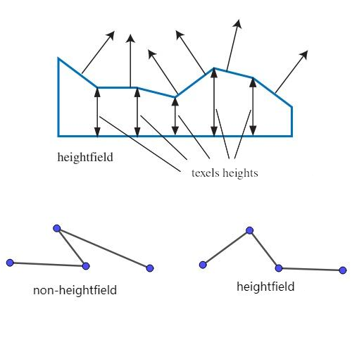
Figure 1: 高度场
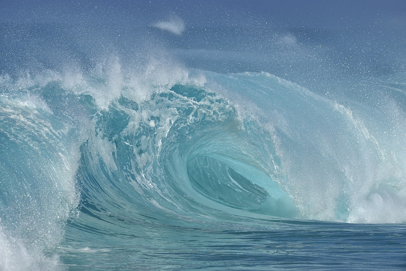
Figure 2: 翻卷巨浪
这将会是一场漫长而艰难的冒险, 完成之后会学到很多知识, 这些知识是后续学习的尝鲜.
我会尽己所能把难啃的部分讲清楚, 带你一步一步地完成冒险.
最早是被 WebGL Water by Evan Wallace 这个例子惊艳到了, 所以才对水面模拟产生了兴趣,
在阅读了它的代码后发现了一些缺陷: 与水互动的物体只有一个规则的球体, 不规则的物体没法与该例子的水面进行合理的互动.
后来找到 Real-time rendering of water caustics by Martin Renou 这篇文章, 发现这缺陷早已被提出并且找到解决方法了,
但在阅读了新的代码后发现新代码并不通用也有一些问题: 模拟的水面并不通用.
为此, 我开始着手解决不通用的问题, 并记录下每一步的思路.
这个章节将会不可避免的涉及一些 JavaScript 代码, 由于想尽量减少实现方案与具体语言/框架之间的关联性,
个人是不太情愿混入 GLSL 以外的代码, 但毕竟是无法避免的, 所以我的想法是不使用 JavaScript 的专有特性,
只使用变量, 条件判断, 循环语句, 函数, 类这些大部分语言都有的通用特性.
如果读者不熟悉
JavaScript的面向对象编程, 可以阅读MDN教程快速熟悉一下: JavaScript 中的类,基本上和其它语言的面向对象编程没太大区别. 也曾试不使用类这一特性, 但实现之后发现代码逻辑很"松散",
对阅读不友好, 所以放弃了这一做法.
4.1. 整体实现思路
即便使用高度场实现水面也不是一件简单的事情, 我们要把整个实现划分为几步:
计算水面的高度场
水面平静时, 水面的高度为零. 对水面拍打时会形成在拍打位置(受力点)为圆心形成一股能量,
把圆心周围的水面推高, 从而形成波纹; 随着时间推移, 越早形成波纹的水面位置, 越是快恢复平静;
在停止受力后, 那股不断往外扩散的能量终究消失到其它地方, 水面最终回归平静.
该规律正好符合一些平时见到的扩散环动画. 这估计就是人喜欢用扩散环来表示水面波纹的原因了.
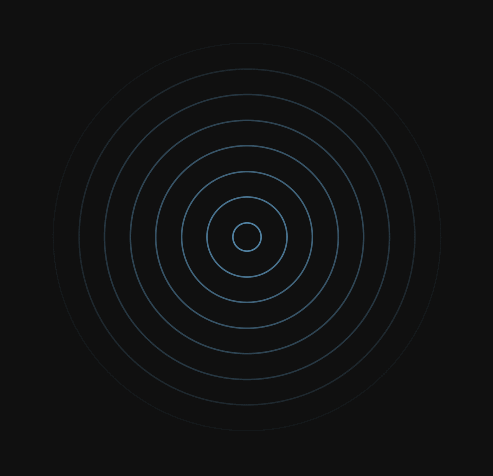
Figure 3: 亮度表示水面高度, 越亮表示更高, 越暗表示更低 (图片来源于: threejs-shader-平面扩散波-demo)
水面高度也是对能量大小的反映, 因此可以视为能量从高能量位置从低能量位置的方向进行转移,
由于能量转移, 每推动一次波纹后能量就会减少, 可以看成把能量的转移分摊到扩散范围内的每个位置上.
图像处理中 拉普拉斯核 能用来模拟扩散现象, 正好高度场是一张图片, 所以扩散的模拟成了图像处理问题.
对高度场进行一次处理就相当于扩散一次, 对上一次扩散结果再进行一次处理就相当于又扩散一次, 如此类推, 直到扩散完毕.
制作水面
这一步需要使用前面计算得到的高度场实现水面波纹, 还需要一些其它贴图来实现水面反射和折射的效果.
只要接触到透明物体, 那么反射和折射效果的实现是必须要学的.
计算焦散
所谓焦散是指光线经过折射发生聚散, 使得部分光线在击中场景时发生相交, 使得场景部分位置具备更高亮度.
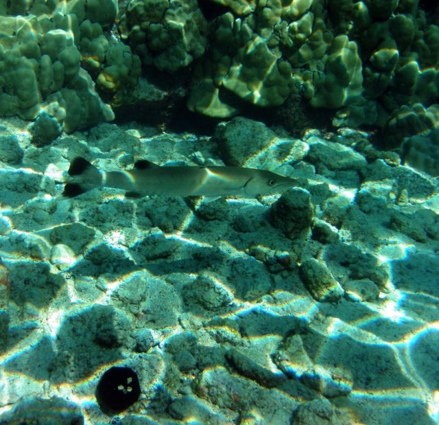
Figure 4: 现实中的焦散
如同计算水面的高度场一样, 焦散的运算结果也是储存在贴图上, 再提供给水底物体的
shader使用.为水底的场景编写
shader这里的水底物体只要一个要求: 只要求能正确渲染焦散效果和阴影.
4.2. 使用 GPU 进行计算
在实现中我们需要借助 GPU 来完成水面高度场的运算, 计算结果被储存在贴图中提供给其它程序使用.
与 CPU 不同, GPU 适用于并行计算, 我们的例子就是这种情况.
那么应该如何使用 GPU 进行运算呢? Three.js 用于后处理的 Pass 类就是一个使用 GPU 运算的例子:
创建一个不会被添加到场景中的平面和一个视锥体大小能正好覆盖完平面的正交相机, 为作为计算上下文的平面编写 Shader 程序,
渲染时把计算结果通过 帧缓冲(Framebuffer Object / FBO) 写入到贴图中供下一次渲染使用.
这其中使用了 Ping-Pong 渲染技巧: 使用两张贴图(或者 FBO)分别用于读和写, 并且每渲染一次就交换两者的读写职能.
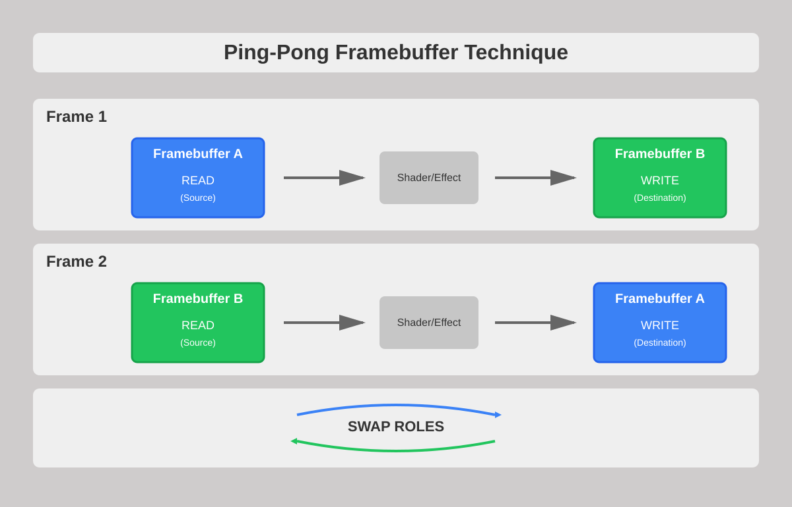
Figure 5: Ping-Pong 渲染技巧
Ping-Pong 渲染技巧可以避免同一个资源的读写竞争, 而且每次渲染都能读取到上一次渲染的结果.
以下是常用的 GPU 计算模板:
class GPUComputeExample { constructor() { this._camera = new THREE.OrthographicsCamera(-1, 1, 1, -1, 0, 1) this._quad = new THREE.Mesh( new THREE.PlaneGeometry(2, 2), // 尺寸是 2x2, 与相机视锥体的远裁剪平面尺寸匹配 new THREE.ShaderMaterial({ uniforms: { tLastFrame: { value: null }, /* your-uniforms */ }, vertexShader: `your-vertex-shader`, fragmentShader: `your-fragment-shader` })) // 默认设置下, 相机的位置和方向是对齐 this._quad 的 // 储存渲染结果的贴图尺寸 const textureSizeX = 512 const textureSizeY = 512 // 贴图类型需要 THREE.FloatType, 计算结果通常是超过默认值 255 this._targetA = new THREE.WebGLRenderTarget( textureSizeX, textureSizeY, { type: THREE.FloatType }) this._targetB = new THREE.WebGLRenderTarget( textureSizeX, textureSizeY, { type: THREE.FloatType }) this.target = this._targetA } // 执行渲染命令, 使用 Ping-Pong 渲染技巧 render(renderer) { // 交换两个 FBO 的读写职能 // this.target 为上一次渲染所使用的 FBO const _newTarget = this.target === this._targetA ? this._targetB: this._targetA // 绑定新 FBO 用于渲染 renderer.setRenderTarget(_newTarget) // 把上一次的渲染结果给到新 FBO this._quad.uniforms['tLastFrame'].value = this.target.texture // 渲染 renderer.render(this._quad, this._camera) // 把新 FBO 标记为上一次使用的 FBO this.target = _newTarget } } // 使用例子 const example = new GPUComputeExample() // 调用渲染命令, renderer 项目中的渲染器对象 example.render(renderer) // 读取渲染结果 example.target.texture
有一点还需要注意, 平面的尺寸不影响计算量, 这是受贴图尺寸影响的;
也不影响贴图能否覆盖其它物体的表面, 这是受贴图映射 UV 的使用方式影响;
因此, 平面尺寸是不值得关心的东西, 但是需要满足: 平面尺寸能正好能被相机视锥体的远裁剪平面覆盖,
否则生成的贴图会有空白边.
4.3. 计算水面的高度场
水面高度场的计算调度比上面的模板复杂一点, 需要分成两个部分:
- 给水面添加作用力
- 波纹扩散计算
这两个部分是不分先后顺序的, 换而言之它们是独立的, 为此需要两个平面作为计算上下文,
但这两个部分的计算结果是共享的, 比方说, 扩散计算可以读取到给水面添加作用力后的渲染结果,
反过来, 给水面添加作用力时也能读取到扩散计算的结果, 高度场的计算调度如下:
import * as THREE from 'three' import vertexShader from './shader/vertex.glsl?raw' import dropFragShader from './shader/drop_frag.glsl?raw' import updateFragShader from './shader/update_frag.glsl?raw' export default class { constructor(textureSizeX, textureSizeY) { const _textureSizeX = 512 const _textureSizeY = 512 if (!textureSizeX) textureSizeX = _textureSizeX if (!textureSizeY) textureSizeY = _textureSizeY this._camera = new THREE.OrthographicCamera(-1, 1, 1, -1, 0, 1) const quadGeo = new THREE.PlaneGeometry(2, 2) // 计算作用力的上下文 this._quadDrop = new THREE.Mesh( quadGeo, new THREE.RawShaderMaterial({ uniforms: { uDropUV: { value: [0, 0] }, uDropRadius: { value: 1 }, uDropStrength: { value: 0 }, tLastFrame: { value: null } // 传递上一帧的计算结果 }, vertexShader: vertexShader, fragmentShader: dropFragShader }) ) // 计算波纹扩散的上下文 this._quadUpdate = new THREE.Mesh( quadGeo, new THREE.RawShaderMaterial({ uniforms: { uDelta: { value: [ 1 / textureSizeX, 1 / textureSizeY ] }, tLastFrame: { value: null } // 传递上一帧的计算结果 }, vertexShader: vertexShader, fragmentShader: updateFragShader }) ) this._targetA = new THREE.WebGLRenderTarget( textureSizeX, textureSizeY, { type: THREE.FloatType }) this._targetB = new THREE.WebGLRenderTarget( textureSizeX, textureSizeY, { type: THREE.FloatType }) this.target = this._targetA } _render(renderer, mesh) { const _newTarget = this.target === this._targetA ? this._targetB: this._targetA renderer.setRenderTarget(_newTarget) const material = mesh.material material.uniforms['tLastFrame'].value = this.target.texture renderer.render(mesh, this._camera) this.target = _newTarget } // 给水面添加作用力, 用水滴击中水面例子 /* u, v: 水滴击中水面的位置, 要求是 [0, 1] 范围的 uv 坐标 dropRadius: 水滴击中水面时所影响的范围 dropStrength: 水滴击中水面时最大的溅起高度 */ addDrop(renderer, u, v, dropRadius, dropStrength) { const material = this._quadDrop.material material.uniforms['uDropUV'].value = [u, v] material.uniforms['uDropRadius'].value = dropRadius material.uniforms['uDropStrength'].value = dropStrength this._render(renderer, this._quadDrop) } // 计算波纹扩散 stepSimulation(renderer) { this._render(renderer, this._quadUpdate) } }
接下来是 Shader 部分了, 它们是计算的重点, 我会在代码里面用注释进行解释.
./shader/vertex.glsl:
attribute vec3 position; attribute vec2 uv; varying vec2 vUV; void main() { /* 参考例子是使用 position.xy * 0.5 + 0.5 充当 UV 坐标, 这么做是有前提的: 平面的尺寸必须为 2x2, 它四个顶点的坐标如下: v1 1 v2 | -1 --- 0 --- 1 | v3 -1 v4 因此 position.xy * 0.5 + 0.5 得到的是 [0, 1] 范围的 UV. 我们这里直接使用 uv. */ vUV = uv; // 高度场的所有计算都是基于 UV 进行, 这一点非常重要 gl_Position = vec4(position.xyz, 1.0); }
计算水面受力的 ./shader/drop_frag.glsl:
precision highp float; precision highp int; #define PI 3.141592653589793 uniform sampler2D tLastFrame; uniform vec2 uDropUV; // 水滴的中心, 要求是 [0, 1] 范围的 uv 坐标 uniform float uDropRadius; // 水滴击中水面时影响的范围半径 uniform float uDropStrength; // 水滴击中水面时最大的溅射高度 varying vec2 vUV; void main() { /* info: 高度场信息 <r, g, b, a> => <水面高度, 高度变化速度, 法线的 x 分量, 法线的 y 分量> */ vec4 info = texture2D(tLastFrame, vUV); // 水滴位置与当前片元的距离 float dist = length(uDropUV - vUV); /* 水滴击中水面时对当前片元造成的影响程度 f(d, r) := 1.0 - d / r, 当 d = r 时, f = 0; 当 d = 0 时, f = 1, 所以 f 定义域的值域范围是: [0, r] => [0, 1] */ float drop = max(0.0, 1.0 - dist / uDropRadius); /* 由于上一步的 drop 范围是 [0, 1], 所以 cos(drop * PI) 的范围是 [-1, 1], 因此 0.5 - cos(drop * PI) * 0.5 的范围是 [0, 1] */ drop = 0.5 - cos(drop * PI) * 0.5; // 根据影响程度和最大溅射高度计算当前片元的水面高度 info.r += drop * uDropStrength; // 把计算结果输出到贴图 gl_FragColor = info; }
计算波纹扩散的 ./shader/update_frag.glsl:
precision highp float; precision highp int; uniform sampler2D tLastFrame; uniform vec2 uDelta; varying vec2 vUV; void main() { vec4 info = texture2D(tLastFrame, vUV); // 计算相邻纹理的平均高度 vec2 dx = vec2(uDelta.x, 0.0); vec2 dy = vec2(0.0, uDelta.y); float g = ( texture2D(tLastFrame, vUV - dx).r + texture2D(tLastFrame, vUV - dy).r + texture2D(tLastFrame, vUV + dx).r + texture2D(tLastFrame, vUV + dy).r - 4.0 * texture2D(tLastFrame, vUV).r ) * 0.25; /* 使用拉普拉斯核模拟扩散 1 / 4 * [0 1 0 1 -4 1 0 1 0] */ // 计算水面高度到平均值的速度 info.g += g; // 模拟能量转移, 因此速度被衰减 info.g *= 0.98; // 沿着速度方向更新水面高度 info.r += info.g; // 计算法线 float ht = texture2D(tLastFrame, vUV + dx).r; vec3 tangent = vec3(uDelta.x, 0.0, ht - info.r); float hbt = texture2D(tLastFrame, vUV + dy).r; vec3 bitangent = vec3(0.0, uDelta.y, hbt - info.r); info.ba = normalize(cross(tangent, bitangent)).xy; /* 水面的波纹顶点: (vUV.x, vUV.y, h), 以 UV 坐标平面作为 XY 平面, 这是因为 threejs 的 PlaneGeometry 是从 XY 平面构建的. 水平方向相邻纹理的高度: hx = texture2D(tLastFrame, vec2(vUV.x + uDelta.x, vUV.y)).r 水平方向相邻纹理对应的水面顶点: (vUV.x + uDelta.x, UV.y, hx) tagent = (vUV.x + uDelta.x, vUV.y, hx) - (vUV.x, vUV.y, h) = (uDelta.x, 0, hx - h) 垂直方向相邻纹理的高度: hy = texture2D(tLastFrame, vec2(vUV.x, vUV.y + uDelta.y)).r 垂直方向相邻纹理对应的水面顶点: (vUV.x, vUV.y + uDelta.y, hy) bitangent = (vUV.x, vUV.y + uDelta.y, hy) - (vUV.x, vUV.y, h) = (0, uDelta.y, hy - h) normal = normalize(cross(bitangent, tangent)) [i, j, k a, 0, b 0, c, d] normal = [-bc, -ad, ac]: [ -(hx - h) * uDelta.y, uDelta.x * (hy - h), uDelta.x * Delta.y ] 储存时只需要储存 nomral.xy 即可, 因为 (normal.x)^2 + (normal.y)^2 + (normal.z)^2 = 1, 可以根据 sqrt(1 - (normal.x)^2 - (normal.y)^2) = ±normal.z 还原出 normal, 需要注意正负号, 所以: (info.b, info.a, sqrt(1. - dot(info.ba, info.ba))) */ gl_FragColor = info; }
该计算模块位于:
src/HeightfieldWaterSimulation/GPUComputation/WaterHeightfield/index.ts
4.4. 制作水面
作为半透明物质(translucent material)的代表, 水面的反射(reflection)和折射(refraction)现象都非常明显.
这两个现象不可避免得与环境发生交互, 比如反射的是水面上的环境, 折射的是水面下的场景,
既然同时具备两种现象, 那么什么情况下显示反射的内容, 什么情况下显示折射的内容.
这要分成两个部分进行讨论, 首先是采样的场景, 需要对环境进行采样分别获取反射和折射的内容,
这项技术叫做环境映射(environment mapping). 通常 需要天空盒(skybox)这种立方体贴图来作为环境,
也有的实时渲染生成环境贴图并从中进行采样, 这里我们同时使用两种方法.
其次, 是反射和折射的选择, 两者可以共存, 一个被观察点的颜色, 有一部分源于反射射线击中的物体,
一部分源于折射射线击中的物体, 在折射的部分大于反射时, 观察者可以看到水底下的场景;
在反射的部分大于折射时, 观察者可以看到水面反射的景像.
在 图形学 - 光和材质: 菲涅耳效应 有讨论菲涅耳反射系数的计算, 该系数就是被观察点颜色反射部分的比例.
4.4.1. 反射 (Reflection)
先来实现反射效果, 首先需要一个立方体贴图(cubemap)作为场景采样源,
在计算出反射射线 \(\overline{R}\) 后根据 \(\overline{R}\) 从立方体贴图中采样, 采样结果作为水面反射的场景.
GLSL 中提供 \(reflect\) 函数来计算反射方向 \(\overline{R}\), 具体思路如下:
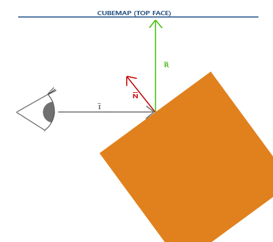
attribute vec3 position; attribute vec3 normal; uniform mat4 modelMatrix; // 场景贴图(立方体贴图) uniform samplerCube tSkyBox; // 是从相机出发到被观察点 vec3 posWorld = (modelMatrix * vec4(position, 1.0)).xyz; /* 这里假设 modelMatrix = translateMatrix * rotationMatrix * scaleMatrix 的缩放变换 scaleMatrix 是等比缩放, 这样在不考虑平移变换的情况下 M = translateMatrix * rotationMatrix 的逆矩阵就是它自身的转置矩阵 transpose(M) */ vec3 normalWorld = (modelMatrix * vec4(normal, 0.0)).xyz; vec3 I = normalize(posWorld - cameraPosition); vec3 N = normalize(normalWorld); vec3 R = normalize(reflect(I, N)); vec4 reflectedColor = textureCube(tSkyBox, R);
采样的场景可以是静态, 也可以是动态的, 不管是哪一种, 最后在
shader中的读取都是一样的,要动态的反射动态场景, 需要根据场景实时生成立方体贴图用作采样,
three.js的 CubeCamera 就是用于把场景写入到立体贴图中.如果所使用的图形库没有同类接口, 可以参考 图形学 - 光和材质: 位置光源的阴影 的阴影生成立方体贴图的思路.
和使用 GPU 计算的 shader 不同, 作为场景物体材质所使用的 shader 需要注意坐标系的变换,
比如这里计算如何光线 \(\overline{I}\) 是需要把顶点坐标 \(position\) 变换到世界坐标系上,
因为相机位置 \(cameraPosition\) 就是世界坐标系的坐标.
4.4.2. 折射 (Refraction)
大部分教程都会使用立方体贴图用于折射的采样, 但该例子的水底的样子并非由立方体贴图提供的,
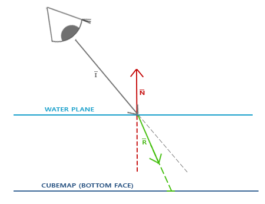
这么做是因为水底场景并非固定的, 可以按照自己的意愿添加物体, 所以这里只能实时生成环境贴图, 再从中取样.
但这里并不需要实时计算立方体贴图, 因为相比反射的大幅度地让出射射线偏离入射射线, 折射只会造成轻微的偏离,
换而言之, 透过水面观察到的景象(有水面景象)与移除水面直接观察到的景象(无水面景象)相比, 两者只是发生了轻微偏移,
这意味着折射射线从无水面景象进行采样作为有水面景象. 因此, 场景贴图的生成思路大概如下:
// 专门使用一个 FBO 用于渲染水面以外的场景 const underWaterEnvMapTarget = new THREE.WebGLRenderTarget( heightfieldSizeX, heightfieldSizeY) const oldRenderTarget = renderer.getRenderTarget() // 设置 FBO 用于接收渲染结果用作场景贴图 renderer.setRenderTarget(underWaterEnvMapTarget) // 隐藏水面 water.visible = false // 渲染 renderer.render(scene, camera) // 恢复水面的显示 water.visible = true // 恢复原本的 FBO renderer.setRenderTarget(oldRenderTarget) // 把场景贴图提供给到水面的材质使用 water.material.uniforms['tEnvMap'].value = underWaterEnvMapTarget.target
在得到环境贴图后, 可以先计算出折射方向 \(\overline{R}\) 再根据它从环境贴图中采样,
GLSL 也提供了 \(refract\) 函数用于计算折射方向 \(\overline{R}\), 具体思路如下:
attribute vec3 position; attribute vec3 normal; uniform sampler2D tEnvMap; uniform mat4 modelMatrix; uniform mat4 viewMatrix; uniform mat4 projectionMatrix; #define AIR_IOR 1.0 #define WATER_IOR 1.325 // 是从相机出发到被观察点 vec3 posWorld = (modelMatrix * vec4(position, 1.)).xyz; vec3 normalWorld = (modelMatrix * vec4(normal, 0.0)).xyz; vec3 I = normalize(posWorld - cameraPosition); /* 这里假设 modelMatrix = translateMatrix * rotationMatrix * scaleMatrix 的缩放变换 scaleMatrix 是等比缩放, 这样在不考虑平移变换的情况下 M = translateMatrix * rotationMatrix 的逆矩阵就是它自身的转置矩阵 transpose(M) */ vec3 N = normalize(normalWorld); float eta = AIR_IOR / WATER_IOR; vec3 R = normalize(refract(I, N, eta)); mat4 VP = projectionMatrix * viewMatrix; vec4 refractedPosNDC = MVP * normalize(vec4(posWorld + R, 1.0)); // 计算 UV 坐标, 用于从环境贴图中采样 vec2 refractedUV = refractedPosNDC.xy / refractedPosNDC.w; vec4 refractedColor = texture2D(tEnvMap, refractedUV);
现实中的折射其实会形成色散(dispersion)现象:
同一种光学材质对不同颜色的折射率(refractive index)有所差别, 波长越短的光, 折射率越大; 波长越长的光, 折射率越小.
造成同一束光被分解成不同颜色的光显示在不同位置上. 色散有时候也被叫做色差(chromatic aberration). 彩虹就是色散形成的.
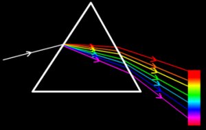
Figure 6: 色散 (图片来源于: http://www.myliushu.com/3020.html)
因此, 可以这样模拟色散效果,
float etaGrad = 0.04; vec3 refractedColor = vec3(1.); // 色散过后的颜色 // 红色出射折射率最小 vec4 refractedPosNDC = MVP * normalize(vec4(position + R, 1.0)); vec2 refractedUV = refractedPosNDC.xy / refractedPosNDC.w; color = texture2D(tEnvMap, refractedUV); refractedColor.r = refractedColor.r; R = normalize(refract(I, N, eta * (1.0 - etaGrad))); refractedPosNDC = MVP * normalize(vec4(position + R, 1.0)); refractedUV = refractedPosNDC.xy / refractedPosNDC.w; refractedColor = texture2D(tEnvMap, refractedUV); refractedColor.g = refractedColor.g; // 蓝色的出射折射率最大 R = normalize(refract(I, N, eta * (1.0 - etaGrad * 2.0))); refractedPosNDC = VP * normalize(vec4(position + R, 1.0)); refractedUV = refractedPosNDC.xy / refractedPosNDC.w; refractedColor = texture2D(tEnvMap, refractedUV); refractedColor.b = refractedColor.b;
4.4.3. 综合反射与折射
计算出菲涅耳系数作为折射部分和反射部分之间的渐变系数, 最终渐变结果作为片元颜色. 具体实现如下:
const float f0 = pow(AIR_IOR - WATER_IOR / AIR_IOR + WATER_IOR, 2.0); float fresnelFactor = f0 + (1.0 - f0) * pow(1.0 - dot(-eye, norm), 5.0); float fresnelScale = 0.8; vec3 finalColor = mix(refractedColor, reflectedColor, fresnelScale * clamp(fresnelFactor, 0., 1.));
4.4.4. 使用高度场制造波纹
我们会使用一个 3D 平面, 配合高度场修改平面顶点的 \(z\) 分量来实现水面.
就像使用柏林噪声生成地形一样, 3D 平面需要有较相当数量的顶点才能让平面实现"弯曲":
const width = height = 2 // 要设置多一点的分段数量 const segmentWidth = segmentHeight = 100 const water = new THREE.Mesh( new THREE.PlaneGeometry(width, height, segmentWidth, segmentHeight), // ... your material )
水面模型所使用的 shader 如下,
Vertex Shader:
attribute vec3 cameraPosition; attribute vec3 position; attribute vec2 uv; uniform mat4 modelViewMatrix; uniform mat4 projectionMatrix; uniform sampler2D tHeightfield; varying float vFresnelFactor; varying vec3 vReflectedDir; varying vec2 vChromaticAberrationUV[3]; #define AIR_IOR 1.0 #define WATER_IOR 1.333 // IOR 可以从这里查找 https://pixelandpoly.com/ior.html void main () { vec4 info = texture2D(tHeightfield, uv); // 根据高度场计算出当前顶点的坐标 vec3 pos = vec3(position.xy, position.z + info.r); vec3 posWorld = (modelMatrix * vec4(pos, 1.)).xyz; // 计算出当前顶点的法线向量: 这种方法只限于水面的模型的缩放为等比缩放 vec3 normWorld = (modelMatrix * vec4(info.ba, sqrt(1. - dot(info.ba, info.ba)), 0.)).xyz; const float eta = AIR_IOR / WATER_IOR; vec3 eye = normalize(posWorld.xyz - cameraPosition); // 计算折射向量 vec3 refractedDir = normalize(refract(eye, normWorld, eta)); // 计算反射向量 vReflectedDir = normalize(reflect(eye, normWorld)); // 计算菲涅耳系数 const float f0 = pow((AIR_IOR - WATER_IOR) / (AIR_IOR + WATER_IOR), 2.0); vFresnelFactor = f0 + (1.0 - f0) * pow(1.0 - dot(-eye, normWorld), 5.0); mat4 VP = projectionMatrix * viewMatrix; // 计算色差 (chromatic aberration), 模拟不同波长的光对折射率的影响 float etaGrad = 0.04; // Chromatic Aberration Factor vec4 refractedPos = VP * normalize(vec4(posWorld + refractedDir, 1.0)); vChromaticAberrationUV[0] = refractedPos.xy / refractedPos.w * 0.5 + 0.5; refractedPos = VP * normalize(vec4(posWorld + normalize(refract(eye, normWorld, eta * (1.0 - etaGrad))), 1.0)); vChromaticAberrationUV[1] = refractedPos.xy / refractedPos.w * 0.5 + 0.5; refractedPos = VP * normalize(vec4(posWorld + normalize(refract(eye, normWorld, eta * (1.0 - etaGrad * 2.0))), 1.0)); vChromaticAberrationUV[2] = refractedPos.xy / refractedPos.w * 0.5 + 0.5; gl_Position = VP * vec4(posWorld, 1.); }
Fragment Shader:
uniform samplerCube tSkyBox; uniform sampler2D tEnvMap; varying float vFresnelFactor; varying vec3 vReflectedDir; varying vec2 vChromaticAberrationUV[3]; void main() { vec3 reflectedColor = textureCube(tSkyBox, vReflectedDir).xyz; vec3 refractedColor = vec3(1.); refractedColor.r = texture2D(tEnvMap, vChromaticAberrationUV[0]).r; refractedColor.g = texture2D(tEnvMap, vChromaticAberrationUV[1]).g; refractedColor.b = texture2D(tEnvMap, vChromaticAberrationUV[2]).b; vec3 color = mix(refractedColor, reflectedColor, clamp(vFresnelFactor, 0., 1.)); gl_FragColor = vec4(color, 1.); }
该材质位于:
src/HeightfieldWaterSimulation/materials/WaterMaterial/index.ts
4.5. 计算焦散 (Caustic)
焦散的形成原因很简单, 光线在经过折射后分散在不同位置上,
部分光线聚焦(converging)在相同位置上, 部分光线则是被发散(diverging)在不同位置上,
光线聚焦在一起的位置的亮度更高, 相比之下, 没有光聚焦的位置的亮度相对低一些.
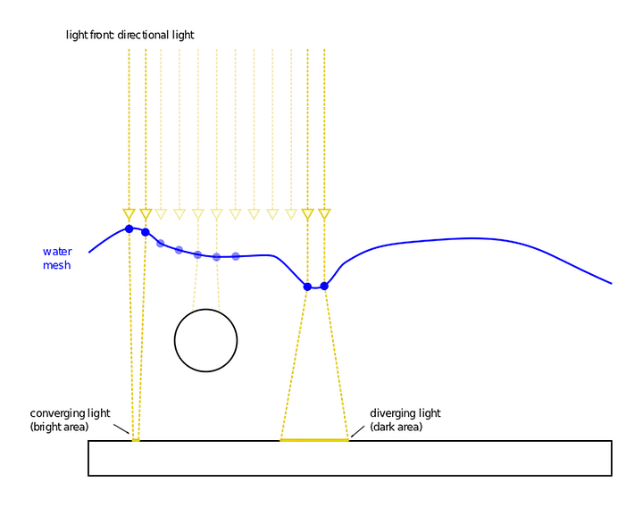
Figure 7: 图片来自于 Real-time rendering of water caustics by Martin Renou
4.5.1. 如何在程序中量化聚散程度
Evan Wallace 的 Rendering Realtime Caustics in WebGL 介绍了光线在不同时刻上的投影面积比来量化聚散程度,
其中使用到了波前(wavefront)的概念.
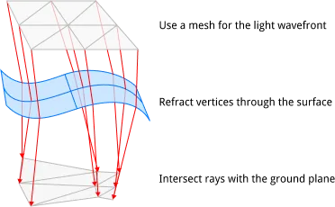
所谓波前是指从波源(source)出发, 由波传播了相同时间的点所构成的面, 通俗点就是波在传播过程中某一刻的位置集合.
波的传播方向与波前的局部垂直, 因此, 波前的形状可以反映出波的传播方向,
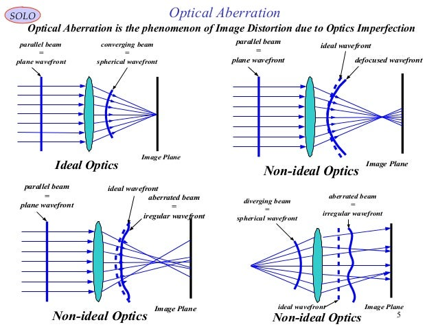
Figure 8: 光学像差和波前 (图片来源于 Slideshare)
光学像差(optical aberration)是指由于光学系统不完美(optics imperfection)所导致的图像扭曲(image distorition).
在理想的光学系统(ideal optics)中, 波前的形状很好的反映了透镜的厚度变化, 由于光在透镜要比在空气中的传播速度要慢,
因此在相同时间内, 光在透镜较厚的部位要比较薄的部位的传播距离更小,
在非理想情况下, 由于工艺不完善的导致透镜的密度不均匀, 使得非理想情况下与理想情况下的波前存在误差.
量化聚散程度的方法很简单, 把水体看作是一个巨大的透镜, 把水面形状看作是折射发生时的波前形状,
比较光在折射前的投影面积 \(A_1\) 和折射后的投影面积 \(A_2\) 之间的大小, 因折射的不同导致两者大小不一致:
\(\frac{A(t_1)}{A(t_2)} \gt 1\) 说明发生了聚焦, \(\frac{A(t_1)}{A(t_2)} \lt 1\) 说明发生了发散.
Evan Wallace的做法稍微有些不同:分别计算水面平静时和不平静时光线在水底的投影面积 \(A_1\) 和 \(A_2\), 最后进行比较 \(\frac{A_1}{A_2}\).
问题是如何计算投影面积呢? 想要在 shader 中根据顶点信息计算面积的前提是: 可以获得顶点所处面(三角形)的所有顶点信息.
有三种方法可以做得到:
一是通过 调整 VAO 和 VBO 来一次性把面的所有顶点传入到 shader 中再计算面积;
二是在 fragment shader 中使用 求导函数 \(dFdx\) 和 \(dFdy\) 分别获取当前片元在 \(x\) 和 \(y\) 方向上的属性差,
如果是计算片元的顶点坐标差 \(\vec{v_x}\) 和 \(\vec{v_y}\), 那么就可以计算出三角面的面积: \(\frac{1}{2} |\vec{v_x}| |\vec{v_y}|\);
三是分别把光与水面的交点写入贴图 \(A\) 和把折射光与水底交点写入贴图 \(B\), 再用在专门的 shader 中计算焦散,
这种方法其实是第二种方法的变体, 区别在于不使用 \(dFdx\) 和 \(dFdy\) 两个函数,
但显存和内存的占用会更高和渲染效率会更低, 开发也更为麻烦, 除非需要复用到这两张贴图, 否则不建议使用第三种方法.
因此, 第二种方法会好一点. 正如第三种方法所言, 在计算面积比前要找出光线与水面的交点, 以及折射光线与水底的交点.
4.5.2. 在光栅化渲染中使用 Ray Marching 逐个像素找出射线与场景的交点
找出光线与水面的交点非常简单, 当找出光线与水底的交点就不是一件容易的事情.
我们的情况和 Evan Wallace 的例子不同, Evan Wallace 的水底环境是由规则几何体构成的,
这意味着很容易通过数学方法找出光线与水池的交点, 然后计算出光线在水底中的投影面积;
而我们的水底环境是由不规则几何体构成的, 没法通过数学方法找出光线与它们的交点.
对于不规则的场景, 通常是使用 Ray Marching 来找射线和场景的交点, 与 SDF 建模的场景不同,
光栅化的场景需要配合深度贴图(深度 buffer)来找出光线与场景的交点,
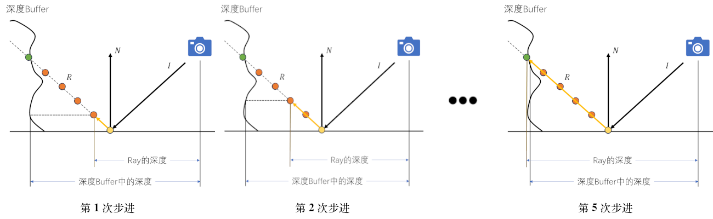
Figure 9: 光线步进配合深度贴图找出光线 \(R\) 与场景的交点
上图中沿着射线 \(R\) 移动若干像素从深度贴图中读取深度信息,
再比较深度贴图中的深度 \(d\) 与射线 \(R\) 当前位置(Step X)的深度 \(z\), 如果 \(d \le z\), 那么射线 \(R\) 与场景相交.
比如上图中点 \(S\) 的深度 \(d\) 要小于点 Step 3 的深度 \(z\), 因此 \(R\) 与场景相交,
但是射线明显进入物体内部了, 显然 \(P\) 才是我们想要的结果.
为了使射线不进入物体中, 人们通常会添加容错范围 \(\epsilon\) 进行判断: \(0 \le d - z \le \epsilon\),
只要满足该条件就认为射线与场景相交. 如下图, 在 Step 2 时会认为 \(B\) 是 \(R\) 与场景的交点.
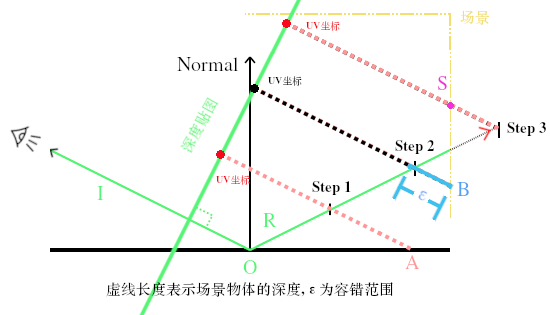
\(\epsilon\) 要与步长成正比, 步长越大, \(\epsilon\) 也应该越大, 这样才容易保证射线不进入物体中.
保证射线不进入物体中不是必须的, 但在判定是否相交时最好统一要么进入, 要么统一不进入,
从图中可以发现, 这个容错会导致交点发生偏移, 进入与不进入两者所导致的偏移方向是不一致的,
应尽量保持一致. 如果是允许进入物体内部, \(\epsilon\) 就是可进入的最大范围了.
\(\epsilon\) 在这里的几何含义是物体表面的厚度(thickness).
\(\epsilon\) 并不一定要作为深度差的容错范围, 也可以作为交点与射线之间的距离最大值,
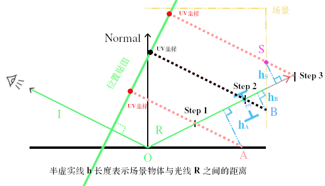
以上图为例, 在 Step 2 中, 点 \(B\) 与射线 \(R\) 的距离 \(h_{B}\) 小于 \(\epsilon\), 那么就认为 \(B\) 是 \(R\) 与场景的交点.
以 点与线段之间的距离 来衡量顶点是否为交点不是一个很常见的方法, 它的存在告诉我们判断是否相交的并非只能用深度.
甚至结合两者进行判断: 先判断是否满足 \(d \le z\), 如果满足就进一步判断点与线段的距离是否小于 \(\epsilon\), 如果是那么就认为相交.
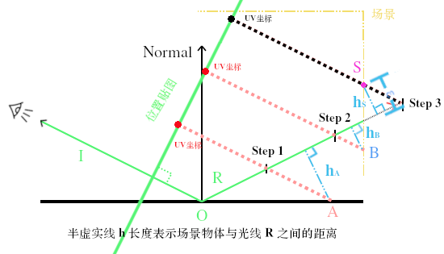
上图中, 在 Step 3 时, \(S\) 的深度 \(d\) 小于点 Step 3 的深度 \(z\), 并且 \(S\) 与射线 \(R\) 的距离 \(h_{S}\) 小于 \(\epsilon\), 因此 \(S\) 为交点.
不管如果判断, 都要面临着两个问题:
第一个问题, 如何实现沿着 \(R\) 在深度/位置贴图上移动一个像素;
第二个问题, 如何计算出移动一个像素后的深度变化.
只要知道这两个问题的答案, 我们就能知道视点空间上的长度和屏幕空间中的长度是如何对应的,
便能以像素为单位指定 Ray Marching 的步长. 接下来会花费较长的篇幅来探索这两个问题的答案.
这一部分要求读者熟练掌握 图形学 - OpenGL坐标变换 的内容.
先假设 \(r_{world}\) 是世界坐标系上的位移向量: \((x_r, y_r, z_r, 0)\), \(A_{world}\) 是世界坐标系上的一个顶点: \((x, y, z, 1)\).
现在让该顶点沿着 \(r_{world}\) 平移: \(B_{world} = A_{world} + r_{world}\),
\(\begin{equation*}\begin{aligned} & B_{clip} \\ = & M_{viewproj} B_{world} \\ = & M_{viewproj} (A_{world} + r_{world}) \\ = & M_{viewproj} A_{world} + M_{viewproj} r_{world} \\ = & A_{clip} + r_{clip} \\ \rightarrow & r_{clip} = M_{viewproj} r_{world} = B_{clip} - A_{clip} \end{aligned} \end{equation*}\)
不管是正交投影还是透视投影, 在到 NDC 空间之前(不包括 NDC 空间)的所有变换都是线性的(变化是均匀的),
所以才能对 \(r_{world}\) 进行变换就能得出 \(r_{world}\) 在其它空间 \(space\) 上的变化量 \(r_{space}\): \(B_{space} - A_{space}\).
但是在 NDC 空间上则不一定成立, 比如正交投影中 \((r_{clip})_{w} = 0\) 使得 \(\frac{(r_{clip})_{xyz}}{(r_{clip})_{w}}\) 变成无效运算.
唯一的做法是把 \(B_{clip}\) 和 \(A_{clip}\) 一同转换到其它空间 \(space\) 上, 然后计算两者之间的变化量 \(r_{space}\),
从而找到 \(r_{clip}\) 转换到在空间 \(space\) 上的形式. 可以通过把 \(B_{clip}\) 转换到在 NDC 空间上得到该结论:
\(\begin{equation*}\begin{aligned} & B_{ndc} \\ = & \frac{(B_{clip})_{xyz}}{(B_{clip})_{w}} \\ = & \frac{(A_{clip} + r_{clip})_{xyz}}{(A_{clip} + r_{clip})_{w}} \\ = & \frac{(A_{clip})_{xyz} + (r_{clip})_{xyz}}{(A_{clip})_{w} + (r_{clip})_{w}} \\ = & \frac{(A_{clip})_{xyz}}{(A_{clip})_{w} + (r_{clip})_{w}} + \frac{(r_{clip})_{xyz}}{(A_{clip})_{w} + (r_{clip})_{w}} \end{aligned}\end{equation*}\)
可以看到 \(r_{ndc} = B_{ndc} - A_{ndc} \ne \frac{(r_{clip})_{xyz}}{(r_{clip})_{w}}\), 换而言之 \(r_{ndc}\) 不符合 NDC 坐标定义.
因此, 只能通过硬算 \(B_{ndc} - A_{ndc}\) 得出变化量 \(r_{clip}\) 在 NDC 上的形式 \(r_{ndc}\) 为:
\(\begin{equation*}\begin{aligned} & r_{ndc} \\ = & B_{ndc} - A_{ndc} \\ = & \frac{(A_{clip})_{xyz} + (r_{clip})_{xyz}}{(A_{clip})_{w} + (r_{clip})_{w}} - \frac{(A_{clip})_{xyz}}{(A_{clip})_{w}} \\ = & \frac{(A_{clip})_{w} [(A_{clip})_{xyz} + (r_{clip})_{xyz}] - (A_{clip})_{xyz} [(A_{clip})_{w} + (r_{clip})_{w}]}{(A_{clip})_{w} [(A_{clip})_{w} + (r_{clip})_{xyz}]} \\ = & \frac{(A_{clip})_{w} (B_{clip})_{xyz} - (A_{clip})_{xyz} (B_{clip})_{w} }{(A_{clip})_{w} (B_{clip})_{w}} \end{aligned}\end{equation*}\)
\(r_{clip}\) 在 UVW 空间上的形式 \(r_{uvw}\) 为:
\(\begin{equation*}\begin{aligned} & B_{uvw} \\ = & (B_{ndc} + 1) \div 2 \\ = & (A_{ndc} + r_{ndc} + 1) \div 2 \\ = & (A_{ndc} + 1) \div 2 + r_{ndc} \div 2 \\ = & A_{uvw} + r_{uvw} \\ \rightarrow & r_{uvw} = \frac{r_{ndc}}{2} = B_{uvw} - A_{uvw} \end{aligned}\end{equation*}\)
正如等式所示, \(r_{uvw} = B_{uvw} - A_{uvw} \ne \frac{r_{ndc} + 1}{2}\), \(r_{uvw}\) 不符合 UVW 坐标的定义.
\(r_{clip}\) 在屏幕空间上的形式 \(r_{screen}\) 为:
\(\begin{equation*}\begin{aligned} & B_{screen} \\ = & (B_{uvw})_{xy} \times uResolution \\ = & ((A_{uvw})_{xy} + (r_{uvw})_{xy}) \times uResolution \\ = & (A_{uvw})_{xy} \times uResolution + (r_{uvw})_{xy} \times uResolution \\ = & A_{screen} + r_{screen} \\ \rightarrow & r_{screen} = (r_{uvw})_{xy} \times uResolution \end{aligned}\end{equation*}\)
根据 Bresenham 算法, 想要遍历直线上每个像素, 需要先找出 \(r_{screen}\) 当中最大分量的绝对值 \(maxComp\):
\(xMain = \begin{cases} 1 & \text{if } |(r_{screen})_{x}| \ge |(r_{screen})_{y}| \\ 0 & \text{else} \end{cases}\)
\(maxComp = mix(|(r_{screen})_{y}|, |(r_{screen})_{x}|, xMain) = max(|(r_{screen})_{x}|, |(r_{screen})_{y}|)\)
\(maxComp\) 被称为切比雪夫距离 (Chebyshev distance), 根据该值对 \(r_{screen}\) 归一化,
就能得出沿着 \(r_{screen}\) 方向移动到下一个像素的位移向量 \(d_{frag}\) 为:
\(d_{frag} = \frac{r_{screen}}{maxComp}\)
需要强调一点, 切比雪夫距离 \(maxComp\) 有可能会为 0:
比如 \(r_{ndc} = \left(0, 0, 0\right)\);
或者 \(r_{ndc} = \left(0, 0, z\right)\) 且 \(z \ne 0\);
又或者 \(r_{ndc} = \left(0, y, z \right)\) 且 \(y \le 0\) 和 \(z \ne 0\);
又或者 \(r_{ndc} = \left(x, 0, z \right)\) 且 \(x \le 0\) 和 \(z \ne 0\).
也就是 \(r_{world}\) 几乎与相机近裁剪平面垂直时, \(maxComp\) 就趋向于 0.
也有可能为一个近乎无限大的值:
在 \((A_{view})_z (B_{view})_z\) 很小时, \(maxComp\) 就会趋向无限大.
换句话说就是 \(r_{world}\) 几乎与近裁剪平面平行时, \(maxComp\) 就会趋向无限大.
在实际开发中, 需要保证 \(maxComp\) 要小于 \(max(uResolution.x, uResolution.y)\).
\(d_{frag}\) 在纹理坐标系上为 \(d_{uv}\):
\(d_{uv} = d_{frag} \div uResolution\)
接下来就是讨论移动一个像素时的深度变化 \(d_{w}\) 了.
正交投影
在正交投影中, 存在这些关系 \(\begin{cases}\begin{aligned} (r_{world})_{w} & = 0 \rightarrow (r_{clip})_{w} = 0 \\ (A_{clip})_w & = (B_{clip})_w = 1 \end{aligned}\end{cases} \rightarrow \begin{cases} \begin{aligned} A_{ndc} &= A_{clip} \\ B_{ndc} &= B_{clip} \\ r_{ndc} &= r_{clip} \end{aligned} \end{cases}\),
由此可发现正交投影中的 NDC/UVW 变化是线性的, 所以 \(d_{w}\) 为:
\(d_{w} = \frac{|d_{uv}|}{|(r_{uvw})_{xy}|} \times (r_{uvw})_{z} = \frac{|d_{frag}|}{|r_{screen}|} \times (r_{uvw})_{z} = \frac{(r_{uvw})_{z}}{maxComp} = \frac{(r_{clip})_{z}}{2 \times maxComp}\)
因此移动一个像素所产生的变化变换到 UVW 空间上为: \(d_{uvw} = (d_{uv}, d_{w})\)
再可以还原回 NDC 上: \(d_{ndc} = d_{uvw} \times 2\)
透视投影
在透视投影中, NDC/UVW 的变化为非线性的, 并且存在这些关系:
\(\begin{cases} (A_{clip})_{w} = -(A_{view})_{z} \\ (B_{clip})_{w} = -(B_{view})_{z} = - [(A_{view})_{z} + (r_{view})_{z} ] \\ (r_{view})_{w} = -(r_{view})_{z} \end{cases}\)
然后计算出透视投影下的 \(r_{ndc}\):
\(\begin{equation*} \begin{aligned} & (r_{ndc})_{z} \\ = & \frac{(A_{clip})_{w} (B_{clip})_{z} - (A_{clip})_{z} (B_{clip})_{w}}{(A_{clip})_{w} (B_{clip})_{w}} \\ = & \frac{ -(A_{view})_{z} \times (B_{clip})_{z} - (A_{clip})_{z} \times -(B_{view})_{z} }{-(A_{view})_{z} \times -(B_{view})_{z}} \\ = & \frac{(B_{clip})_{z}}{-(B_{view})_{z}} - \frac{(A_{clip})_{z}}{-(A_{view})_{z}} \\ = & (B_{ndc})_{z} - (A_{ndc})_z \\ = & \frac{(A_{clip})_{z} + (r_{clip})_{z}}{(A_{view})_{z} + (r_{view})_{z}} - \frac{(A_{clip})_{z}}{(A_{view})_{z}} \end{aligned} \end{equation*}\)
但该等式没能找出什么有用的信息, 但视点坐标的 \(z\) 分量的出现告诉我们,
可尝试根据透视投影矩阵计算出 NDC 上的 \(z\) 分量变化 \((r_{ndc})_{z}\),
其中 \(n\) 和 \(f\) 分别是相机的近裁剪平面和远裁剪平面的距离:
\(\begin{cases} (A_{ndc})_{z} = \frac{ -\frac{f + n}{f - n} (A_{view})_{z} - \frac{2fn}{f - n} }{- (A_{view})_{z}} = \frac{ \frac{f + n}{f - n} (A_{view})_{z} + \frac{2fn}{f - n} }{(A_{view})_{z}} = \frac{f - n}{f + n} + \frac{2fn}{(f - n) (A_{view})_{z}} \\ (B_{ndc})_{z} = \frac{f - n}{f + n} + \frac{2fn}{(f - n) (B_{view})_{z}} \end{cases}\)
\(\begin{equation*} \begin{aligned} & (r_{ndc})_{z} \\ = & (B_{ndc})_{z} - (A_{ndc})_{z} \\ = & \frac{2fn}{(f - n) (B_{view})_{z}} - \frac{2fn}{(f - n) (A_{view})_{z}} \\ = & \frac{2fn}{f - n} \left[ \frac{1}{(B_{view})_{z}} - \frac{1}{(A_{view})_{z}} \right] \\ = & \frac{2fn}{f - n} \left[ \frac{1}{(A_{view})_{z} + (r_{view})_{z}} - \frac{1}{(A_{view})_{z}} \right] \end{aligned} \end{equation*}\)
通过上面的关系发现 UVW 空间上的 \(z\) 分量变化 \((r_{uvw})_{z}\), 也就是非线性深度的变化量:
\(\begin{equation*} \begin{aligned} & \left[ \frac{1}{(B_{view})_{z}} - \frac{1}{(A_{view})_{z}} \right] \\ = & (r_{ndc})_{z} \div \frac{2fn}{f - n} \\ = & (r_{ndc})_{z} \frac{f - n}{2fn} \\ = & \frac{1}{2} (r_{ndc})_{z} \left[ \frac{1}{n} - \frac{1}{f} \right] \\ \rightarrow & \frac{(r_{ndc})_{z}}{2} \\ = & \frac{ \frac{1}{(B_{view})_{z}} - \frac{1}{(A_{view})_{z}} }{ \frac{1}{n} - \frac{1}{f} } \\ = & \frac{1}{\frac{1}{f} - \frac{1}{n}} \left[ \left( -\frac{1}{(B_{view}){z}} - \frac{1}{n} \right) - \left( -\frac{1}{(A_{view}){z}} - \frac{1}{n} \right) \right] \\ = & B_{depth} - A_{depth} \\ = & (r_{uvw})_{z} \end{aligned} \end{equation*}\)
沿着方向 \(\overrightarrow{AB}\) 在移动一个像素时, 起点 \(A\) 和 \(k = \frac{1}{\frac{1}{n} - \frac{1}{f}} = \frac{f - n}{fn}\) 都是固定的,
可以把 \((r_{uvw})_{z}\) 看作是一个函数 \((r_{uvw})_{z} = f((B_{view})_z) = k \left(\frac{1}{(B_{view})_z} - \frac{1}{(A_{view})_z} \right)\),
把 \((B_{view})_{z}\) 看作是当前像素位置所对应的视点空间 \(z\) 分量, \(f\) 是一个倒数函数 (reciprocal function),
每次 \((B_{view})_{z}\) 发生固定变化时, 深度变化 \((r_{uvw})_{z}\) 不是固定的, 因此关系 \(d_{w} = \frac{|d_{frag}|}{|r_{screen}|} \times (r_{uvw})_{z} = \frac{(r_{uvw})_{z}}{maxComp}\) 不成立.
现在剩下的唯一办法就是: 先计算出当前像素所对应的视点空间 \(z\) 分量, 再根据该 \(z\) 分量计算出深度.
但问题是, 要如何计算出当前像素所对应的视点空间 \(z\) 分量呢?
假设屏幕空间上的变化量为 \(D_{screen} = m \times r_{screen} = i \times d_{frag}\), 其中 \(m = \frac{i}{maxComp}\), \(i \in [0, maxComp]\),
其所对应的视点空间上的变化量为 \(D_{view} = n \times r_{view} = n \times M_{view}r_{world}\), 其中 \(n \in \mathbb{R}\),
假设当前的像素坐标为 \(P_{screen} = A_{screen} + D_{screen}\),
其对应的视点空间坐标为 \(P_{view} = A_{view} + D_{view}\).
由于视点空间和屏幕空间上各自的变化都是线性的, 很容易就会认为 \(D_{view}\) 和 \(D_{screen}\) 之间也是线性关系,
如果 \(m\) 与 \(n\) 成线性关系的话, 那么它们之间就存在一个常数比例 \(k = \frac{n}{m}\),
然后可以通过 \(m\) 进行线性插值得出 \((P_{view})_{z} = (A_{view})_{z} + km \times (r_{view})_{z}\),
并且应该是 \(k = 1\), 因为 \(\overrightarrow{AP}_{screen}\) 是 \(\overrightarrow{AP}_{view}\) 的投影, 所以 \(\frac{\left|\overrightarrow{AP}_{screen}\right|}{\left|\overrightarrow{AB}_{screen}\right|} = \frac{\left|\overrightarrow{AP}_{view}\right|}{\left|\overrightarrow{AB}_{view}\right|}\) 理应成立.
直觉终究要被进行验证:
\(P_{screen}\) 对应的纹理坐标为 \(P_{uv} = P_{screen} \div uResolution\),
其对应的 NDC 坐标的 \(xy\) 分量为 \((P_{ndc})_{xy} = P_{uv} \div 2 - 1\),
其对应的裁剪坐标的 \(xy\) 分量为 \((P_{clip})_{xy} = (P_{ndc})_{xy} \times (P_{view})_{z}\),
至此可以得到 \(D_{screen}\) 与 \((D_{view})_{z}\) 之间的联系,
\(\begin{equation*}\begin{aligned} & (P_{clip})_{xy} \\ = & (P_{ndc})_{xy} \times (P_{view})_{z} \\ = & \left( \left[ (A_{screen} + D_{screen}) \div uResolution \right] \div 2 - 1 \right) \times \left[ (A_{view})_{z} + (D_{view})_z \right] \\ \rightarrow & \frac{(P_{clip})_{xy}}{(A_{view})_{z} + (D_{view})_z} = \left[ (A_{screen} + D_{screen}) \div uResolution \right] \div 2 - 1 \\ \rightarrow & D_{screen} = \left[ \frac{(P_{clip})_{xy}}{(A_{view})_{z} + (D_{view})_z} + 1 \right] \times 2 \times uResolution - A_{screen} \\ \rightarrow & m = \frac{\left[ \frac{(P_{clip})_{xy}}{(A_{view})_{z} + n \times (r_{view})_{z}} + 1 \right] \times 2 \times uResolution - A_{screen}}{r_{screen}} \end{aligned}\end{equation*}\)
把 \(m\) 看作一个以 \(n\) 为参数的函数: \(m = f(n)\). 如你所见, 两者之间并非线性关系,
也就是说常数 \(k\) 是不存在的, 这意味着 \((P_{view})_{z} \ne (A_{view})_{z} + km \times (r_{view})_{z}\).
那么还有其它办法吗? 其实 在透视投影中对任意属性进行插值 就告诉了我们方法,
受限于篇幅, 这里直接针对上下文给出调整过的结论:
\((P_{view})_{z} = \frac{(A_{view})_{z} (B_{view})_{z}}{(B_{view})_{z} + t \times \left[ (A_{view})_{z} - (B_{view})_{z} \right]}\), 其中 \(t = \frac{i}{maxComp}\), \(i \in [0, maxComp]\).
一旦拿到了 \((P_{view})_{z}\) 就可以计算出 \(P_{screen}\) 对应的非线性深度 \(P_{depth}\):
\(P_{depth} = \frac{-\frac{1}{(p_{view})_z} - \frac{1}{n}}{\frac{1}{f} - \frac{1}{n}}\)
如果要计算线性深度 \(P_{linearDepth}\):
\(P_{linearDepth} = \frac{-(p_{view})_z - n}{f - n}\)
数学上只要是可以线性插值的情况, 那必然可以外推, 因此 \((P_{view})_{z}\) 的计算在 \(t \in [0, 1]\) 之外的情况也成立.
这种计算深度的方法也适用于正交投影的情况, 只不过没有必要, 除非需要计算非线性深度.
4.5.3. 查找交点时提高浮点数比较时的容错率
计算机浮点数的精度限制
计算机的数据是通过二进制的形式储存的, 有些浮点数在二进制中是一个无限循环小数, 比如:
\(\begin{cases} \text{0.1}_{10} &= \text{0.0001100110011001100...}_{2} \\ \text{0.2}_{10} &= \text{0.001100110011001100...}_{2} \\ \text{0.3}_{10} &= \text{0.0100110011001100...}_{2} \end{cases}\),
由于储存的限制, 这导致了十进制运算和二进制运算的结果不一致, 假设计算机中浮点数只能用 6 个位进行储存,
在十进制中运算 \(\text{0.1}_{10} + \text{0.2}_{10} = \text{0.3}_{10}\), 但实际上二进制中的运算过程是这样:
\(\begin{cases} \text{0.1}_{10} & \approx \text{0.000110}_{2} \\ \text{0.2}_{10} & \approx \text{0.001100}_{2} \\ \text{0.1}_{10} + \text{0.2}_{10} & \approx \text{0.010010}_{2} \\ \text{0.3}_{10} & \approx \text{0.010011}_{2} \end{cases}\)
如你所见, 在二进制中 \(\text{0.1}_{10} + \text{0.2}_{10} \ne \text{0.3}_{10}\). 由于储存限制的存在, 运算精度也会出现问题.
这个问题也出现在通过比较深度找交点的情况中: 当两个浮点数的大小越接近, 两者之间就越难得出正确的大小关系.
正如上面所展示的, 在数学上两个相同大小的深度会因为精度问题出现大小不等的情况, 在查找交点时会导致自相交的情况: 点与自己相交;
当然, 在数学上大小接近, 也有可能会却因为精度问题得出错误的大小关系. 这些都不是开发者想要的.
因此在做深度比较时, 选用线性深度还是非线性深度用作比较是非常重要的一个话题.
深度贴图类型的选择
以下图作为研究例子:
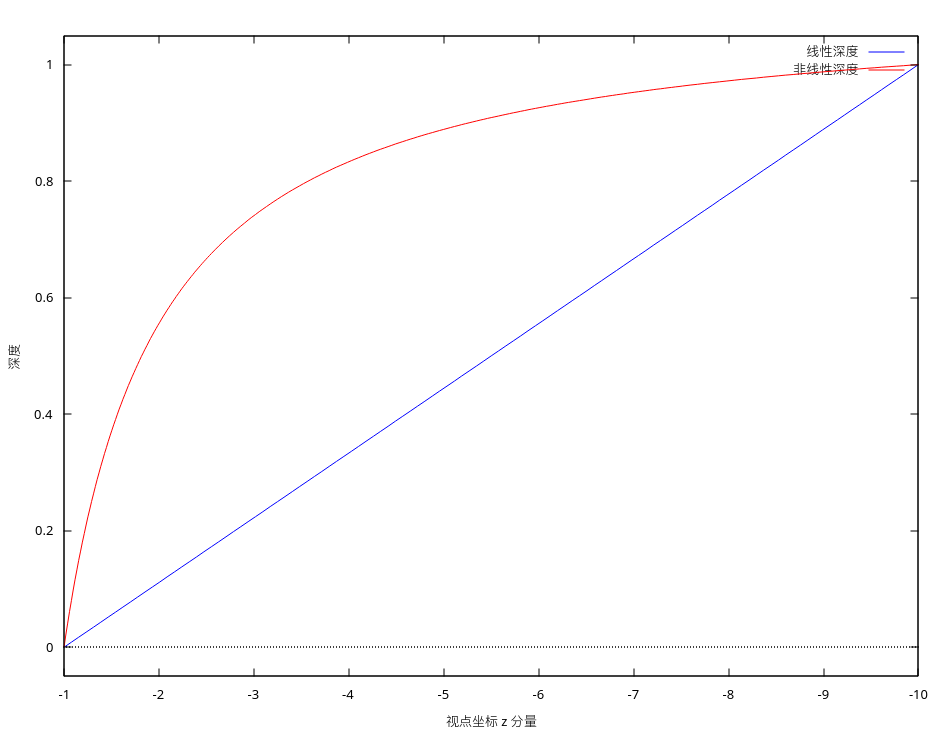
图片由
Maxima生成:linearDepth(z, n, f) := (-z - n) / (f - n); nonLinearDepth(z, n, f) := (-1/z - 1/n) / (1/f - 1/n); plot2d([linearDepth(-z, 1, 10), nonLinearDepth(-z, 1, 10)], [z, 1, 10], [xlabel, "视点坐标 z 分量"], [ylabel, "深度"], /* [xtics, 1, 1, 10], */ [gnuplot_preamble, " set xtics 1,1,10 set format x '-%g' set tmargin 0 set bmargin 0 "], [legend, "线性深度", "非线性深度"] );
假设有两个深度 \(a\) 和 \(b\), \(b\) 是贴图中的深度, \(a\) 是沿着反射方向移动时当前位置 \(P\) 的深度,
由于精度原因, 是不可能因为 \(b = a\) 就断定 \(P\) 就是反射光线与场景的交点, 一般是 \(b \le a\) 才能断言.
在物体与相机的距离较小时, 比如图像 \(z \in [-1, -4]\) 时, 非线性深度的变化范围为 \([0, \frac{5}{6}]\),
非线性深度的变化要比线性深度的变化要大, 如果 \(a\) 和 \(b\) 都在这个范围内, 容易得出它们之间的大小关系,
那么应该采用非线性深度; 在物体与相机的距离较大, 比如图像中 \(z \in [-9, -10]\) 时,
非线性深度的变化范围为 \([\frac{80}{81}, 1]\), 如果 \(a\) 和 \(b\) 在这个范围内, 就不太容易正确地得出大小关系, 这个时候应该采取线性深度.
如果采用线性深度进行比较, 最好使用视点坐标的 \(z\) 分量进行比较, 相比于比较在 \([0, 1]\) 之间的深度,
比较在 \([-10, -1]\) 之间的深度更容易得出正确的大小关系. 因此结论是: 最好选择线性深度, 且以视点坐标的 \(z\) 分量作为深度.
对微积分有一定基础的读者可以通过深度 \(d\) 与视点坐标 \(z\) 分量关系式的导数进行了解.
\(d\) 与 \(z\) 的关系: \(d(z) = \frac{f}{f - n} + \frac{1}{z} \frac{n}{f - n}\), \(\begin{cases} C = \frac{f}{f - n} \\ K = \frac{n}{f - n} \end{cases} \rightarrow d(-z) = \frac{K}{z} + C\).
\(d\) 关于 \(z\) 的导数: \(d^{'}(z) = \frac{-K}{(z)^2}\);
\(d\) 的变化: \(\Delta d \approx |d^{'}(z)| \Delta z\).
\(z_{e}\) 的变化: \(\Delta z \approx \frac{\Delta d}{|d^{'}(z)|} = \frac{\Delta d \cdot (z)^{2}}{K}\).
可以发现 \(z\) 越大, \(\Delta d\) 越小.
容忍误差比较法
为了对抗精度问题, 还可以使用容忍误差比较法对比浮点数, 具体有三种比较法.
// 绝对误差容忍: 当两个浮点数之差在一个指定范围内, 则被认为两者相等 bool absoluteTolerance(float a, float b, float epsilon) { return abs(a - b) < epsilon; } /* 绝对误差有一个问题: 不同量级的差别大小 abs(a - b) 需要不同的容错大小 epsilon. 比如说 100 元和 100 元零 1 分钱相比, 1 分钱相对于 100 元来说可以忽略不计, 所以可以认为这两个金额是一样的. 当 500 千万亿元和 500 千亿万零一万元相比, 一万元与 500 千万亿元来说可以忽略不计, 所以这两个金额可以认为是一样的, 哪怕是一百万在庞大的金额面前也是可以忽略不计的. 相对容差容错就是为了解决这个问题而生的. */ // 相对误差容忍: 基于两个浮点数的规模来动态决定容错范围 bool relativeTolerance(float a, float b, float epsilon) { float scale = max(max(abs(a), abs(b)), 1.); // 避免 a 和 b 中有一个值为 0 return absoluteTolerance(a, b, epsilon * scale); // epsilon 应为量级规模较小的浮点数的误差 } /* 绝对误差容忍相比相对误差容错更适合于那些零值或接近零值的比较, 对于通用计算适合使用两者的组合, 只要满足其中一个比较法即可, 在实现过程中可以先使用绝对误差容忍比较, 如果比较结果为两者不相等, 那么再采取相对误差容忍比较. */ bool combineTolerance(float a, float b, float absEpsilon, float relEpsilon) { if (absoluteTolerance(a, b, absEpsilon)) { return true; } return relativeTolerance(a, b, relEpsilon); }
查找交点的情况比较适合使用相对误差容忍进行深度比较, 假设 \(\epsilon\) 是作为深度差的容错范围,
那么可以配合关系 \(\Delta d = |d^{'}(z)| \Delta z\) 动态调整容错 \(\epsilon\),
\(\epsilon\) 需要与 \(z^2\) 或至少与 \(z\) 成正比, 比如: \(0 \le d - z \le z^2 \times \epsilon\).
4.5.4. 生成焦散贴图
焦散贴图是给水底的物体使用的, 同时还兼具阴影贴图的功能,
焦散贴图的像素格式为: \((causticsIntensity, 0.0, 0.0, depth)\),
其中 \(causticsIntensity\) 是焦散强度, \(depth\) 是光源深度, 它们都大于 0,
在生成焦散贴图前, 别忘记了需要光源相机生成的水底深度贴图, 这一步需要 单独 为水底物体进行渲染,
生成水底的深度贴图所使用的 shader 如下,
Vertex Shader:
uniform mat4 modelMatrix; uniform mat4 viewMatrix; // 光源相机的视点变换 uniform mat4 projectionMatrix; // 光源相机的投影矩阵 varying vec4 vPosWorld; varying float vDepth; void main() { vPosWorld = modelMatrix * vec4(position, 1.); vec4 posClip = projectionMatrix * viewMatrix * vPosWorld; // vDepth = posClip.z / posClip.w * 0.5 + 0.5; vDepth = posClip.z; gl_Position = posClip; }
Fragment Shader
varying vec4 vWorldPos; varying float vDepth; void main() { gl_FragColor = vec4(vWorldPos.xyz, vDepth); }
该计算模块位于:
src/HeightfieldWaterSimulation/GPUComputation/EnvMapShadowMapping/index.ts
在准备好阴影贴图后便可以着手于焦散贴图的生成, 正如前面所说的, 焦散贴图携带着焦散强度以及光源深度的信息.
与计算高度贴图时使用专属相机的情况不同, 计算焦散贴图可直接用光源自带的相机进行渲染,
但需要注意一点: 保证计算用的平面大小与光源相机的远裁剪平面的尺寸保持一致.
因为光源对于场景来说是公用的, 一般来说不会单独为了某个渲染而修改视锥体,
从而影响其它渲染, 所以只能调整计算用平面的尺寸, 使其能正好被相机的远裁剪平面覆盖.
生成焦散贴图所使用的 shader 如下,
Vertex Shader:
attribute vec3 position; uniform mat4 viewMatrix; uniform mat4 projectionMatrix; uniform sampler2D tHeightfield; // 水面高度场 uniform sampler2D tEnvShadowMap; // 水底深度贴图 uniform vec3 uLightDir; // 光线在世界坐标上的方向 uniform mat4 uWaterModelMatrix; // 水面的模型变换矩阵 uniform vec2 uResolution; // 水底深度贴图 tEnvShadowMap 的解析度 varying vec3 vOrigin; // 折射光的起点 varying vec3 vHitPoint; // 折射光与水底场景的交点 varying float vOriginDepth; // 折射光的起点的深度 varying float vHitPointDepth; // 交点的深度 #define AIR_IOR 1.0 #define WATER_IOR 1.325 #define MAX_ITERATIONS 50 void main () { vec4 info = texture2D(tHeightfield, uv); vec3 waterPos = vec3(position.xy, position.z + info.r); vec3 waterNorm = vec3(info.ba, sqrt(1.0 - dot(info.ba, info.ba))); vec3 waterPosWorld = (uWaterModelMatrix * vec4(waterPos, 1.)).xyz; vec3 waterNormWorld = (uWaterModelMatrix * vec4(waterNorm, 0.)).xyz; // projectionMatrix 和 viewMatrix 是光源相机的矩阵 mat4 VP = projectionMatrix * viewMatrix; vOrigin = waterPosWorld; vec4 waterPosClip = VP * vec4(waterPosWorld, 1.0); vOriginDepth = waterPosClip.z / waterPosClip.w * 0.5 + 0.5; // 光与水面交点的 NDC 深度 float eta = AIR_IOR / WATER_IOR; vec3 refractedDirWorld = normalize(refract(uLightDir, waterNormWorld, eta)); vec4 refractedClip = VP * vec4(refractedDirWorld, 0.0); vec3 refractedNDC = refractedClip.xyz; vec3 refractedUVW = refractedNDC * 0.5; vec2 refractedScreen = refractedUVW.xy * uResolution; vec2 dFrag = refractedScreen / max(abs(refractedScreen.x), abs(refractedScreen.y)); float dW = length(dFrag) / length(refractedScreen) * refractedUVW.z; // tEnvShadowMap 以裁剪坐标的 z 分量作为深度, 所以要把 NDC 中的深度变化还原到裁剪空间上 vec3 delta = vec3(dFrag, dW * 2.0); vec2 currentPos = (waterPosClip.xy * 0.5 + 0.5) * uResolution; float currentDepth = waterPosClip.z; vec2 deltaDirection = delta.xy; float deltaDepth = delta.z; for (int i = 0; i < MAX_ITERATIONS; i++) { vec2 uv = currentPos.xy / uResolution; vec4 smInfo = texture2D(tEnvShadowMap, uv); vHitPoint = smInfo.xyz; /* 在一些场景布局中, 当 i = 0 时, currentPos = (waterPosClip.xy * 0.5 + 0.5) * uResolution, 这时候使用 smInfo.w <= currentDepth 进行深度判断容易出现自相交的情况, 因此尽量使用 smInfo.w < currentDepth 进行深度判断 */ if (smInfo.w < currentDepth) { break; } currentPos += deltaDirection; currentDepth += deltaDepth; } vec4 hitPointClip = VP * vec4(vHitPoint, 1.); vHitPointDepth = hitPointClip.z / hitPointClip.w * 0.5 + 0.5; // 折射光与水底交点的 NDC 深度 gl_Position = hitPointClip; }
Fragment Shader:
varying vec3 vOrigin; varying vec3 vHitPoint; varying float vOriginDepth; varying float vHitPointDepth; void main() { float causticsIntensity = 0.; float causticsFactor = 0.15; if (vHitPointDepth >= vOriginDepth) { float oldArea = length(dFdx(vOrigin)) * length(dFdy(vOrigin)); float newArea = length(dFdx(vHitPoint)) * length(dFdy(vHitPoint)); float ratio; if (newArea == 0.) { ratio = 2.0e+20; } else { ratio = oldArea / newArea; } causticsIntensity = causticsFactor * ratio; } gl_FragColor = vec4(causticsIntensity, 0.0, 0.0, vHitPointDepth); }
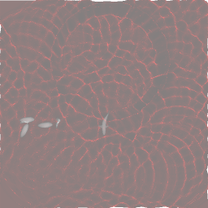
Figure 10: 生成的焦散贴图
该计算模块位于:
src/HeightfieldWaterSimulation/GPUComputation/Caustics/index.ts
如果要实现动态根据投影类型适配求交点的算法, 可以在不引入而外变量的情况下用如下方法进行适配:
uniform mat4 projectionMatrix; if (0. == projectionMatrix[2][3]) { // 正交投影矩阵的第三列第四行的元素是 0, 以正交投影的情况求交点 } else { // 透视投影矩阵的第三列第四行的元素为非 0, 以透视投影的情况求交点 }
4.6. 为水底的场景编写 shader
水底物体的 shader 还是比较简单的, 主要是渲染焦散纹理,
这里根据物体法线和折射光的点积来决定物体受到的焦散强度, 为此还需要生成一个折射光贴图,
生成折射光贴图所使用的 shader 如下,
Vertex Shader:
attribute vec3 position; uniform mat4 viewMatrix; uniform mat4 projectionMatrix; uniform sampler2D tHeightfield; uniform vec3 uLightDir; // 光线在世界坐标上的方向 uniform mat4 uWaterModelMatrix; // 水面的模型变换矩阵 varying vec3 vRefracted; #define AIR_IOR 1.0 #define WATER_IOR 1.325 void main () { vec4 info = texture2D(tHeightfield, uv); vec3 waterPos = vec3(position.xy, position.z + info.r); vec3 waterNorm = vec3(info.ba, sqrt(1.0 - dot(info.ba, info.ba))); // projectionMatrix 和 viewMatrix 是光源相机的矩阵 mat4 VP = projectionMatrix * viewMatrix; vec4 waterPosWorld = uWaterModelMatrix * vec4(waterPos, 1.); vec4 waterNormWorld = uWaterModelMatrix * vec4(waterNorm, 0.); float eta = AIR_IOR / WATER_IOR; vec3 refractedDirWorld = normalize(refract(uLightDir, waterNormWorld.xyz, eta)); vRefracted = refractedDirWorld; /* 这里需要提一下, 最初是使用 gl_Position = VP * waterPosWorld; 但是发现模型 *貌似* 与水面模型发生深度冲突, 使得贴图只有一半有内容, 为了避免这个为问题才重新计算顶点信息, 其中的 vec4(position - vec3(0., 0., 0.001) 也是为了避免水面平静时发生的深度冲突. (PS: 渲染没加入场景的模型也会发生深度冲突吗? 不太明白) */ gl_Position = VP * uWaterModelMatrix * vec4(position - vec3(0., 0., 0.001), 1.); }
Fragment Shader:
varying vec3 vRefracted; void main() { gl_FragColor = vec4(vRefracted * 0.5 + 0.5, 1.); }
该计算模块位于:
src/HeightfieldWaterSimulation/GPUComputation/RefractedLight/index.ts
水底物体的 shader 如下,
Vertex Shader:
attribute vec3 normal; attribute vec3 position; uniform mat4 modelMatrix; uniform mat4 modelViewMatrix; uniform mat4 projectionMatrix; uniform mat4 uLightProjectionMatrix; // 光源相机的正交投影矩阵 uniform mat4 uLightViewMatrix; // 光源相机的视点变换矩阵 uniform sampler2D tRefractedLight; // 折射光贴图 varying vec3 vPosInLightNDC; varying float vLightDiffuse; void main () { vec3 normalWorld = normalize((modelMatrix * vec4(normal, 0)).xyz); // 计算顶点在光源相机中的 NDC 坐标得出深度, 用在后续的阴影计算中 vec4 posInLightClip = uLightProjectionMatrix * uLightViewMatrix * modelMatrix * vec4(position, 1.); vPosInLightNDC = posInLightClip.xyz / posInLightClip.w; // 这里应该计算折射光与物体表面法线的点积 vec2 uvLight = vPosInLightNDC.xy * 0.5 + 0.5; vec3 refracted = texture2D(tRefractedLight, uvLight).xyz * 2. - 1.; vLightDiffuse = max(dot(normalize(-refracted), normalWorld), 0.); gl_Position = projectionMatrix * modelViewMatrix * vec4(position, 1.); }
Fragment Shader:
uniform sampler2D tCaustics; // 焦散贴图 uniform vec2 uResolution; // 焦散贴图的解析度 varying vec3 vPosInLightNDC; varying float vLightDiffuse; const vec3 underwaterColor = vec3(0.4, 0.9, 1.0); // 高斯模糊 float blur(sampler2D image, vec2 uv, vec2 resolution, vec2 direction) { float intensity = 0.; vec2 off1 = vec2(1.3846153846) * direction; vec2 off2 = vec2(3.2307692308) * direction; intensity += texture2D(image, uv).x * 0.2270270270; intensity += texture2D(image, uv + (off1 / resolution)).x * 0.3162162162; intensity += texture2D(image, uv - (off1 / resolution)).x * 0.3162162162; intensity += texture2D(image, uv + (off2 / resolution)).x * 0.0702702703; intensity += texture2D(image, uv - (off2 / resolution)).x * 0.0702702703; return intensity; } void main () { float computedLightIntensity = 0.5; float lightIntensity = 0.3; computedLightIntensity += lightIntensity * vLightDiffuse; vec2 uv = vPosInLightNDC.xy * 0.5 + 0.5; float depth = vPosInLightNDC.z * 0.5 + 0.5; vec4 info = texture2D(tCaustics, uv); float closestDepth = info.w; float bias = 0.01; // 只有未被遮蔽的情况下才应用焦散 if (closestDepth > depth - bias) { float causticsIntensity = 0.5 * ( blur(tCaustics, uv, uResolution, vec2(0., 0.5)) + blur(tCaustics, uv, uResolution, vec2(0.5, 0.)) ); computedLightIntensity += causticsIntensity * smoothstep(0., 1., vLightDiffuse); } gl_FragColor = vec4(underwaterColor * computedLightIntensity, 1.0); }
该材质位于:
src/HeightfieldWaterSimulation/materials/UnderWaterMaterial/index.ts
实际上应用到水底物体时焦散却出现了很严重的锯齿/颗粒感.
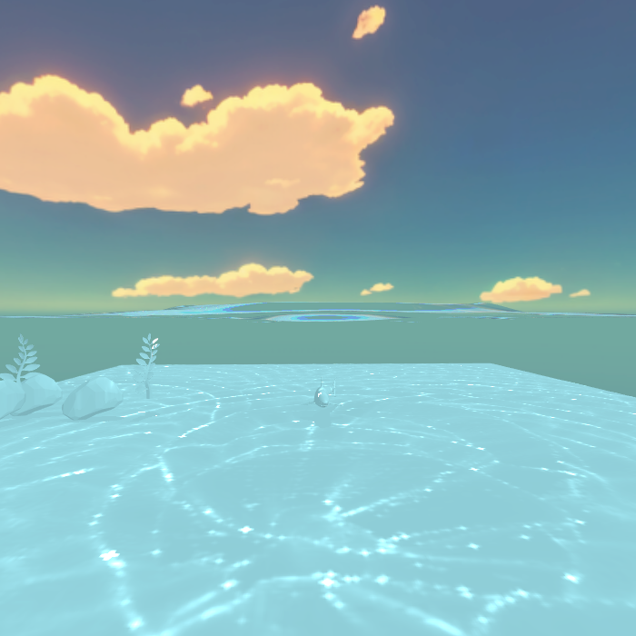
Figure 11: 颗粒感
我们可以通过减少位移向量 \(delta\) 的大小来减轻这个问题:
vec3 delta = vec3(dFrag, dW * 2.0) * 0.1;
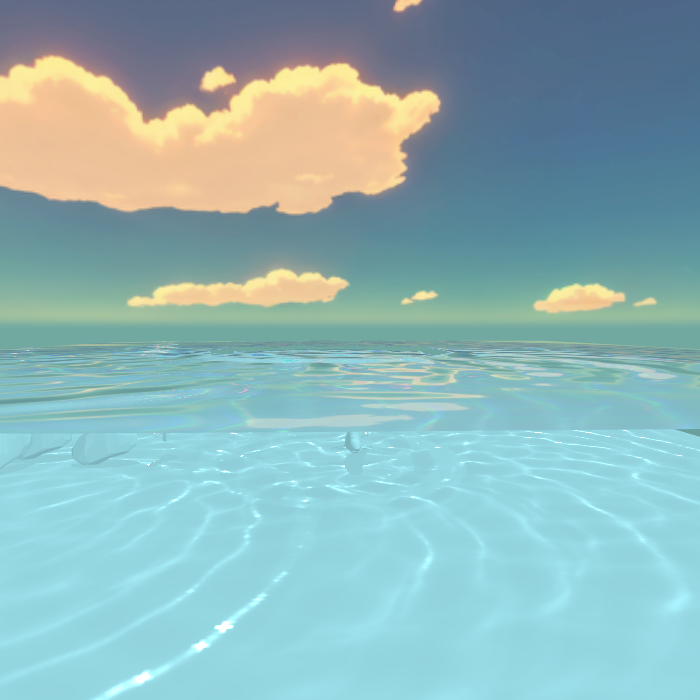
Figure 12: 通过减少像素遍历的位移减少锯齿感
需要注意的是, 减少位移大小会多次对焦散贴图的一个像素进行重复采样, 这会使得交点查找的效率下降, 同时使得焦散宽度变小.
在不考虑焦散准确度的情况下解决锯齿问题, 最好的解决办法是适当提高焦散贴图的解析度和适当减少位移向量的大小.
4.7. 项目总结
虽然是参考 Real-time rendering of water caustics by Martin Renou 的项目, 但本文在很多地方都做了调整,
主要是以下两点:
原项目的
shader是严重依赖于当前场景摆放, 没有考虑模型变换的情况.这也是为什么原项目的 issue 中会有人向作者提问如何正确地增加水面模型的大小.
本文已经把这个问题解决掉了.
原项目在计算折射光与场景的交点时, 在屏幕空间上的位移计算方式不太准确.
// This factor will scale the delta parameters so that we move from one pixel to the other in the env map float factor = deltaEnvTexture / length(refractedDirection.xy); // deltaEnvTexture 为正方形深度贴图尺寸的倒数, 比如 512x512 时, deltaEnvTexture = 1. / 512. // refractedDirection 是在裁剪空间上的折射光 vec2 deltaDirection = refractedDirection.xy * factor; float deltaDepth = refractedDirection.z * factor;
在调整了模型和深度贴图解析度的情况下, 可能 会使得生成焦散贴图的一些区域出现没有焦散的问题,
这其实就是在屏幕空间并没有逐个像素移动导致的, 而且作者并没有提供 \(factor\) 计算方式的推导.
选择这个项目作为开篇例子的主要是其中运用了很多后续会学习到的知识点, 并且涉及程度不深,
适用于熟悉感觉, 包括屏幕空间反射和屏幕空间折射, 其中水面的折射就 完整地 使用了屏幕空间折射的技术,
项目里头的屏幕空间反射技术实现倒是简单, 这种在屏幕空间上利用已渲染的场景信息创造复杂效果的技术还有很多,
这里简称屏幕空间技术;
项目里还使用了图像处理方面的技术, 使用了拉普拉斯核来模拟了水波纹和使用了高斯模糊核来柔化焦散贴图;
Ping-Pong 渲染技巧 也常常出现在后处理中.
其次, 这个项目完整地考核了读者对于渲染管线(rendering pipeline)的理解,
确保读者有能力完成后续的学习. 另外, 原项目还留有一些可优化的点, 它们都可以作为单独学习的知识点,
其中在水底中构建可视光路是非常重要的知识点, 人们把这项技术称为体积光照(Volumetric lighting), 又称圣光(God rays).
Figure 13: 水底下的体积光
经过个人测试后, 在生成焦散贴图时把
magFilter和minFilter设置成NearestFilter效果会更好.
5. 屏幕空间技术 (Screen Space Techniques, SST)
屏幕空间技术是一类基于已渲染的 2D 屏幕图像(像素缓冲区)合成出最终图像, 整个合成的过程发生在屏幕空间上.
整个合成过程不直接操作 3D 场景, 而是基于渲染得到的 2D 图像进行后处理.
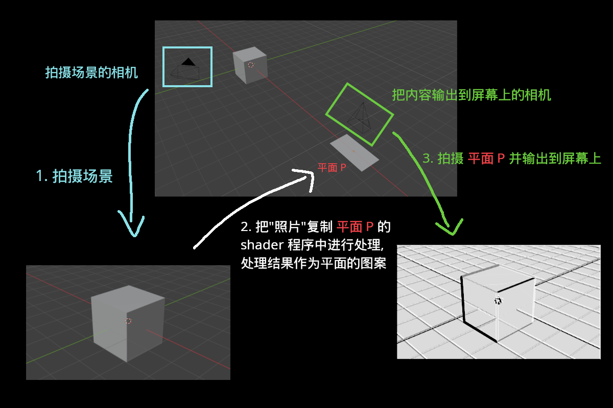
Figure 14: 后处理流程, 这里称"把内容输出到屏幕上的相机"为 后处理相机, 称"平面 \(P\)"为 后处理平面
在 2D 空间上完成后处理并不意味着无法读取到 3D 场景的几何信息,
在开始后处理之前, 使用对应的 shader 程序应用在场景物体上, 进行渲染并把渲染结果保存在不同贴图上,
这一类包含了场景几何信息的贴图或缓冲区被叫做 G-Buffer, 常见的 G-Buffer 如下:
- 法线贴图 (
normal texture): 包含场景的法线信息 - 深度贴图 (
depth texture): 包含场景的深度信息 - 颜色贴图/漫反射贴图 (
color/albedo/diffuse texture): 包含场景的基础色 - 顶点贴图/位置贴图 (
vertex/position texture): 包含场景的顶点信息 - 镜面反射贴图 (
specular texture): 包含场景的高光信息
还有一些开发者自定义的 G-Buffer, 比如 高度场水面模拟 - 为水底的场景编写 shader 中的折射光贴图.
生成 G-Buffer 的这个阶段被称为几何处理阶段(Geometry Pass).
从 OpenGL 2.0 / OpenGL ES 3.0 / WebGL 2.0 开始就支持多重渲染目标(MRT), 可以一次性生成多个 G-Buffer,
从而提高性能. 由于本文的一切 shader 程序是使用 GLSL 1.20 编写的, 并不支持 MRT , 因此 MRT 就不讨论了.
5.1. 从 G-Buffer 上正确地获取片元的几何信息
不同的 G-Buffer 可能由不同的相机渲染生成, 比如 tGBufferA 由相机 Camera A 渲染生成,
tGBufferB 使用相机 Camera B 渲染生成, 如此类推.
这里先定义一个概念: 一个顶点坐标在经过相机投影所得的 NDC 坐标被称为相机 UV.
相机 UV 是用来从相机生成的 G-Buffer 获取数据的,
一般 是哪个相机生成的 G-Buffer 就得用哪个相机的 UV 去获取数据.
而模型的几何数据通常也有一个名为 uv 的 attribute, 这里把这个 attribute 称为材质 UV.
通常在建模时模型都会配备一张贴图用于着色, 材质 UV 就是用来从这样贴图上获取数据用于着色,
这里把这个贴图称为 材质贴图, 材质 UV 与材质贴图之间的映射关系 通常 是在建模时就定好的.
换而言之, 一个顶点坐标可以同时有两类 UV 坐标, 这也导致 初学者很容易在编写 shader 时用错 UV 进行采样.
为了减少这种问题的发生, 应该养成采样前自检的习惯, 第一个问题:
贴图是否为材质贴图?
如果是, 那么就是用材质
UV采样; 否则, 进入下一个问题:贴图由哪个相机生成的?
找出对应相机, 并计算出对应的相机
UV坐标用于采样.
接下来演示一个例子.
比如想从 tGBufferA 上获取几何信息, 可以让 Camera A 生成保存了视点坐标的位置贴图 tPositionView,
Camera A 的投影矩阵为 projectionMatrixA, Camera O 为后处理相机,
我们可以用 Camera O 的相机 UV 从 tPositionView 中获取视点坐标 pView,
再根据 pView 和 projectionMatrixA 计算出 pView 在 Camera A 的相机 UV,
利用该相机 UV 从 tGBufferA 中获取数据:
// 合成最终图像的 fragment shader uniform vec2 uResolution; // 最终画面的分辨率 uniform mat4 projectionMatrixA; // Camera A 的投影矩阵 uniform sampler2D tGBufferA; // G-Buffer A uniform sampler2D tPositionView; // 保存了视点坐标的位置贴图, 由 Camera A 生成 vec2 ssUV = gl_FragCoord.xy / uResolution.xy; // 最终画面的 UV 坐标, 是材质 UV vec4 pView = texture2D(tPositionView, ssUV); /* 根据后处理流程, G-Buffer 本质上就是后处理平面的材质贴图, 因此, 即便 tPositionView 不是由 Camera O 生成的, 这里依然可以用后处理平面的材质 UV 进行采样 */ vec4 pClip = projectionMatrixA * pView; vec3 pNDC = pClip.xyz / pClip.w; vec3 pUVW = pNDC * 0.5 + 0.5; // 片元在 Camera A 的相机 UV vec4 pGinfo = texture2D(tGBufferA, pUVW.xy); // tGBufferA 是 Camera A 生成的, 所以得用它的相机 UV
可以看出不同相机生成的位置贴图 tPositionView 的重要性, 它能为同一个相机生成的不同 G-Buffer 提供相机 UV;
在屏幕空间技术中, 后处理相机的 UV 坐标可以说是一切的起点.
5.2. 延迟渲染 (Deferred Rendering / Deferred Shading)
只要能在后处理时能够获得片元的几何信息, 就可实现各种视觉效果, 比如光照计算, 阴影生成, 等等.
Michael Deering 在 1988 年的论文提出了一种在屏幕空间完成着色的技术, 该技术被称为延迟渲染, 是一种渲染流程.
图形引擎的传统渲染流程可以简单概括为以下伪代码:
const scene = [ /* meshes in scene */ ]; const lights = [ /* lights in scene */ ]; const camera; // 成像相机 function runShaderMaterial(fbo, mesh, camera, lights) { // 给 mesh 的材质提供光源 mesh.material.uniforms.lights.value = lights; // mesh 材质 shader 中光照计算的部分逻辑如下 /* uniform vec4 lights[8]; float intensity = 0.0; for (int i = 0; i < 8; i++) { intensity += calcIntensity(lights[i]); // calcIntensity 是计算物体受到的光照强度 } */ // ... // 把渲染结果写入 FrameBuffer 对象 fbo 中 } function render() { // 按照距离对物体进行排序 let sortedScene = sortByDistance(scene, camera); // 用于收集渲染结果的 FrameBuffer const fbo; for (let mesh of sortedScene) { if (isInFrustum(mesh, camera)) { // 检查物体是否在视椎体中 runShaderMaterial(fbo, mesh, camera, lights); // 渲染物体 } } // 后处理 applyPostProcessing(fbo); }
传统的渲染流程被称为向前渲染(Forward Rendering / Forward Shading),
可以发现向前渲染在有 \(m\) 个光源的情况下, 如果要渲染 \(n\) 个物体, 那么整个过程的算法复杂度为 \(O(m \cdot n)\).
这是一个严重的性能问题, 而延迟渲染可以把光照计算延迟到后处理中完成, 整个渲染流程就变成如下:
const scene = [ /* meshes in scene */ ]; const lights = [ /* lights in scene */ ]; const camera; // 成像相机 function runShaderMaterial(fbo, mesh, camera, lights=[]) { // 绘制物体, 但可以不进行光照计算, 并且生成和更新 G-Buffer // 在调用 runShaderMaterial 时如果不传入参数 lights, 那么就不会进行光照计算 } function lightingPass(fboLight, gBuffers, lights) { // 在后处理中完成光照计算, 并把结果输出到屏幕中 const fullScreenQuadMesh; // 覆盖屏幕的 3D 平面模型 const orthCamera; // 视锥体正好覆盖完 fullScreenQuadMesh 的正交相机 // 给 fullScreenQuadMesh 的材质提供 G-Buffer 和光源 for (let buf of gBuffers) { fullScreenQuadMesh.material.uniforms[buf.name].value = buf; } fullScreenQuadMesh.material.uniforms.lights.value = lights; // 提供最终图像的解析度 fullScreenQuadMesh.material.uniforms.resolution.value = [ 1920, 1080 ]; // fullScreenQuadMesh 材质的 fragment shader 逻辑大概如下 /* uniform vec4 lights[8]; uniform sampler2D tPosition; uniform sampler2D tDiffuse; uniform sampler2D tNormal; uniform vec2 resolution; vec2 uv = gl_FragCoord.xy / resolution.xy; vec4 position = texture2D(tPosition, uv); vec4 color = texture2D(tDiffuse, uv); vec3 normal = texture2D(tNormal, uv).xyz * 2.0 - 1.0; float intensity = 0.0; for (int i = 1; i < 8; i++) { intensity += calcIntensity(uv, position, normal, lights[i]); // calcIntensity 是计算片元受到的光照强度 } gl_FragColor = vec4(color.rgb * intensity, color.a); */ runShaderMaterial(fboLight, fullScreenQuadMesh, orthCamera); // 把渲染结果写入到 fboLight 中 } function render() { // 按照距离对物体进行排序 let sortedScene = sortByDistance(scene, camera); // 用于收集 G-Buffer 的 FrameBuffer 对象 const fboGBuffer; for (let mesh of sortedScene) { if (isInFrustum(mesh, camera)) { // 检查物体是否在视椎体中 runShaderMaterial(fboGBuffer, mesh, camera); // 渲染物体, 但不对这些物体进行光照计算 } } // 获取 G-Buffer const gBuffers = geometryPass(fboGBuffer); // 用于收集光照计算结果的 FrameBuffer 对象 const fboLight; // 计算光照, 并把最终图像输出到 fboLight 的附件上 lightingPass(fboLight, gBuffers, lights); // 后处理 applyPostProcessing(fboLight); }
被推迟的光照计算被称为光照处理阶段(Lighting Pass). 整个渲染的复杂度变为 \(O(m + n)\).
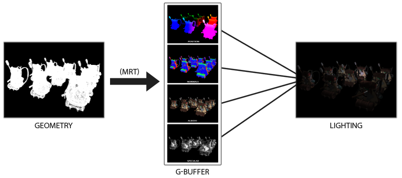
相比于抽象的算法复杂度, 延迟渲染减少的无效渲染要比人们想象的要多得多.
由于向前渲染每次都是完整地绘制整个物体, 因此每绘制一个物体都得进行一次光照计算,
又由于深度测试存在, 渲染引擎不可避免地要对不可见的像素进行光照计算;
延迟渲染则是在绘制物体时取消掉光照计算, 直接拿到经过深度测试后的几何信息,
再根据这些信息在屏幕空间上进行光照计算, 因此, 延迟渲染的光照计算成本大小取决于最终图像的分辨率.
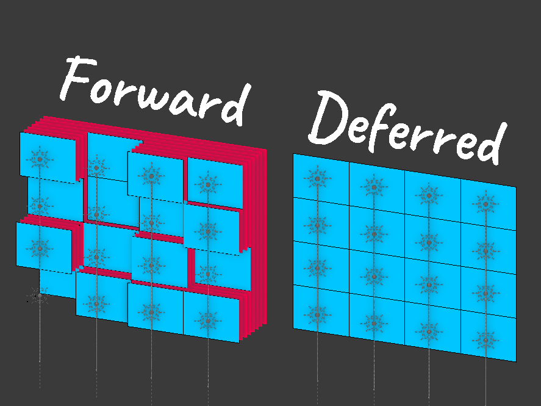
Figure 15: 向前渲染 VS 延迟渲染, 避免了对不可见的像素进行光照计算 (图片来源于 3D Game Shaders For Beginners)
目前大多数图形引擎的默认渲染流程是向前渲染, 对比两者可发现能够在不修改渲染流程的前提下,
在后处理阶段中实现延迟渲染:
- 把物体材质
shader中光照计算逻辑给去掉; - 把后处理的实现分开为几何处理阶段和光照处理阶段.
延迟渲染的高效使得它非常适用于渲染复杂场景, 因此开放世界的游戏一般会用它实现光影计算,
最典型的例子是《塞尔达传说 旷野之息》(The Legend of Zelda: Breath of the Wild), 具体可以看这一期视频,
对于开发者和玩家而言, 这游戏最神奇的地方在于一个大型开放世界的游戏可以良好的运行在一台性能羸弱的机器上.
在学术上, 延迟渲染并不属于屏幕空间技术, 它是一套渲染流程, 然而在后处理中实现一些效果的逻辑却和这个流程十分吻合:
需要若干 G-Buffer, 在屏幕空间上使用这些 G-Buffer 实现效果.
5.3. 延迟渲染的缺点
延迟渲染在带来效率的同时也带来了一些缺点.
比如把几何信息拆开储存到不同贴图上, 相比向前渲染需要更多的显存;
加上 G-Buffer 需要多次读写, 可能会导致显存带宽的瓶颈;
另外一个问题是对透明物体的渲染不友好, 因为在合成最终图像时, G-Buffer 所储存的是已经通过深度测试的片元的几何数据,
而透明物体背后的场景是可以被观察到的, 但透明物体背后的场景的片元却因未能通过深度测试被丢弃掉了.
以面的高度场水面为例, 在向前渲染中, 要实现透过水面看到水底, 得先获得水底在成像相机中的渲染结果;
但若按照延迟渲染的做法, 水底渲染结果和水面透视实现是同时发生在后处理阶段的,
而透明的实现又依赖于水底渲染结果, 但此时水底渲染结果却还没合成完毕, 这在逻辑上就已经行不通了.
正确的做法是让不透明物体和透明物体分开渲染:
以延迟渲染的方式渲染不透明的物体, 获得透明物体背后场景的渲染结果;
再对渲染透明的物体进行向前渲染, 获得透明物体的渲染结果;
最后把两次渲染结果进行混合得到最终图像.
在渲染透明物体是要注意深度检测问题, 否则最终图像就只是第二次渲染结果直接盖在第一次的渲染结果上.
function alphaBlending(dstFBO, srcFBO) { /* 对 dstFBO 和 srcFBO 两个 FrameBuffer 对象的渲染结果进行alpha混合: dst = src * alpha + dst * (1 - alpha); 并把混合结果写入到 dstFBO 上 */ } // 用于收集不透明物体渲染结果的 FrameBuffer 对象 const fboOpaque; const fboTransparency; const fboLight; // 从场景中获取所有不透明物体 const opaqueObjs = getOpaqueObjs(scene); // 从场景中获取所有透明的物体, 并按照深度从大到小进行排序 const transparencyObjs = getTransparencyObjsInZOrder(scene); // 1. Geometry Pass for (let mesh of opaqueObjs) { runShaderMaterial(fboOpaque, mesh, camera); } // 获取 G-Buffer const gBuffersForOpaque = geometryPass(fboOpaque); // 2. Lighting Pass, 把最终图像输出到 fboLight 的附件上 lightingPass(fboLight, gBuffersForOpaque, lights); // 3. TranslucentPass, 对透明物体使用向前渲染 /* 把 fboOpaque 的深度缓冲复制到 fboTransparency 上, 以保证接下来的透明物体渲染能正确完成深度测试 */ copyDepthBufferTo(fboOpaque, fboTransparency); /* 禁止 fboTransparency 的深度缓冲写入, 因为透明物体之间之可以相互可见的, 透明物体之间无需做深度测试, 只需做 alpha 混合. 透明物体与不透明物体之间才做深度测试. */ disableDepthWrite(fboTransparency); // 按照深度从大到小的顺序对透明物体进行渲染, 后面的透明物体会作为其前面透明物体的背景物 for (let mesh of transparencyObjs) { runShaderMaterial(fboTransparency, mesh, camera, lights); // 把延迟渲染的结果 fboLight 和向前渲染 fboTransparency 的结果进行混合, 并写入 fboLight alphaBlending(fboLight, fboTransparency); } // 后处理 applyPostProcessing(fboLight);
6. 屏幕空间环境光遮蔽 (Screen Space Ambient Occlusion, SSAO)
屏幕空间环境光遮蔽是屏幕空间技术的一种, 由 Crytek 开发的渲染技术, 于 2007 年首次应用在游戏 Cyrsis 中.
用于估算场景中物体表面因遮挡形成的阴影区域, 或者说模拟物体缝隙处的阴影.
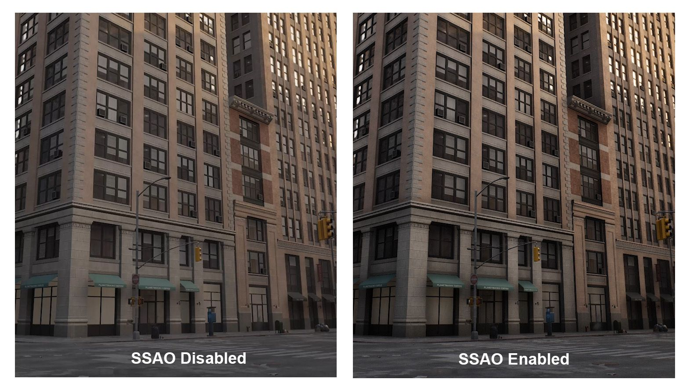
Figure 16: 禁用 SSAO VS 启用 SSAO, 启用的一方的缝隙处阴影更加明显 (图片来源)
SSAO的实现方式有很多, 每种实现方式在思路上整体是差不多的.本文主要以
three.js的实现作为参考, 以 John Chapman 的SSAO教程作为思路讲解,并以该思路对
three.js的实现进行简化, 其中three.js的SSAO实现可以阅读这几个源文件:
环境遮蔽阴影的实现需要视点空间(view space) 的顶点坐标和法线两者的 G-Buffer,
选择视点空间的几何数据有以下几点好处:
容易通过视点坐标获得深度
不论透视投影还是正交投影, 视点空间上的变换是线性的, 视点空间上的顶点坐标的 \(z\) 分量可以直接作为线性深度,
在知道视点空间顶点坐标 \(z\) 分量的情况下, 有需要的话也很容易就可以计算出深度, 不论是线性深度还是非线性深度.
- 视点坐标系是以相机位置 \(O\) 作为原点, 所以 \(P = \overrightarrow{OP} = P - O\), \(|P|\) 等于世界坐标系上顶点与相机之间的距离.
容易获得后续坐标系上的坐标
配合投影矩阵可以视点坐标变换到裁剪坐标, 从而也很容易获得裁剪坐标后可以
NDC坐标以及后续的UV坐标,而投影矩阵是非常容易获得的, 像
three.js的ShaderMaterial就内置了投影矩阵projectionMatrix.但从后续的坐标反推出前面空间的坐标就不一定容易,
WebGL 1.0的glsl不支持求逆矩阵的inverse函数,因此想从裁剪坐标反推到视点坐标, 需要先在
CPU端计算出投影矩阵的逆矩阵作为uniform变量,然后提供给
shader使用, 而且哪怕使用的是支持inverse的WebGL 2.0, 矩阵求逆也是有一定计算成本的.世界坐标系以及视点空间是大部分计算会用到的参考系, 比如光照计算和阴影生成就用到了它们其中之一,
同样也适用于计算出顶点被遮蔽的程度.
6.1. 把视点空间的顶点储存在贴图中
需要视点空间的顶点坐标系, 是因为要以视点空间的顶点坐标 \(z\) 分量作为线性深度.
生成顶点贴图的 Shader 如下,
attribute vec3 position; varying vec4 vPosInViewSpace; uniform mat4 modelMatrix; uniform mat4 viewMatrix; uniform mat4 projectionMatrix; void main() { vPosInViewSpace = viewMatrix * modelMatrix * vec4(position, 1.0); gl_Position = projectionMatrix * vPosInViewSpace; }
varying vec4 vPosInViewSpace; void main() { gl_FragColor = vPosInViewSpace; }
生成视点空间上顶点坐标的贴图, 用在后续的 tViewPosition.
6.2. 把视点空间的法线储存在贴图中
把视点空间的法线储存到贴图上, 用于后续构建出视点空间的 TBN 矩阵, 该矩阵可用于把切线空间的向量变换到视点空间中.
以下是生成法线贴图的 Shader 程序.
attribute vec2 uv; attribute vec3 normal; attribute vec3 tangent; attribute vec3 position; varying vec2 vUV; varying vec3 vNormal; varying vec3 vTangent; varying vec3 vBitangent; uniform mat4 modelMatrix; uniform mat4 viewMatrix; uniform mat4 projectionMatrix; void main() { vNormal = normalize((viewMatrix * modelMatrix * vec4(normal, 0.0)).xyz); vTangent = normalize((viewMatrix * modelMatrix * vec4(tangent, 0.0)).xyz); vBitangent = normalize(cross(vNormal, vTangent)); vUV = uv; gl_Position = projectionMatrix * viewMatrix * modelMatrix * vec4(position, 1.); }
如果所使用的图形库没有为用户计算
aTagent和aBitangent或其中一个, 那么就需要自行手动计算,计算方法可以参考 图形学 - OpenGL坐标变换: 法线贴图 里面的
TBN矩阵计算, 有提及到如何根据顶点计算出法线/切线以及副切线.
varying vec2 vUV; varying vec3 vNormal; varying vec3 vTangent; varying vec3 vBitangent; uniform int useNormalTex; uniform sampler2D tNormal; void main() { vec3 normal; if (useNormalTex == 1) { vec3 normalInTangentSpace = texture2D(tNormal, vUV) * 2.0 - 1.0; mat3 tbn = mat3(vTangent, vBitangent, vNormal); normal = normalize(tbn * normalInTangentSpace); } else { normal = normalize(vNormal); } gl_FragColor = vec4(normal * 0.5 + 0.5, 1.0); }
生成视点空间上法线的贴图, 用在后续的 tViewNormal.
6.3. 计算场景的环境光遮蔽程度并储存在贴图中
SSAO 的关键点在于如何判断一个片元是否被遮蔽, 以下是它的原理解释.
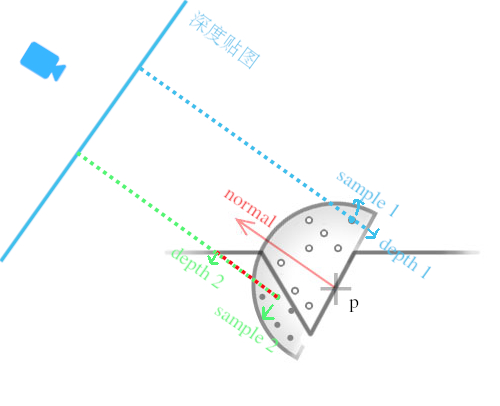
在视点空间上, 以当前片元 \(p\) 为原点构建出面向其法线 normal 的单位半球体, 在球体内进行随机采样,
得到一个采样点集合 \(S\). 这里以其中两个采样点 sample 1 和 sample 2 作为后续的研究例子.
首先在切线空间 (tangent space) 上进行采样, 把采样点变换到裁剪空间 (clip space) 上,
再从裁剪坐标变换到 NDC, 最后把 NDC 坐标变换到屏幕空间 (screen space) 上得到屏幕坐标.
根据屏幕坐标从顶点贴图 tViewPosition 获取实际成像的顶点坐标, 以该顶点的视点坐标 \(z\) 分量作为其深度值 depth.
实际编码中是根据
UV坐标从贴图上读取信息, 屏幕坐标和UV坐标就差一个线性变换.
比如, 根据采样点 sample 1 和 sample 2 的屏幕坐标从顶点贴图上获得深度 depth 1 以及深度 depth 2.
如图所示, 当深度值 depth 比其采样点 \(s \in S\) 的深度要小时, 那就说明采样点部分被遮蔽,
所以 sample 2 被遮蔽, sample 1 没有被遮蔽, \(p\) 被部分遮蔽.
那么如何计算 \(p\) 点的被遮蔽程度呢? 计算方法有很多种, 这里假设 \(p\) 点的被遮蔽程度的范围为 \([0, 1]\),
当采样点 \(s \in S\) 被遮蔽时, 以 \(o(r) = smoothstep(0.0, 1.0, \frac{r}{|z - \mathrm{depth}|})\) 作为 \(s\) 的被遮蔽程度,
其中 \(z\) 是采样点 \(s\) 的深度, \(\mathrm{depth}\) 是根据 \(s\) 在 tViewPosition 上获得的深度值, \(r\) 是半球体的半径.
以此方法计算出 \(S\) 中所有采样点的被遮蔽程度, 并以它们平均值作为 \(p\) 点的被遮蔽程度:
\(\frac{1}{n} \sum \limits_{i=0}^{n-1} o_{i}(r) = \frac{1}{n} \sum \limits_{i=0}^{n-1} smoothstep(0.0, 1.0, \frac{r}{|z_{i} - \mathrm{depth}_{i}|})\).
想要遮蔽效果准确, 需要采样点有足够多的数量和合适的分布, 当然采样点数量越多, 性能也越差.
如果采样点数量过少, 遮蔽效果的精确度会下降, 生成的 SSAO 贴图会出现带状条纹(banding)的效果,
成因是部分采样点过于靠近, 使得它们的遮蔽程度非常接近, 它们聚集在一起就形成了带状条纹.
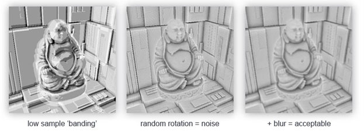
消除带状条纹效果也很简单, 让采样点的分散一点即可, 具体做法分两步:
第一步, 让 \(p\) 的采样点集合 \(S\) (\(s \in S\)) 围绕法线进行统一的旋转, 不同的采样点集合的旋转是不一样的,
比如 \(p_i\) 和 \(p_j\) 的采样点集合分别为 \(S_i\) 和 \(S_j\), 它们的旋转矩阵分别是 \(M_{i}\) 和 \(M_{j}\), 其中 \(i \ne j\).
这样确实会获得更好的效果, 但也会引入一些噪点图案(noise pattern), 解决方法就是对结果模糊, 弱化噪点效果;
第二步, 希望随着采样点索引的增加, 新增采样点与原点之间距离增加, 使得新采样点之间越分散, 最早的采样点在原点附近聚集.
如下图的关系:
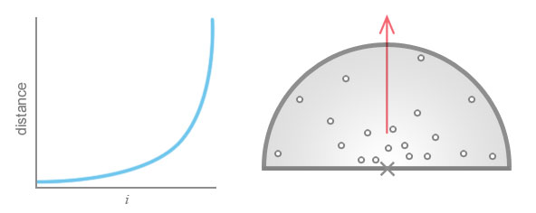
这个图的函数是 \(mix(0.1, 1.0, x) = 0.1 \times (1 - x) + x\), \(x = i^2 \in (0, 1]\),
其中 \(i\) 是采样点索引 \(I\) 与采样点数量 \(N\) 之比: \(\frac{I}{N} \in (0, 1]\).
因为采样点是 TBN 坐标, 所以只要能为不同 \(p\) 点生成随机的 TBN 矩阵就可以实现围绕法线进行统一的随机旋转.
最简单的做法就是根据 \(p\) 的信息生成一个随机变量 \(R\) 来作为校准前 TBN 坐标的 tangent 分量, 再根据 \(R\) 和 \(N\) 计算出 TBN 矩阵.
最终生成的实际是开放(openness)贴图, 而不是遮蔽(occlusion)贴图,
因为计算一个片元被遮蔽后的颜色是 \(c \times \mathrm{openness}\), 其中 \(c\) 是片元的颜色,
如果是遮蔽贴图, 那么就算方式变成 \(c \times (1.0 - \mathrm{occlusion})\), 生成开放贴图是为了方便后续运算.
整个遮蔽贴图是在屏幕空间中进行计算的, 和使用 GPU 进行计算类似, 需要一个平面以及正好完全覆盖平面的相机来完成计算,
这里可以简化一些, three.js 内置的 FullScreenQuad 类实例就能提供了 GPU 计算所需的一切,
开发者只要提供运算所用到的 shader 和调用实例的 render 方法即可完成 GPU 计算, 如下:
import * as THREE from 'three' import { FullScreenQuad } from 'three/examples/jsm/postprocessing/Pass.js' const yourShaderMaterial = new THREE.ShaderMaterial({ vertexShader: '/* your-vertex-shader */', fragmentShader: '/* your-fragment-shader */' }) const fsQuad = new FullScreenQuad(yourShaderMaterial) fsQuad.render(renderer) // renderer: THREE.WebGLRenderer
在计算 SSAO 之前还需要一个噪声贴图用来充当切线空间的随机旋转向量, 这个贴图不需要太高的解析度,
一般来说 \(4 \times 4\) 的大小即可, 因为最终目的是让这个贴图重复铺满整个屏幕, 根据屏幕空间的 UV 坐标进行取样.
以下是该贴图生成的方式:
function generateRandomKernelRotations() { const width = 4, height = 4 const size = width * height * 2 const data = new Float32Array( size ) for ( let i = 0; i < size; i ++ ) { const x = ( Math.random() * 2 ) - 1 const y = ( Math.random() * 2 ) - 1 data[ i ] = x data[ i + 1 ] = y // (x, y, z=0) 为围绕 z 轴旋转的向量, 因此向量的 z 分量固定为 0 } /* 使用贴图储存随机旋转向量, 由于旋转向量的 z 分量固定为 0, 因此贴图的每个像素只需要两个元素即可储存旋转向量 */ const noiseTexture = new THREE.DataTexture( data, width, height, THREE.RGFormat, THREE.FloatType) noiseTexture.wrapS = THREE.RepeatWrapping noiseTexture.wrapT = THREE.RepeatWrapping noiseTexture.needsUpdate = true return noiseTexture }
生成的贴图用在后续的 tNoise.
实际上也可以无需额外生成噪声贴图, 可以在 shader 中定义一个随机函数 getRandomVec,
该函数以屏幕空间的 UV 坐标作为输入, 以随机旋转向量作为输出:
vec2 chash22(vec2 p) { vec3 p3 = fract(vec3(p.xyx) * vec3(.1031, .1030, .0973)); p3 += dot(p3, p3.yzx+33.33); return fract((p3.xx+p3.yz)*p3.zy); } vec3 getRandomVec( vec2 p ) { vec2 noiseScale = uResolution / float(NUM_NOISE); vec2 r2 = chash22(p * noiseScale) * 2. - 1.; vec3 randomVec = vec3(r2, 0.); return normalize(randomVec); }
不过实际测试下来, 这种方法的运行效率比起直接使用贴图的要差一些.
最后是计算 SSAO 贴图, 其 shader 如下,
Fragment Shader:
#define NUM_SAMPLES 8 #define NUM_NOISE 4 varying vec2 vUV; uniform sampler2D tViewNormal; // 记录了视点空间法线的贴图 uniform sampler2D tViewPosition; // 记录了视点空间顶点的贴图 uniform sampler2D tNoise; // 噪声贴图 uniform mat4 uProjectionMatrix; // 用于生成法线/顶点贴图的相机的投影矩阵 uniform float uNear; // 近裁剪平面的深度 uniform float uFar; // 远裁剪平面的深度 uniform vec2 uResolution; // 噪声贴图的解析度 // 随机函数 // vec2 chash22(vec2 p) // { // vec3 p3 = fract(vec3(p.xyx) * vec3(.1031, .1030, .0973)); // p3 += dot(p3, p3.yzx+33.33); // return fract((p3.xx+p3.yz)*p3.zy); // } vec3 chash13(float p) { vec3 p3 = fract(p * vec3(.1031, .1030, .0973)); p3 += dot(p3, p3.yzx+33.33); return fract((p3.xxy+p3.yzz)*p3.zyx); } // 生成随机位移向量 v, 配合顶点 p 和半球半径计算出采样点 p + v * radius vec3 getSampleVec( float i ) { float scale = float(i) / float(NUM_SAMPLES); scale = mix(0.1, 1.0, scale * scale); vec3 r = chash13(i); r.x = r.x * 2.0 - 1.0; r.y = r.y * 2.0 - 1.0; return normalize(r) * scale; } // 生成随机向量 vec3 getRandomVec( vec2 p ) { /* // 不使用噪声贴图的方式 vec2 noiseScale = uResolution / float(NUM_NOISE); vec2 r2 = chash22(p * noiseScale) * 2. - 1.; vec3 randomVec = vec3(r2, 0.); return normalize(randomVec); */ vec2 noiseScale = uResolution / float(NUM_NOISE); vec3 randomVec = vec3(texture2D(tNoise, p * noiseScale).rg, 0.); return normalize(randomVec); } void main() { float radius = 0.6; // 后处理相机的的 UV vec2 uv = vUV; vec4 origin = texture2D(tViewPosition, uv); if (origin.w <= 0.0) { /* 找出背景片元(即并非根据顶点得到的片元), 不对背景做遮蔽处理. 在生成位置贴图时需要设置默认透明度通道为 0, 如果片元的透明度不为 0, 那么就说明片元上存在顶点信息, 否则片元就为背景片元. */ gl_FragColor = vec4(1.0); } else { vec3 normal = (texture2D(tViewNormal, uv) * 2. - 1.).xyz; // 切线空间的随机 tagent 向量 vec3 rvec = getRandomVec(uv); // 利用随机 tagent 向量构建出不同的 TBN 坐标系, 从而实现 TBN 坐标系围绕 z 轴随机旋转的效果 vec3 tangent = normalize(rvec - dot(rvec, normal) * normal); vec3 bitangent = cross(normal, tangent); mat3 tbn = mat3(tangent, bitangent, normal); float openness = 1.0; float avg = 1.0 / float(NUM_SAMPLES); for (int i = 0; i < NUM_SAMPLES; i++) { // 把切线空间上的采样变换到视点空间上 vec3 dir = tbn * getSampleVec(float(i) + 1.); // 计算视点空间上的采样点 vec3 samplePointView = origin.xyz + dir * radius; // 把视点空间上的采样点变换到裁剪空间上 vec4 samplePointClip = uProjectionMatrix * vec4(samplePointView, 1.); // 从裁剪空间变换到 NDC 坐标系上 vec3 samplePointNDC = samplePointClip.xyz / samplePointClip.w; // 从 NDC 坐标计算出 UV 坐标 vec2 samplePointUV = samplePointNDC.xy * .5 + .5; vec4 info = texture2D(tViewPosition, samplePointUV); /* Three.js 中的视点变换并没有对 z 轴进行翻转, z 轴正方向指向屏幕外, 但相机是看向屏幕内的, 所以用视点坐标的 z 分量作为深度需要对它乘以 -1 进行翻转. */ float closestDepth = -info.z; float samplePointDepth = -samplePointView.z; // 结合采样点与顶点之间的距离计算被遮蔽的程度 float rangeCheck = smoothstep(1., 0., length(info.xyz - origin.xyz) / radius); openness -= (closestDepth <= samplePointDepth ? 1.: 0.) * rangeCheck * avg; } gl_FragColor = vec4(vec3(openness), 1.); } }
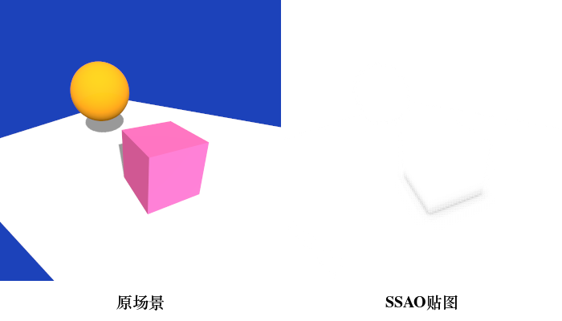
Figure 17: 根据场景生成缝隙处的阴影
开放贴图用在后续的 tSSAO.
6.4. 把 SSAO 贴图引用在场景上
SSAO 贴图的使用有两种方式:
一种是用在场景渲染中, 把遮蔽系数应用到光照计算中;
第二种是把遮蔽系数应用到上一帧的场景渲染的结果上, 对部分像素进行亮度控制.
这里采用第二种方法, 我们的目标是用后处理的方式实现环境遮蔽效果.
uniform sampler2D tDiffuse; // 场景的颜色贴图 uniform sampler2D tSSAO; // SSAO 贴图 uniform vec2 uResolution; // SSAO 贴图的解析度 varying vec2 vUV; void main() { vec2 uvDelta = 1.0 / uResolution; int blurSize = 5; int halfSize = blurSize / 2; float ssao = 0.0; float avg = 1. / float(blurSize * blurSize); // 盒状模糊 for (int row = -halfSize; row <= halfSize; row++) { float y = float(row); for (int col = -halfSize; col <= halfSize; col++) { float x = float(col); vec2 uv = vUV + vec2(x, y) * uvDelta; ssao += texture2D(tSSAO, uv).r; } } ssao *= avg; vec4 diffuse = texture2D(tDiffuse, vUV); gl_FragColor = vec4(diffuse.rgb * ssao, diffuse.a); }
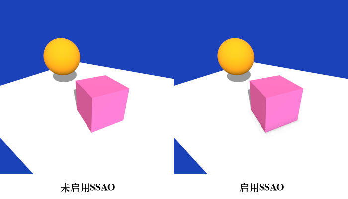
完整的 SSAO 实现逻辑位于:
7. 屏幕空间反射 (Screen Space Reflection, SSR)
高度场水面模拟中的反射的实现是根据反射光线的方向从立方体贴图中进行采样, 把采样结果作为水面的反射景象.
这种反射实现叫做立方体贴图反射(Cubemap reflection), 这种实现很简单, 但是例子中反射的场景不是动态的,
如果水面上有会运动的物体, 那么就需要为动态场景实时生成立方体贴图并从中采样, 立方体贴图有 6 张贴图构成,
由于入射光 \(I\) 和反射光 \(R\) 之间的夹角不会超过 \(180^{\circ}\), 因此用得上的贴图最多只有 2 张,
有 4 张贴图是完全无用的, 实际只从其中 1 张贴图进行采样, 最终有 5 张贴图用不上.
简而言之, 立方体贴图反射的实现代码很昂贵.
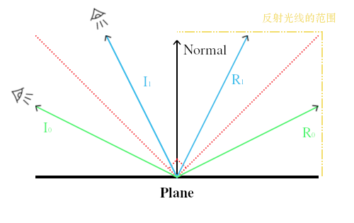
Figure 18: 虚线之间相互垂直, 反射光的活动范围为法线和平面之间
为此学习一种新技巧来解决资源浪费的问题, 就是接下来介绍的屏幕空间反射.
7.1. 整体实现思路
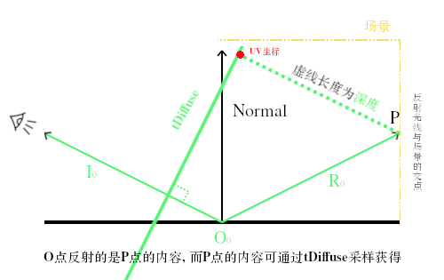
整体实现分为 4 步:
- 把相机当前看到的景象保存为颜色贴图
tDiffuse, 用于反射采样 - 找出 \(O\) 点上的反射光 \(R_0\) 与场景的交点 \(P\)
- 计算出交点 \(P\) 在相机中的
UV坐标, 并根据该UV坐标从tDiffuse获取反射信息 - 利用反射信息对 \(O\) 点进行着色, 从而实现反射
具体实现方式各有差异, 可以把计算出来的反射信息储存到贴图中,
之后可以选择在向前渲染完成着色实现反射, 也可以选择在后处理中完成反射.
整体看上去好像很简单, 但其中涉及非常多具体的细节, 特别是保护了很多 shader 以外的细节.
本人前期就是按照这个思路自己去实现, 但因为细节处理得不好导致最终效果不可用.
在一番对比后发生 three.js 的实现思路很直观, 并且 也是 逐个像素遍历的屏幕空间反射:
https://github.com/mrdoob/three.js/blob/dev/examples/jsm/postprocessing/SSRPass.js
https://github.com/mrdoob/three.js/blob/dev/examples/jsm/shaders/SSRShader.js
因此要理解接下来的内容, 请务必先理解 在光栅化渲染中使用 Ray Marching 逐个像素找出射线与场景的交点 的内容.
选择
three.js的实现作为参考还有因为它是参考 3D Game Shader For Beginners - Screen Space Reflection (SSR),这也是我最开始的参考, 并且在一些方面做出了非常好的处理.
7.2. 屏幕空间反射的缺陷
屏幕空间虽然有性能优势, 但反射效果有很明显的缺陷, 算是一种取舍吧.
7.2.1. 反射信息不足
屏幕空间反射只能反射当前相机可见的场景内容, 反射光线与场景的交点出现在相机视野外时无法被反射.
视野外的情况可以分为两类: 相机背后的场景, 反射光线与场景的交点在相机中的 UV 坐标超出场景采样的范围.
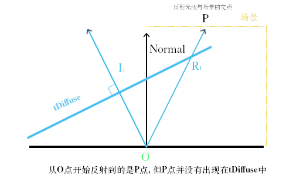
Figure 19: 入射射线 \(I_1\) 和法线之间的夹角小于 \(45^{\circ}\) 时应当反射相机背后的场景
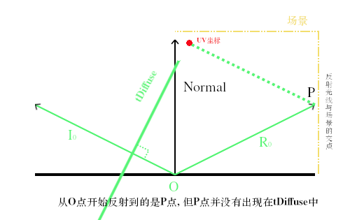
Figure 20: 反射光线 \(R_0\) 与场景的交点 \(P\) 在相机中的 UV 坐标超出场景采样的范围
在实现屏幕空间反射时需要考虑视野外的情况要如何处理, 在这之前需要了解如何识别两者:
第一种情况: \(P\) 点在相机后面, 根据渲染管线, 出现在视野中的顶点其视点坐标的 \(z\) 分量 \(z_e\) 是小于 0 的,
并且满足关系 \(n \le -z_e \le f\), 其中 \(n\) 和 \(f\) 分别是近裁剪平面和远裁剪平面到相机的距离,
所以只要 \(-z_e\) 超出 \([n, f]\) 这个范围就是第一种情况. 不过这种方法处理不了一种类似的变种问题:
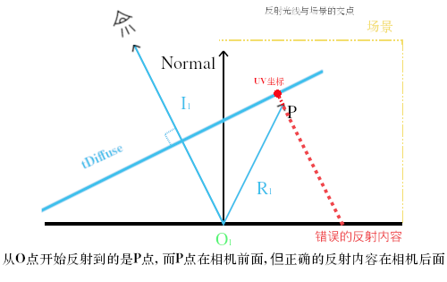
Figure 21: 反射光线 \(R_1\) 与场景的交点 \(P\) 在相机前, 但正确的反射内容在相机背后
可以现这两种情况都是入射射线 \(I\) 与反射射线 \(R\) 之间的夹角 \(\theta \in [0^{\circ}, 180^{\circ}]\) 在 \([0^{\circ}, 90^{\circ}]\) 内才出现的,
因此, 当 \(\theta \in [0^{\circ}, 90^{\circ}]\) 时, \(\cos \theta \ge 0\), 说明 \(R\) 是否往近裁剪平面方向移动.
第二种情况: \(P\) 点的 UV 坐标超出 \([0, 1]^2\) 的范围.
7.2.2. 交点误判
交点误判是屏幕空间算法本身的缺陷所造成的, 在某些情况下会得到一些错误的交点, 从而产生我们不想要的反射效果.
这里从其中一种情况开始作为出发点, 找出不同情况下交点误判的共同特点, 如下图.
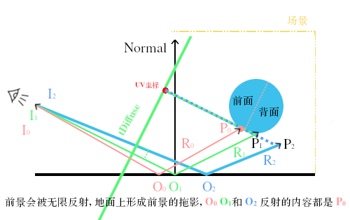
Figure 22: 球体的前景被无限反射, 从 \(O_0\) 开始地面上形成球体的拖影
因为我们的求交点算法是沿着反射光线 \(R\) 逐个像素移动的, 所以会出现图中情况的判断,
\(P_{1}\) 和 \(P_{2}\) 都是误判的交点, 首先 \(P_{1}\) 位于球体的背后,
其信息没有出现在 tDiffuse 中, 由于它与 \(P_{0}\) 的 UV 坐标一样, 所以反射 \(P_0\) 而并非 \(P_{1}\) 的内容;
其次 \(P_{2}\) 并没有真正地与任何物体相交, 同样, 它的 UV 坐标和 \(P_{0}\) 的一样, 所以反射 \(P_0\) 而并非 \(P_{1}\) 的内容.
第一点, 物体背面无法被反射无解的, 毕竟 tDiffuse 不可能有物体背后的信息.
第二点, 拖影问题只能通过某种判断来进行取消: 判断交点反射光线与场景的交点是否为误判结果, 如果是就取消反射.
假设 \(i \in \mathbb{Z^{+}}\), \(Q_i\) 是那些出现拖影的地方, 并且随着 \(i\) 的增大, \(Q_i\) 距离相机越远,
\(P_i\) 为从 \(O_i\) 开始沿着反射光线 \(R_i\) 出发所找到的场景交点. 这些出现拖影的地方都有一些共同特征:
\(P_0\) 是 \(Q_i\) 的反射内容, \(P_{0}\) 的深度 \((P_{0})_{depth}\) 要小于 \(P_{i}\) 的深度 \((P_{i})_{depth}\): \((P_{0})_{depth} - (P_{i})_{depth} \lt 0\),
并且随着 \(O_{i}\) 与相机距离的增加, \((P_{0})_{depth} - (P_{i})_{depth}\) 趋向无穷小.
因此, 解决拖影思路也很简单: 把 \((P_{0})_{depth} - (P_{i})_{depth}\) 限定在一个范围内才允许反射.
或者说, 只要 \(P_{0}\) 与反射光线 \(R_{i}\) 的距离在一定范围内 \(O_{i}\) 才能进行反射,
正好可以把这个范围设定为浮点数比较时的容错大小.
7.3. 实现中的具体细节
这里会对 three.js 的实现进行分析, 会与原本的实现有些许差别, 但重要部分还是会保留下来,
原本实现有一些地方不是很好, 这里保留下来了, 并且会着重提醒. 下图是本文的实现流程.
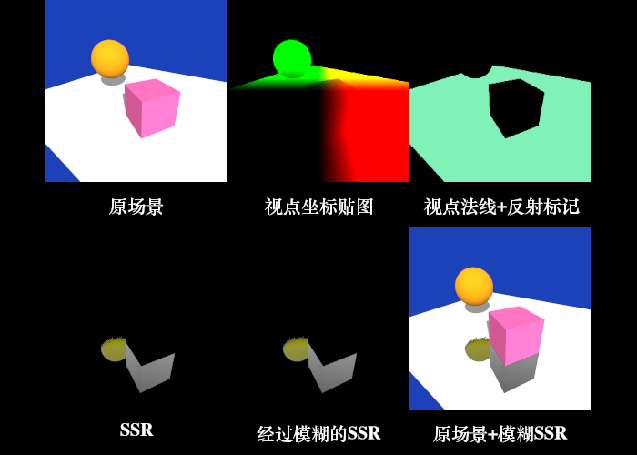
Figure 23: 屏幕空间反射 - 后处理实现流程
SSR 是接下来重点介绍的内容, 它的计算过程依赖 4 种几何数据:
- 颜色贴图
- 视点坐标
- 视点法线
- 反射标记
前面 3 种贴图在屏幕空间环境遮蔽中就有提到过, 这里就不赘述了.
反射标记是用来对可反射的片元进行标记, 用 1 标记可反射, 0 标记不可反射,
由于 RGBA 格式的法线贴图只用了 RGB 3 个通道储存法线, 因此可用空闲的 alpha 通道储存反射标记.
本文的示例项目只有白色平面可以进行反射, 以下是调整过的法线贴图生成程序:
Fragment Shader:
varying vec3 vNormal; uniform bool uIsMirror; void main() { vec3 normal = vNormal * 0.5 + 0.5; gl_FragColor = vec4(normal, uIsMirror ? 1.: 0.); }
其中 Uniform 变量 uIsMirror 是用来决定物体是否可以反射.
7.3.1. Three.js 的 SSR 计算流程
为了学习接下来的细节分析, 需要先了解 three.js 的整个屏幕空间反射(SSR)实现流程是怎么样的,
以下是其实现的伪代码以及说明.
float normalView; // 片元的法线 vec3 startPosView; // 反射光线的起点, 为视点坐标, 同时也是相机到顶点的方向 vec3 incidentView = normalize(startPosView); // 入射光线的方向 float reflectView = normalize(reflect(startPosView, normalView)); // 反射光线的方向 float maxReflectDistance = getMaxRefDist(-incidentView, normalView); // 计算反射光线的最大长度 vec3 endPosView = startPosView + maxReflectDistance * reflectView; // 反射光线最远能到达的终点, 为视点坐标 if (endPosView.z > -uNear) { // 如果 envPosView 超出近裁剪屏幕则进行裁剪, 把 endPosView 限定在视锥体内 endPosView = clip(endPosView); } vec2 startPosScreen = convertViewToScreen(startPosView); // 计算起点的屏幕空间坐标 vec2 endPosScreen = convertViewToScreen(endPosView); // 计算终点的屏幕空间坐标 // 计算起点与终点之间的切比雪夫距离 float stepCount = chebySchevDist(startPosScreen, endPosScreen); // 计算以反射光线在屏幕空间上移动一个像素时的位移向量 vec2 onePixelOffset = (endPosScreen - startPosScreen) / stepCount; for (float i = 0; i < stepCount; i++) { vec2 currentPosScreen = startPosScreen + onePixelOffset * i; vec2 currentPosUV = getUV(currentPosScreen); // 从深度贴图中获取采样点的视点坐标 z 分量 float samplingViewZ = getViewZFromDepthBuffer(currentPosUV); // 计算出反射光线当前位置的视点坐标 z 分量 float currentViewZ = getCurrentViewZ(i / stepCount, startPosView, endPosView); // 反射方向当前位置的深度大于采样点的深度 if (currentViewZ <= samplingViewZ) { // 计算出采样点的视点坐标 vec3 samplingPointView = getSamplingPointView(currentPosUV, samplingViewZ); // 计算出采样点与反射光线的距离 vec3 dist1 = distPointToLine(samplingPointView, startPosView, endPosView); // 计算出容错范围 float thickness = calcThickness(samplingPointView); // 如果采样点与反射光线的距离在容错范围内, 则认为是反射光线 *可能* 与场景相交, 这里把该交点称为嫌疑交点 bool hit = dist1 <= thickness; // 检验嫌疑交点的合法性 if (hit) { // 从法线贴图获取出采样点的法线 vec3 samplingNormalView = getSamplingNormalView(currentPosUV); // 保证反射光线是向着嫌疑交点所处表面射去, 而不是往近裁剪平面射去 if (dot(endPosView - startPosView, samplingNormalView) >= 0.0) continue; /* 这个判断可以规避掉 *自反射* 的情况: 嫌疑交点在"镜子"自身上. 在 i = 0 时 currentPosScreen = startPosScreen, 即反射光线的起点和第一个采样点是同一个位置, 因此, 在深度比较时 currentViewZ <= samplingViewZ 为 true, 当然容错比较也会通过, 所以导致出现自相交和自反射的问题. 这个是实现的设计问题了, 可以把 i 的初始值设置为 1. 来解决这个问题. 但不清楚是否有其它出现自反射出现的情况, 把这个判断留下来会保险一点. */ // 保证交点与反射平面的距离不超过最大距离, 超过了就认为找不到交点 float dist2 = pointToPlaneDistance(samplingPointView, startPosView, normalView); // uMaxDistance 为最大距离 if (dist > uMaxDistance) break; // 到这里基本上认为嫌疑交点是真交点 vec4 color = texture2D(tDiffuse, currentPosUV); float op = color.a; // 根据交点与反射平面的距离计算衰减系数 float auttenuationCoe = getAuttenuationCoe(dist2 / uMaxDistance); op *= autenuationCoe; // 计算菲涅耳系数 float fresnelCoe = getFresnelCoe(); op *= fresnelCoe; color.a = op; // 给反射点设置反射色 gl_FragColor = color; break; } } }
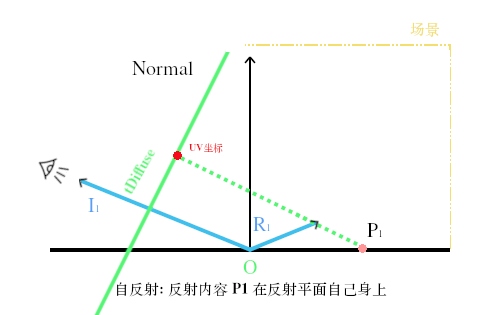
7.3.2. 反射光线的最大长度
为什么要计算 maxReflectDistance?
这是为了尽可能地保证能反射光线与场景相交, 应该选择一个适当的值作为反射光线的最大长度.
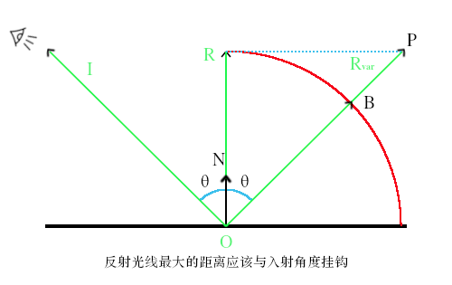
Figure 24: 计算最大反射距离 \(|R_{var}|\), 保证在最大距离时的位置 \(P\) 与反射平面的距离固定为 \(|R|\)
根据上图可以得知反射光线的最大长度不应该为固定值, 否则会出现:
在入射光线 \(I\) 垂直与 \(O\) 点的法线 \(N\) 时, 可见的反射内容为最多; 其它时候反射内容比较少.
图中 \(R_{var}\) 为最大长度可变的反射光线, \(R\) 为最大长度固定的反射光线, \(P\) 和 \(B\) 分别是它们所能到达的最远位置,
\(|R_{var}|\) 与入射角 \(\theta\) 有关: \(|R_{var}| = |R| \div \cos\theta\).
该关系可以保证点 \(P\) 与平面的距离始终保持在 \(|R|\), \(|R|\) 同时也是 \(|R_{var}|\) 最小值.
7.3.3. 对超出近裁剪平面的反射光线进行裁剪
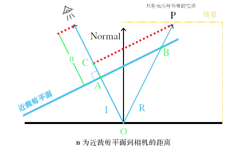
如上图所示, 把反射光线 \(\overrightarrow{OP}\) 裁剪为 \(\overrightarrow{OB}\), 把 \(B\) 作为反射光线最远能到达的位置 endPosView, 那么该如何求出 \(B\) 呢?
假设 \(I\) 和 \(R\) 是单位向量, \(I\) 是视线在近裁剪平面法线的投影方向, \(R\) 是反射光线的方向,
为了方便作图, 这里假设视线垂直于近裁剪平面, 使得 \(I\) 与视线共线.
实际上不管视线是否垂直于近裁剪平面, \(I\) 都是不变的,
也就是说视线是否垂直于近裁剪平面都不影响接下来的讨论.
可得到 \(\begin{cases} \overrightarrow{OB} = O + t \times R \\ |\overrightarrow{OB}| = t \times |R| \end{cases}\), 只要求出 \(t\) 就能求出 \(B\).
根据三角函数和相似三角形的关系可得出 \(\cos(\angle AOB) = \frac{|\overrightarrow{OA}|}{|\overrightarrow{OB}|} = \frac{|I| \times \cos(\angle AOB)}{|R|} = \frac{t \times |I| \times \cos(\angle AOB)}{t \times |R|}\).
根据几何关系, \(|I| \times \cos(\angle AOB)\) 是 \(R\) 在 \(I\) 上的投影长度, 正好等于 \(R\) 在视点空间上的 \(z\) 分量 \((R_{view})_z\);
\(|\overrightarrow{OA}|\) 等于点 \(O\) 与点 \(A\) 的视点坐标 \(z\) 分量差, 其中点 \(A\) 的视点坐标 \(z\) 分量为 \(-n\), 并且 \(n \gt 0\),
由于可被相机观察到的顶点坐标 \(z\) 分量都小于 0, 所以 \(O\) 的视点坐标 \(z\) 分量 \((O_{view})_z\) 也小于 0, 得到 \(|\overrightarrow{OA}| = -n - (O_{view})_z\);
最终 \(t = \frac{|\overrightarrow{OA}|}{|I| \times \cos(\angle AOB)} = \frac{-n - (O_{view})_{z}}{(R_{view})_{z}}\).
7.3.4. 动态计算容错 \(\epsilon\)
相比 three.js 所参考的实现而言, 动态计算交点容错 \(\epsilon\) 是 three.js 实现的一大亮点, 其实现思路如下:
在当前步进位置 \(P\) 的深度 \(z\) 大于采样深度 \(d\) 时,
计算出 \(P\) 对应的屏幕坐标 \(P_{screen}\) 的相邻屏幕坐标 \(Q_{screen} = P_{screen} + \left(1, 0\right)\),
结合 \(P\) 的深度 与 \(Q_{screen}\) 的纹理坐标 \(Q_{uv}\) 构建出 \(Q_{screen}\) 的视点坐标 \(Q_{view}\),
以同样的方式反推出 \(P\) 的视点坐标 \(P_{view}\), 使用两者的 \(x\) 分量差 \(D = (Q_{view})_x - (P_{view})_x\) 来定义最小容错 \(\epsilon_{min} = kD\),
其中 \(k\) 是常数, 且 \(D \gt 0\). 最终容错为 \(\epsilon = max(\epsilon_{min}, \epsilon_{candidate})\), 其中 \(\epsilon_{candidate}\) 为自定义容错.
这个思路本质上是计算 在视点空间的深度 \(z\) 中, 水平方向上一个像素的变化会在视点空间上产生距离变化 \(D\), 所以 \(k\) 表示像素数量.
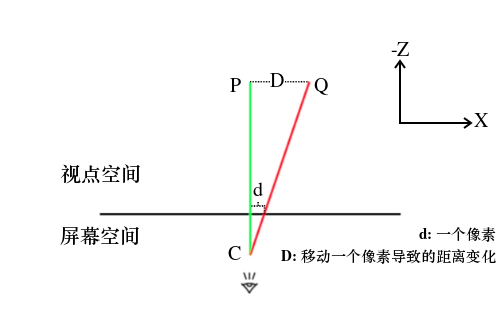
用 \(D\) 来定义 \(\epsilon\) 是因为在屏幕空间上最小的移动距离是一像素(屏幕空间上最小单位),
在视点空间的深度 \(z\) 中, 只要两个点之间的水平距离不超过 \(D\), 那么它们会投影在同一个像素上.
根据 透视投影的矩阵 可得出 \(D\) 与 \(d\) 的关系:
\(D = d \times z \times \frac{r - l}{n} \times \frac{1}{(uResolution)_{x}}\), 其中 \((uResolution)_{x}\) 是屏幕空间的宽度.
可以发现 \(D\) 与视点坐标分量 \(z\) 成正比关系, 这与 查找交点时提高浮点数比较时的容错率 提到的内容吻合.
7.3.5. SSR 完整代码
Fragment Shader:
uniform vec2 uResolution; uniform sampler2D tViewNormal; uniform sampler2D tViewPosition; uniform sampler2D tDiffuse; uniform mat4 uProjectionMatrix; uniform mat4 uInverseProjectionMatrix; uniform float uNear; uniform float uFar; uniform float uMaxDistance; // 可以反射的最大像素距离 uniform float uThickness; varying vec2 vUV; float pointToLineDistance(vec3 x0, vec3 x1, vec3 x2) { //x0: point, x1: linePointA, x2: linePointB // https://mathworld.wolfram.com/Point-LineDistance3-Dimensional.html return length(cross(x0 - x1, x0 - x2)) / length(x2 - x1); } float pointToPlaneDistance(vec3 point, vec3 planePoint, vec3 planeNormal){ // https://mathworld.wolfram.com/Point-PlaneDistance.html //// https://en.wikipedia.org/wiki/Plane_(geometry) //// http://paulbourke.net/geometry/pointlineplane/ float a = planeNormal.x, b = planeNormal.y, c = planeNormal.z; float x0 = point.x, y0 = point.y, z0 = point.z; float x = planePoint.x, y = planePoint.y, z = planePoint.z; float d = -(a * x + b * y + c * z); float dist = (a * x0 + b * y0 + c * z0 + d) / sqrt(a * a + b * b + c * c); return dist; } vec3 getViewPosition( vec2 uv, float viewZ ) { // https://blog.darksalt.me/docs/posts/2020/06/graphics-opengl-transformation.html#depth-buffer float iN = 1.0 / uNear, iF = 1.0 / uFar, iViewZ = 1.0 / viewZ; float depth = (-iViewZ - iN) / (iF - iN); float clipW = -viewZ; vec4 ndc = vec4( vec3( uv, depth ) * 2. - 1., 1.0 ); vec4 clip = ndc * clipW; return ( uInverseProjectionMatrix * clip ).xyz; } void main() { vec4 normalInfo = texture2D(tViewNormal, vUV); vec3 normalView = normalize(normalInfo.xyz * 2. - 1.); float mirrorFlag = normalInfo.w; vec4 positionInfo = texture2D(tViewPosition, vUV); vec3 startPosView = positionInfo.xyz; if (mirrorFlag < 1.0 || // 不能反射的片元 positionInfo.w <= 0.0 ) { // 背景片元 return; } vec3 incidentView = normalize(startPosView); // 入射光线 I 的方向 vec3 reflectView = normalize(reflect(incidentView, normalView)); // O 点的反射光线 R // 计算当前反射方向最大的长度 float maxReflectDistance = uMaxDistance / dot(-incidentView, normalView); // 计算位移向量, 移动一个单位像素 vec4 startPosClip = uProjectionMatrix * vec4(startPosView, 1.0); vec3 startPosNDC = startPosClip.xyz / startPosClip.w; vec2 startPosScreen = (startPosNDC.xy * 0.5 + 0.5) * uResolution; vec3 endPosView = startPosView + reflectView * maxReflectDistance; // 如果反射光线往近裁剪平面射去, 并且超出近裁剪平面, 那么就对射线进行截断 if (endPosView.z > -uNear) { float t = (-uNear - startPosView.z) / reflectView.z; endPosView = startPosView + reflectView * t; } vec4 endPosClip = uProjectionMatrix * vec4(endPosView, 1.); vec3 endPosNDC = endPosClip.xyz / endPosClip.w; vec2 endPosScreen = (endPosNDC.xy * 0.5 + 0.5) * uResolution; // 在屏幕空间上的位置差 vec2 offsetScreen = endPosScreen - startPosScreen; float maxComp = max(abs(offsetScreen.x), abs(offsetScreen.y)); vec2 dFrag = offsetScreen / maxComp; for (float i = 0.; i < maxComp; i++) { vec2 currentPosScreen = startPosScreen + i * dFrag; vec2 uv = currentPosScreen / uResolution; if (currentPosScreen.x < 0. || currentPosScreen.x > uResolution.x || currentPosScreen.y < 0. || currentPosScreen.y > uResolution.y) break; float t = i / maxComp; vec3 samplingPosView = texture2D(tViewPosition, uv).xyz; float currentPosViewZ = (startPosView.z * endPosView.z / mix(endPosView.z, startPosView.z, t)); // float s = dot(-incidentView, normalView); // float epsilon = 0.5 * s * samplingPosView.z * samplingPosView.z * uThickness; // float depthDiff = samplingPosView.z - currentPosViewZ; // 不知道为何这样会有性能问题 // if (depthDiff > 0. && depthDiff < epsilon) { if (currentPosViewZ <= samplingPosView.z) { bool hit; float distSampPosLine = pointToLineDistance(samplingPosView, startPosView, endPosView); vec2 neighborPosScreen = currentPosScreen + vec2(1., 0.); vec2 neighborUV = neighborPosScreen / uResolution; vec3 neighborView = getViewPosition(neighborUV, samplingPosView.z); float minThickness = (neighborView.x - samplingPosView.x) * 3.; float tk = max(uThickness, minThickness); hit = distSampPosLine <= tk; // 这种判断方法容易出现自反射的情况: 交点在镜子自身上 if (hit) { vec3 samplingNormalView = normalize(texture2D(tViewNormal, uv).xyz * 2. - 1.); // 保证反射光线 reflectView 是向着场景的交点 samplingPosView 所处的表面射去, 而不是往近裁剪平面射去 // 以及避免自反射, 自反射的出现通常在 i = 0. 时 // 因为当前位置的屏幕空间坐标计算为 vec2 currentPosScreen = startPosScreen + i * dFrag; // 这个时候 currentPosScreen 和 startPosScreen 是一样的 // 通常反射光线的起点和第一个采样点是同一个位置, 大概率发生自相交的情况 if (dot(reflectView, samplingNormalView) >= 0.) continue; // 保证交点与反射平面的距离不超过最大距离 float dist = pointToPlaneDistance(samplingPosView, startPosView, normalView); if (dist > uMaxDistance) break; float opacity = 0.5; float op = opacity; float ratio = 1. - (dist / uMaxDistance); float attenuation = ratio * ratio; op = opacity * attenuation; float fresnelCoe = (dot(incidentView, reflectView) + 1.) * 0.5; op *= fresnelCoe; vec4 color = texture2D(tDiffuse, uv); color.a = op; gl_FragColor = color; break; } } } }
7.3.6. Three.js 的 SSR 所使用的模糊算法
在生成 SSR 的过程中, 很容易出现反射影像存在空隙的情况, 如下图所示.
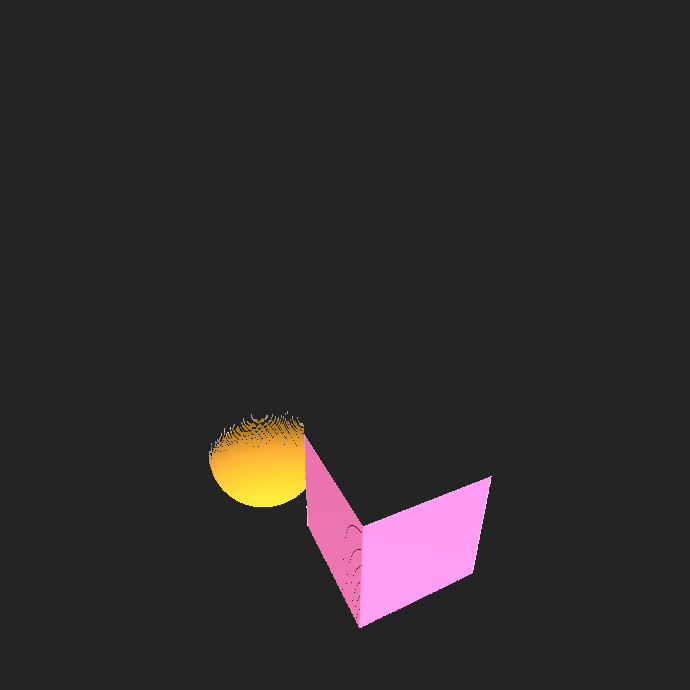
Figure 25: 厚度过小导致 SSR 间隙的出现
存在空隙是因为厚度 tk 过小导致反射光线与场景的相交判定没有通过,
即便知道厚度自适应的方法, 也很难精确得到一个合适厚度.
而在厚度过大时会出现拖影问题, 如下图所示.
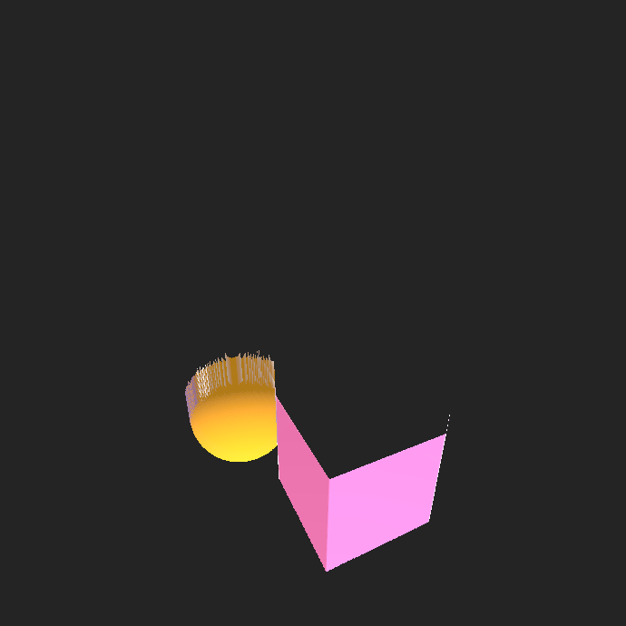
Figure 26: 厚度过大导致 SSR 拖影的出现.
这两种问题导致反射影像的质量难以接受, 但相对于拖影问题, 空隙问题则更加容易解决: 通过模糊算法来把空隙补上.
Three.js 的 SSR 模糊算法是从 PhotoShop 中逆向得到的, 实测效果非常不错.
Fragment Shader:
uniform sampler2D tDiffuse; uniform vec2 uResolution; varying vec2 vUV; void main() { //reverse engineering from PhotoShop blur filter, then change coefficient vec2 texelSize = ( 1.0 / uResolution ); vec4 c = texture2D(tDiffuse, vUV); vec2 offset; offset = (vec2(-1,0)) * texelSize; vec4 cl = texture2D(tDiffuse, vUV + offset); offset = (vec2(1,0)) * texelSize; vec4 cr = texture2D(tDiffuse, vUV + offset); offset = (vec2(0, -1)) * texelSize; vec4 cb = texture2D(tDiffuse, vUV + offset); offset = (vec2(0,1)) * texelSize; vec4 ct = texture2D(tDiffuse, vUV + offset); // float coeCenter=.5; // float coeSide=.125; float coeCenter = .2; float coeSide = .2; float a = (c.a * coeCenter + cl.a * coeSide + cr.a * coeSide + cb.a * coeSide + ct.a * coeSide); vec3 rgb = (c.rgb * c.a * coeCenter + cl.rgb * cl.a * coeSide + cr.rgb * cr.a * coeSide + cb.rgb * cb.a * coeSide + ct.rgb * ct.a * coeSide) / a; gl_FragColor = vec4(rgb, a); }
Figure 27: 对 SSR 间隙进行一次模糊处理
可以看到做了一次模糊处理之后的 SSR 少了很多间隙, 做多几次处理可以得到更好的效果.
7.3.7. 完整的后处理流程
整个实现流程其实涉及了不少 shader 以外的细节, 因此如果在尝试实现时遇到问题, 请务必参考以下模块:
8. 辉光 (Bloom)
生成场景贴图, 对场景贴图中每个区域的像素进行亮度筛选, 当通过筛选, 那么该像素就纳入统计, 得出该区域内的平均亮度.
把结果写入到贴图中, 与原场景进行混合.
9. 动态模糊 (Motion Blur)
生成视点空间的顶点贴图, 根据后处理相机的 UV 从顶点贴图中获取视点坐标 \(p_1\),
再根据视点坐标还原出上一帧时该顶点的视点坐标 \(p_0\).
\(p_1 - p_0\) 可以得出运动方向, 可以作为模糊方向.
10. 景深 (Depth of Field)
生成场景贴图作为 FocusTexture, 使用 Dilation 算法生成 FocusOutTexture.
以指定后处理相机的 UV 为圆心计算出一个圆, 圆内区域显示 FocusTexture 的内容,
圆外区域显示 FocusOutTexture 的内容.
11. 体积光照 (Volumetric Lighting)
体积光照是指模拟光线在进入雾/尘埃等介质所产生的散射现象.
11.1. 整体思路
当物体出现在视野中时, 计算从物体到相机(视线)的过程中经过了多少个光源,
当视线步进第 \(n\) 次经过光源时, 就以某种方法统计出 视线受光源影响的程度: \(I_n\) 并进行累计 \(S = \sum\limits_{i=1}^{n}\),
当整个视线步进在第 \(N\) 步程结束, 求出 \(I = \frac{S}{N}\), 并以 \(I\).
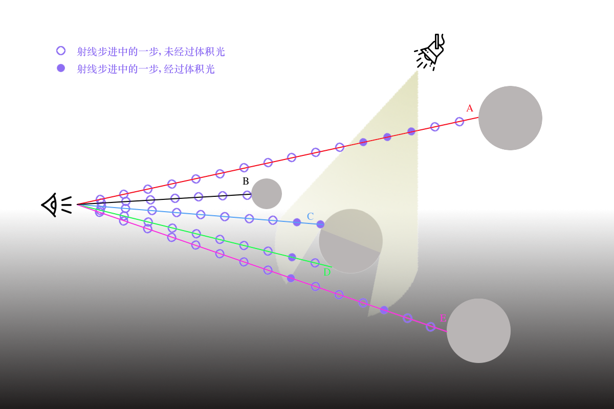
Figure 28: 点光源的体积光
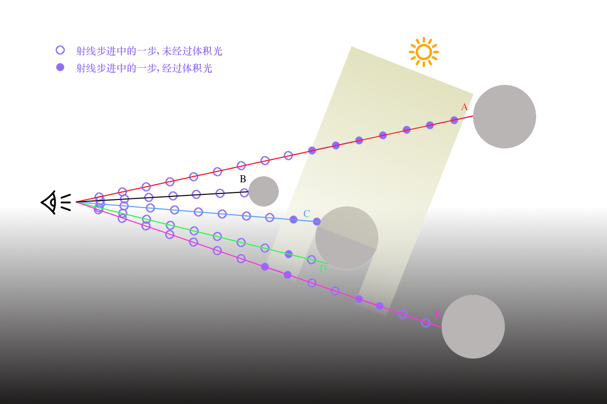
Figure 29: 平行光源的体积光
12. 为光栅化场景生成有向距离场 (Generate SDF in Rasterization)
https://github.com/gkjohnson/three-mesh-bvh
https://github.com/gkjohnson/three-mesh-bvh/tree/master?tab=readme-ov-file#bvh-queries-in-a-shader
https://github.com/gkjohnson/three-mesh-bvh/blob/master/example/gpuPathTracingSimple.js
https://discourse.threejs.org/t/datatexture3d-generation-three-mesh-bvh/29190/3
../../../files/SDF-threejs.zip
使用 MeshBvh 构建出 bvh.
先生成 BVH, 再根据 BVH 生成 SDF.
比起 three-mesh-bvh 更简单的 BVH 实现
https://github.com/benraziel/bvh-tree?tab=readme-ov-file
three-mesh-bvh 生成 SDF 的算法:
https://github.com/gkjohnson/three-mesh-bvh/blob/master/example/sdfGeneration.js
updateSDF 的 CPU 生成.
12.1. 计算判定点与三角形所处平面的有向距离
假设判定点 \(Q\) 与三角形 \(\Delta ABC\) 不处于同一个平面,
首先需要清楚平面的朝向, 它等于三角形的法向量:
\(\vec{N} = \overrightarrow{AB} \times \overrightarrow{AC}\), 其中 \(\begin{cases} \overrightarrow{AB} = B - A \\ \overrightarrow{AC} = C - A \end{cases}\)
其单位向量为 \(\hat{N} = \frac{\vec{N}}{\left| N \right|}\),
点 \(Q\) 到平面的有限距离为 \(d = \overrightarrow{AP} \cdot \hat{N}\),
点 \(Q\) 在平面上的投影点为 \(P = Q - d \times \hat{N}\).
12.2. 判断投影点是否在三角形内部 - 重心坐标法(Barycentric Coordinate Method)
判断点是否在三角形内有很多种方法, 比较常用的有同向法和接下来要学习重心坐标法.
已知 \(P\) 是 \(Q\) 在三角形 \(\Delta ABC\) 所处平面上的一个投影点,
同向法的原理要比重心坐标法更加直观一点, 但有适用条件: 需要提前确定三角形顶点的渲染顺序.
相比之下, 重心坐标法是所有情况通用的. 其实如果对线性代数有了解的话, 重心坐标法也是挺直观的:
把 \(\overrightarrow{AB} = B - A\) 和 \(\overrightarrow{AC} = C - A\) 分别看作坐标轴, 以 \(A\) 为原点共同构成一个平面坐标系,
\((u, v)\) 就是 \(P\) 该坐标系上的一个线性组合
\(\begin{equation*}\begin{aligned} & P = A + u \overrightarrow{AC} + v \overrightarrow{AB} \\ = & A + u (C - A) + v (B - A) \\ = & (1 - u - v) A + vB + uC \\ \rightarrow & P - A = \overrightarrow{AP} = u \overrightarrow{AC} + v \overrightarrow{AB} \end{aligned}\end{equation*}\)
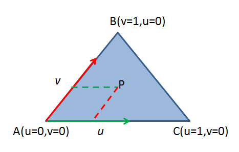
令 \(\begin{cases} \beta = v \\ \gamma = u \\ \alpha = 1 - u - v = 1 - \beta - \gamma \end{cases}\), 得到的 \(P = \alpha A + \beta B + \gamma C\) 就是常见的重心坐标定义.
当 \(\begin{cases} v + u \le 0 \\ v \gt 0 \\ u \gt 0 \end{cases}\) 同时满足, 那就 \(P\) 处于三角形内; 否则 \(P\) 在三角形之外, 这就是重心坐标法的原理.
如果不理解, 可以想象一下 \(v \lt 0\), \(P\) 就处于 \(\overrightarrow{AC}\) 反方向, 这必然在三角形之外;
如果 \(\begin{cases} v = 1.5 \\ u = 0\end{cases} \rightarrow v + u \gt 1\), \(P\) 就超出三角形的范围.
还可以从从三角形面积的角度出发, 我们知道 \(\vec{a} \times \vec{b}\) 模长等于 \(\vec{a}\) 和 \(\vec{b}\) 所张成的平行四边形面积,
而三角形的面积正是平行四边形的一半. 我们可以让点 \(P\) 分别与点 \(A\) / \(B\) / \(C\) 之间连接线段,
构造出 \(\Delta APB\) / \(\Delta APC\) / \(\Delta BPC\) 三个子三角形: \(S_{\Delta APB} + S_{\Delta APC} + S_{\Delta BPC} = S_{\Delta ABC}\).
接下来分别计算出它们的面积关系:
\(S_{\Delta ABC} = \frac{1}{2}\left| \overrightarrow{AC} \times \overrightarrow{AB} \right|\)
\(\begin{equation*}\begin{aligned} & S_{\Delta APB} \\ = & \frac{1}{2}\left| \overrightarrow{AP} \times \overrightarrow{AB} \right| \\ = & \frac{1}{2}\left|(u\overrightarrow{AC} + v\overrightarrow{AB}) \times \overrightarrow{AB}\right| \\ = & \frac{1}{2}\left| u \overrightarrow{AC} \times \overrightarrow{AB} + v \overrightarrow{AB} \times \overrightarrow{AB} \right| && \text{应用向量运算性质} (\vec{a} + \vec{b}) \times \vec{c} = \vec{a} \times \vec{c} + \vec{b} \times \vec{c} \\ = & \frac{1}{2}\left| u \overrightarrow{AC} \times \overrightarrow{AB} \right| && \text{应用向量运算性质} \vec{a} \times \vec{a} = \vec{0} \\ = & \frac{1}{2} \left| u \right| \left| \overrightarrow{AC} \times \overrightarrow{AB} \right| \end{aligned}\end{equation*}\)
\(S_{\Delta APC} = \frac{1}{2}\left| \overrightarrow{AC} \times \overrightarrow{AP} \right| = \left| \overrightarrow{AC} \times (u \overrightarrow{AC} + v \overrightarrow{AB}) \right| = \frac{1}{2} \left| v \right| \left| \overrightarrow{AC} \times \overrightarrow{AB} \right|\)
\(S_{\Delta BPC} = S_{\Delta ABC} - S_{\Delta APB} - S_{\Delta APC} = \left(1 - \left| u \right| - \left| v \right|\right) \frac{1}{2} \left| \overrightarrow{AC} \times \overrightarrow{AB} \right|\)
可以得到 \(\begin{cases} \frac{S_{\Delta BPC}}{S_{\Delta ABC}} = 1 - \left| u \right| - \left| v \right| \\ \frac{S_{\Delta APB}}{S_{\Delta ABC}} = \left| u \right| \\ \frac{S_{\Delta APC}}{S_{\Delta ABC}} = \left| v \right| \end{cases}\)
由于上面的推导是基于 \(P\) 在三角形内的前提, 所以 \(u\) 和 \(v\) 都大于 0, 且 \(u + v \le 1\). 可以发现与线性组合的定义是一样的.
因此, 现在的目标变成了解方程 \(\begin{cases} \overrightarrow{AP} \cdot \overrightarrow{AC} = (u\overrightarrow{AC} + v\overrightarrow{AB}) \cdot \overrightarrow{AC} = u \overrightarrow{AC} \cdot \overrightarrow{AC} + v \overrightarrow{AB} \cdot \overrightarrow{AC} \\ \overrightarrow{AP} \cdot \overrightarrow{AB} = (u\overrightarrow{AC} + v\overrightarrow{AB}) \cdot \overrightarrow{AB} = u \overrightarrow{AC} \cdot \overrightarrow{AB} + v \overrightarrow{AB} \cdot \overrightarrow{AB}\end{cases}\),
由于 \(\overrightarrow{AB}\) 和 \(\overrightarrow{AC}\) 并不一定正交, 所以 \(\begin{cases} \overrightarrow{AP} \cdot \overrightarrow{AB} = v \\ \overrightarrow{AP} \cdot \overrightarrow{AC} = u \end{cases}\) 不一定 成立.
为了方便阅读, 令 \(\begin{cases} \mathbf{a} = \overrightarrow{AC} \cdot \overrightarrow{AC} \\ \mathbf{b} = \overrightarrow{AB} \cdot \overrightarrow{AC} = \overrightarrow{AC} \cdot \overrightarrow{AB} \\ \mathbf{c} = \overrightarrow{AB} \cdot \overrightarrow{AB} \\ \mathbf{d} = \overrightarrow{AP} \cdot \overrightarrow{AC} \\ \mathbf{e} = \overrightarrow{AP} \cdot \overrightarrow{AB} \end{cases} \rightarrow \begin{cases} \mathbf{d} = \mathbf{a}u + \mathbf{b}v \\ \mathbf{e} = \mathbf{b}u + \mathbf{c}v \end{cases}\).
在计算时还需要注意三角形的退化情况, 即三个点共线无法构成具有二维区域的平面图形, 而是退化成为一条线段, 三角形的面值为 0.
方法也很简单, 矩阵的行列式表示变换所带来面积/体积的变化, 而坐标系可以用矩阵表示, 因此可以通过行列式进行判断三角形是否退化:
\(\mathbf{D} = \left| \begin{array}{c} \mathbf{a} & \mathbf{b} \\ \mathbf{b} & \mathbf{c} \end{array} \right| = \mathbf{a}\mathbf{c} - \mathbf{b}^2\)
如果 \(\mathbf{D} \ne 0\), 那么三角形就是非退化的情况, 可以通过可莱姆法则来解出 \(\begin{cases} u = \frac{\mathbf{d}\mathbf{c} - \mathbf{b}\mathbf{e}}{\mathbf{D}} \\ v = \frac{\mathbf{a}\mathbf{e} - \mathbf{b}\mathbf{d}}{\mathbf{D}} \end{cases}\);
如果 \(\mathbf{D} = 0\), 那么三角形就是退化的情况, 需要把问题转化成求点 \(Q\) 与线段距离的问题.
方法二
构建出一个由 \(\overrightarrow{AC}\), \(\overrightarrow{AB}\) 和 \(\overrightarrow{AC} \times \overrightarrow{AB}\) 组成的参考系,
\(\overrightarrow{AQ} = u \overrightarrow{AC} + v \overrightarrow{AB} + w \left(\overrightarrow{AC} \times \overrightarrow{AB}\right)\)
13. 风格化渲染: 地平线视差 (Curved World)
有不少游戏使用了地平线视差, 使得游戏有着不错的视觉效果, 比如动物之森(Animal Crossing),
这类视觉在远处会形成一个弯曲视觉.

很多人误以为, 这样的视觉效果可以通过把地面建模成圆柱状或球状就能实现.
但是仔细想一下就能明白这不可能, 随着视野距离越远, 地面高度差越大, 换而言之就是随着视野距离变大, 地面曲率越大.
如果是球体或圆柱体, 地面曲率是固定的, 且先不说建模的效果可不可行, 真要把所有物体围绕弯曲世界去建模, 工作量是非常大的,
而且不同视野距离下物体的弯曲程度也不一样, 总不能为所有可能的视野距离进行建模吧.
我们需要一个数学函数来模拟地面高度差的行为, 幂函数正好符合要求:
\(f(x) = (\frac{x}{r})^{c}\), 其中 \(x \gt 0\) 为视野距离, \(c \gt 1\) 是曲率指数.
\(r \gt 0\) 是曲率平缓的阈值, 当 \(x \le r\) 时曲率相对缓和, 当 \(x \gt r\) 曲率会骤然增加.
也可以使用其它符合需求的函数, 这里只是给出一个参考.
Vertex Shader:
attribute vec3 position; uniform vec3 cameraPosition; uniform mat4 modelMatrix; uniform mat4 viewMatrix; uniform mat4 projectionMatrix; varying vec3 vPosition; void main() { // 弯曲梯度: 弯曲方向以及大小, 世界坐标系 vec3 falloffWeights = vec3(.0, -1., .0); // 以视觉为准进行弯曲, 所以把弯曲梯度变换到视点坐标系 vec3 viewFalloffWeights = (viewMatrix * vec4(falloffWeights, .0)).xyz; // 计算视野距离, 但相机位置只有世界坐标系, 要把顶点变换到世界坐标系 vec3 worldPos = (modelMatrix * vec4(position, 1.0)).xyz; float viewDist = length(cameraPosition - worldPos); /* 这个计算方式会形成一种微弱的鱼目感, 即四角有一点弯曲, 如果不想要鱼目感, 可以使用线性深度作为视野距离, 又或者这样: float viewDist = length(cameraPosition.z - worldPos.z); */ // 计算弯曲程度并对顶点进行弯曲 float r = 1.0 / 25.0; float c = 5.0; float fallOff = pow(viewDist * r, c); vPosition = position + viewFalloffWeights * fallOff; gl_Position = projectionMatrix * viewMatrix * modelMatrix * vec4(vPosition, 1.0); }
这段 vertex shader 需要应用在所有物体的材质上.
像法线向量, \(uv\) 这些不需要进行弯曲变换, 但计算光照和生成阴影贴图和计算阴影时需要用上变换后的顶点坐标.
光照和阴影可以参考 图形学 - 光和材质.
14. 风格化渲染: 描边 (Outlining)
描边常用于卡通风格渲染和水墨画渲染上, 模拟现实中的笔画/线稿.
其中比较有名的游戏例子: Borderlands 系列.
14.1. 判断片元是处于轮廓上
对场景的物体进行描边, 需要先找出物体的轮廓线, 然后对轮廓线进行加黑和加粗实现描边.
为此大部分情况下, 描边效果都是在后处理中实现的, 此时描边实现变成图形处理的工作了.
在图像处理的领域中, 找出描边有很多种方式, 它们在思路上是一样的:
通过判断片元 \(p\) 与它周围片元在某个属性上否连续, 以此断定 \(p\) 是否处于轮廓边上;
如果属性不连续, 就说明 \(p\) 在物体的轮廓边上, \(p\) 就是需要描边的片元;
当相邻片元的属性差大于阈值时, 就认为这两个片元是不连续的.
14.2. 提取描边
比较的属性一般为片元的深度值(depth)或法线(normal).
深度值用于找出物体的外轮廓, 法线则是用于找出物体的内轮廓, 把两者结合在一起就可以得出完全的轮廓图.
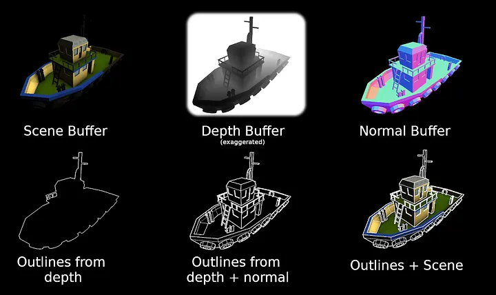
Figure 30: 图片来源于 How to render outlines in WebGL
3D Game Shaders For Beginners - Outlining 的实现方式则是如下:
通过计算相邻片元的深度差, 并找出其中最大的深度差.
3D Game Shaders For Beginners所用坐标系的 \(z\) 轴是向上, \(y\) 轴是指向屏幕内,与我们使用视点坐标的 \(z\) 分量作为线性深度不同, 它的视点坐标的 \(y\) 分量才是片元的线性深度.
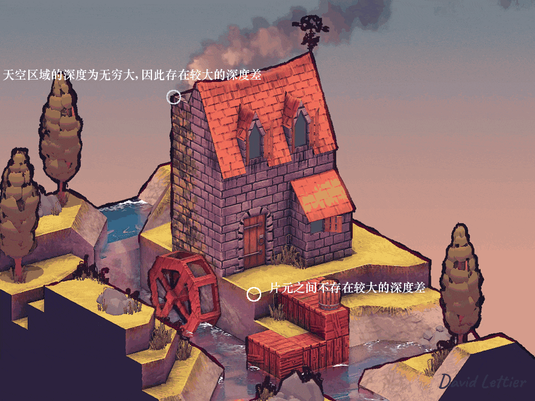
Figure 31: 图片来源于 3D Game Shaders For Beginners
如果存在较大深度差, 就说明该当前片元所对应的顶点处于物体的轮廓上.
这种方法很简单易懂, 轮廓效果取决于深度差的阈值设定, 这里就不详细介绍了.
接下来会介绍第二种方法: Sobel核.
在图像处理中, Sobel核 是用于图像边缘检查的, 原理是计算当前片元在各个方向的导数并进行统计,
这些导数称为方向导数, 能够很好地反应出局部范围内的片元变化规律.
Sobel核 的统计结果能够反映出当前片元与边缘的相似程度, 相似程度越高, 统计结果越大.
由于灰阶(gray scale)图更能突显图像的物体的轮廓, 因此为了提高连续性判断的准确性,
在使用 Sobel核 之前通常会先生成场景的灰阶图, 再从灰阶图提取轮廓线.
这就是为什么会选择深度值做连续性判断, 因为深度贴图本身就是一张灰阶图;
法线贴图虽不是灰阶图, 但可根据法线向量计算出某种灰阶值来得出灰阶图, 比如说计算亮度,
由于连续的法线向量是相似的, 因此它们的灰阶值也是相似的, 同样可以很好地突显出轮廓线.
varying vec2 vUV; uniform sampler2D tDiffuse; uniform sampler2D tDepth; uniform sampler2D tNormal; uniform float uCameraNear; uniform float uCameraFar; uniform vec2 uResolution; float getLinearDepth(sampler2D t, vec2 uv) { float ndcZ = 2.0 * texture2D(t, uv).r - 1.0; float viewZ = 2.0 * uCameraNear * uCameraFar / (ndcZ * (uCameraFar - uCameraNear) - (uCameraNear + uCameraFar)); float linearViewDepth = -viewZ; float linearDepth = (linearViewDepth - uCameraNear) / (uCameraFar - uCameraNear); return linearDepth; } float luma(vec3 color) { return dot(vec3(0.2125, 0.7154, 0.0721), color); } float convolution(vec2 uv, float[9] kernel, float[9] pixels) { float conv = 0.0; for (int i = 0; i <= 2; i++) { for (int j = 0; j <= 2; j++) { int index = j * 3 + i; conv += pixels[index] * kernel[index]; } } return conv; } void main () { vec2 uv = vUV; vec4 color = texture2D(tDiffuse, uv); vec2 texelSize = 1.0 / uResolution; // 控制描边宽度 float outlineThickness = 3.0; float attrs[9]; for (int i = -1; i <= 1; i++) { for (int j = -1; j <= 1; j++) { int index = (-j + 1) * 3 + (i + 1); vec2 coord = uv + outlineThickness * vec2(i, j) * texelSize; float d = getLinearDepth(tDepth, coord); // 这里无需把法线变量还原到 [-1, 1] 的范围， 不影响连续性判断 // float l = luma(2.0 * texture2D(tNormal, coord).xyz - 1.0); float l = luma(texture2D(tNormal, coord).xyz); // 只提取外轮廓 attrs[index] += d; // 只提取内轮廓 attrs[index] += l; // 卷积运算满足分配律: F * (G1 + G2) = F * G1 + F * G2 } } float kernelX[9] = float[9](-1.0, 0.0, 1.0, -2.0, 0.0, 2.0, -1.0, 0.0, 1.0); float kernelY[9] = float[9](1.0, 2.0, 1.0, 0.0, 0.0, 0.0, -1.0, -2.0, -1.0); float convX = convolution(uv, kernelX, attrs); float convY = convolution(uv, kernelY, attrs); float g = sqrt(convX * convX + convY * convY); // 1. 显示深度贴图 // gl_FragColor = vec4(vec3(getLinearDepth(tDepth, uv)), 1.0); // 2. 显示法线亮度贴图 // gl_FragColor = vec4(vec3(luma(texture2D(tNormal, uv).xyz)), 1.0); // 3. 显示轮廓图 gl_FragColor = vec4(1.0 - vec3(g), 1.0); }
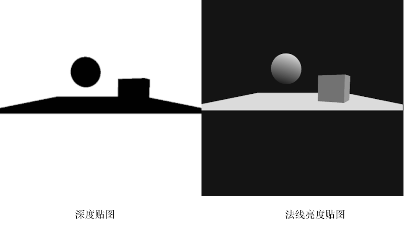
Figure 32: 从深度贴图提取外轮廓; 从法线贴图的亮度图中提取内轮廓
从效果来看, 法线贴图就基本上能内外轮廓一起提取了, 因此, 有些实现是不会用上深度贴图提取外轮廓的.
但法线贴图在某些情况下并不能很好的获取到内轮廓, 比如图中的情况:
在俯视角上, 地板与立方体的法线不存在差异, 看上去就是连续的, 导致无法识别轮廓.
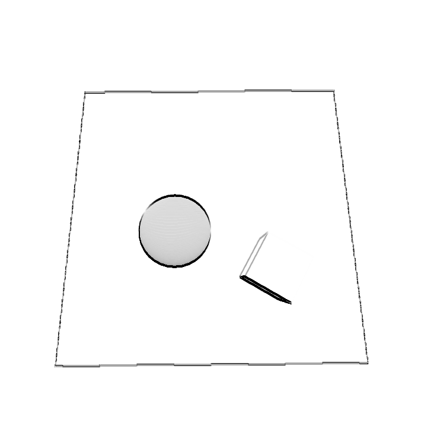
Figure 33: 从法线亮度图提取的轮廓图 (俯视角)
(PS: 这里相机还是稍微偏了一点, 否则完全看不到立方体)
在俯视角上, 地板和立方体的唯一区别就只有它们的深度值了, 这里立方体顶部的深度值要稍微比地板的要小,
所以结合(深度)外轮廓图可以给地板和立方体增加一个差异, 这样就可以对两者进行区分从而正确识别轮廓.
不过还有一个问题, 那就是地板和立方体的深度值差异太小了, 最终效果和原本没太大差别,
所以在两者结合的情况下, 需要提高深度值的权重, 从而提高地板和立方体的深度值差异.
// 只提取外轮廓, 给深度值添加权重 25.0 attrs[index] += 25.0 * d; // 只提取内轮廓 attrs[index] += l;
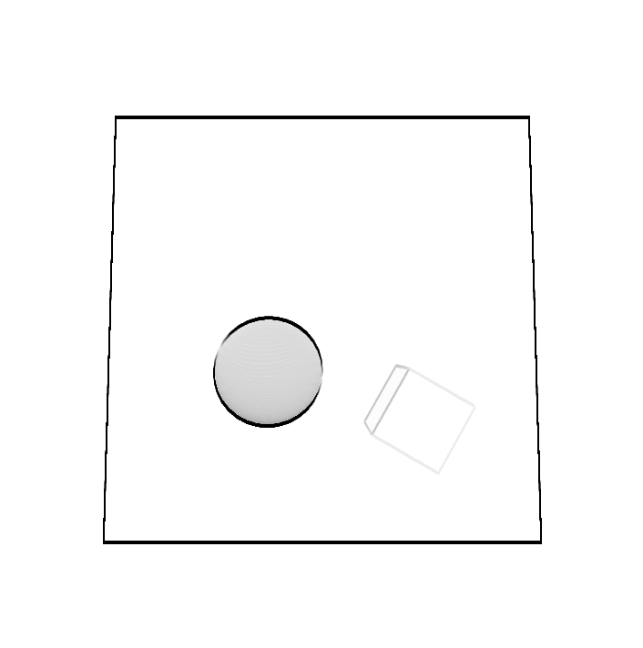
Figure 34: 两贴图一同提取轮廓, 并增强后深度值后的权重 (俯视角)
14.3. 对场景进行描边
最后就是让描边图与场景图结合在一起, 做法是让场景图的像素和描边像素混合.
// gl_FragColor = vec4(1.0 - vec3(g), 1.0); vec4 color = texture2D(tDiffuse, uv); // 场景像素 vec4 outlineColor = vec4(0.0, 0.0, 0.0, 1.0); // 描边颜色 gl_FragColor = mix(color, outlineColor, g);
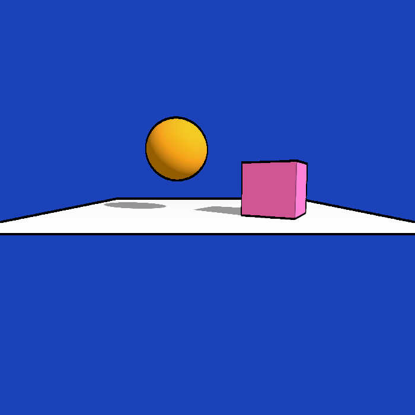
Figure 35: 对场景进行描边
14.4. 完整代码
这组 Shader 要应用在后处理上, 深度贴图和法线贴图的生成可以参考 Render To Texture.
Fragment Shader:
varying vec2 vUV; uniform sampler2D tDiffuse; uniform sampler2D tDepth; uniform sampler2D tNormal; uniform float uCameraNear; uniform float uCameraFar; uniform vec2 uResolution; float getLinearDepth(sampler2D t, vec2 uv) { float ndcZ = 2.0 * texture2D(t, uv).r - 1.0; float viewZ = 2.0 * uCameraNear * uCameraFar / (ndcZ * (uCameraFar - uCameraNear) - (uCameraNear + uCameraFar)); float linearViewDepth = -viewZ; float linearDepth = (linearViewDepth - uCameraNear) / (uCameraFar - uCameraNear); return linearDepth; } float luma(vec3 color) { return dot(vec3(0.2125, 0.7154, 0.0721), color); } // 卷积运算符 float convolution(vec2 uv, float[9] kernel, float[9] pixels) { float conv = 0.0; for (int i = 0; i <= 2; i++) { for (int j = 0; j <= 2; j++) { int index = j * 3 + i; conv += pixels[index] * kernel[index]; } } return conv; } void main () { vec2 uv = vUV; vec4 color = texture2D(tDiffuse, uv); vec2 texelSize = 1.0 / uResolution; float outlineThickness = 3.0; vec4 outlineColor = vec4(0.0, 0.0, 0.0, 1.0); float attrs[9]; for (int i = -1; i <= 1; i++) { for (int j = -1; j <= 1; j++) { int index = (-j + 1) * 3 + (i + 1); vec2 coord = uv + outlineThickness * vec2(i, j) * texelSize; float d = getLinearDepth(tDepth, coord); // 这里无需把法线变量还原到 [-1, 1] 的范围， 不影响连续性判断 // float l = luma(2.0 * texture2D(tNormal, coord).xyz - 1.0); float l = luma(texture2D(tNormal, coord).xyz); // 只提取外轮廓 attrs[index] += 25.0 * d; // 只提取内轮廓 attrs[index] += l; // 卷积运算满足分配律: F * (G1 + G2) = F * G1 + F * G2 } } float kernelX[9] = float[9](-1.0, 0.0, 1.0, -2.0, 0.0, 2.0, -1.0, 0.0, 1.0); float kernelY[9] = float[9](1.0, 2.0, 1.0, 0.0, 0.0, 0.0, -1.0, -2.0, -1.0); float convX = convolution(uv, kernelX, attrs); float convY = convolution(uv, kernelY, attrs); float g = sqrt(convX * convX + convY * convY); // 1. 显示深度贴图 // gl_FragColor = vec4(vec3(getLinearDepth(tDepth, uv)), 1.0); // 2. 显示法线亮度贴图 // gl_FragColor = vec4(vec3(luma(texture2D(tNormal, uv).xyz)), 1.0); // 3. 显示轮廓图 // gl_FragColor = vec4(1.0 - vec3(g), 1.0); // 4. 对场景进行描边 gl_FragColor = mix(color, outlineColor, g); }
15. 风格化渲染: 莫比斯风格渲染 (Moebius Style Shading)
在空余时间受 Useless Game Dev - Moebius-style 3D Rendering 的启发实现了莫比斯风格渲染,
期间还参考了 Moebius-style post-processing and other stylized shaders,
无论是
shader的实现思路还是three.js的使用方面都能学到不少东西, 于是决定进行一番记录.
15.1. 整体思路
整个实现分为 3 个步骤来完成对莫比斯风格的复刻:
第 1 步: 对场景进行描边;
第 2 步: 找出阴影区域, 并绘制自定义形状的阴影;
第 3 步: 找出高亮反射区, 为它描边并对反射区域进行涂白.
15.2. 描边处理
描边的具体实现就不赘述了, 不过我们要在原有代码上做一些调整, 使得描边类似与手绘那样带有一些扭曲.
参考的文章使用了随机函数来生成随机偏移, 从而实现描边扭曲,
vec2 displacement = vec2( (hash(gl_FragCoord.xy) * sin(gl_FragCoord.y * frequency)) , (hash(gl_FragCoord.xy) * cos(gl_FragCoord.x * frequency)) ) * amplitude /resolution.xy; // hash 是随机函数
但有一个问题, 随机函数的随机性是基于雪崩效应(avalanche effect)实现的, 所谓雪崩效应是指:
函数的输入值只要产生很小的变化就能导致输出值产生较大的变化.
因此, 描边在扭曲幅度(amplitude)变得稍大时会出现断开并形成噪点.
Figure 36: 原实现的效果: 描边断裂, 形成噪点
想解决这个问题很简单, 理论上用连续函数替代随机函数就可以解决问题.
连续函数是当输入值的变化足够小的时候, 输出的变化也会随之足够小的函数, 正好与雪崩效应相反.
所以这里换成梯度噪声生成偏移, 强行保证即便描边的扭曲幅度再大也不会断开.
vec2 texelSize = 1. / uResolution; float amplitude = 1.2; float frequency = noise(gl_FragCoord.xy * texelSize) / amplitude * 0.6; /* noise 是 2D 梯度噪声, 这里对噪声值除以最大幅度, 是为了当扭曲幅度越大时, 扭曲之间的间隔也越大, 从避免线条杂乱 */ vec2 displacement = vec2(sin(gl_FragCoord.y * frequency), cos(gl_FragCoord.x * frequency)) * amplitude * texelSize; float attrs[9]; for (int i = -1; i <= 1; i++) { for (int j = -1; j <= 1; j++) { int index = (-j + 1) * 3 + (i + 1); vec2 coord = uv + displacement + outlineThickness * vec2(i, j) * texelSize; float d = getLinearDepth(tDepth, coord); float l = luma(texture2D(tNormal, coord).xyz); attrs[index] = d + l; } }
Figure 37: 优化过后的描边没有颗粒感
Figure 38: 扭曲幅度为 5.0 对齐原代码进行对比, 描边扭曲程度较大, 但依然没断裂
15.3. 找出场景的阴影区域
看到阴影区域这个词, 通常第一反应是阴影贴图, 然而阴影贴图只能找到 直射光线 被遮蔽的区域.
物体的亮度是由直射光线和 间接光线 一同贡献的, 这就是为什么能够观察到那些没受到直射光线照射的区域.
因此, 本章节范围内重新定义阴影区域: 低亮度的区域, 或者说受到较少光照的区域.
为了直观理解低亮度与直射光线被遮蔽之间的区别, 可以看以下图片.
Figure 39: 原场景 (左), 原场景中光线被遮蔽的区域 (右)
根据图像, 物体较暗的地方并不是直射光线被遮蔽造成的, 而是光照计算结果偏低的结果.
也可以把物体的阴影选项关闭进行对比, 可以发现去掉阴影后, 物体的低亮度区域依然存在.
Figure 40: 关闭物体的阴影选项
那么该如何找出阴影区域呢? 思路如下:
首先要使用亮度函数把场景渲染结果转换成亮度灰阶图:
float luma(vec3 color) { return dot(vec3(0.2125, 0.7154, 0.0721), color); }
当片元的亮度小于一定值时就可以认为片元处于阴影区域, 这里把阴影区域按照亮度从大到小划分为 3 个等级:
当阴影区域的亮度达到最大等级, 在阴影区域上绘制斜线作为阴影线;
如果亮度达到中级, 在原有阴影线上 添加 垂直线作为阴影线;
如果亮度达到最小等级, 在原有阴影线 添加 水平线作为阴影线;
总的来说就是阴影区域亮度越底阴影线越多.
#define LOW_LUMA_1 0.32 #define LOW_LUMA_2 0.18 #define LOW_LUMA_3 0.04 vec4 pixelColor = texture2D(tDiffuse, uv); float pixelLuma = clamp(luma(pixelColor.rgb), .0, 1.); float interval = 20.0; // 阴影线的间隔 float shadowThickness = 4.0; // 阴影线的粗细 // 绘制斜对角阴影线 if (pixelLuma <= LOW_LUMA_1 && depth <= 0.99) { // 转 x 轴对齐对角线, 在旋转后的 x 轴方向绘制线条 float angle = -atan(uResolution.y, uResolution.x); float rx = dot(vec2(cos(angle), -sin(angle)), uv); // 每 interval 个单位绘制一条粗细为 4 的对角线 if (mod((rx + displacement.x) * uResolution.x, interval) < shadowThickness) { pixelColor = outlineColor; } } // 绘制垂直阴影线 if (pixelLuma <= LOW_LUMA_2 && depth <= 0.99) { if (mod((uv.x + displacement.x) * uResolution.x, interval) < shadowThickness) { pixelColor = outlineColor; } } // 绘制水平阴影线 if (pixelLuma <= LOW_LUMA_3 && depth <= 0.99) { if (mod((uv.y + displacement.y) * uResolution.y, interval) < shadowThickness) { pixelColor = outlineColor; } }
这里的亮度并非光照计算的结果, 而是基于场景色彩计算的筛选结果,
有些场景区域的表面本来就深色, 哪怕是处于直射光线之下也有可能被判定为阴影区域.
因此, 阴影的等级划分取决于场景色彩,
如果场景色彩偏深的话, 那么阴影区最大等级的亮度值应偏小一点, 否则整个场景将会被大面积打上阴影线;
相反场景色彩偏浅, 阴影区最大等级的亮度值应偏大一点, 否则整个场景找不到一处阴影.
这也就是为什么按照其他人的方法去实现可能会得出不一样的效果, 因为大家的场景是不一样的.
Figure 41: 绘制阴影线
TODO
针对场景颜色过深导致被误判为阴影区域的问题, 本人有一种未经实践的想法:
计算出光照计算中的 漫反射系数 以及 镜面反射系数 之和 \(S \ge 0\) 作为亮度, 基于此亮度判断是否处于阴影区域.
但 \(S\) 并没有一个固定的范围, 不好划分阴影等级, 或许可以使用
Reinhard映射来把 \(S\) 映射到 \([0, 1)\) 中,并生成亮度贴图.
这个想法就等之后有空再尝试了.
15.4. 绘制高亮反射区域
大体思路是通过光照计算找出高亮反射区域, 并使用特殊值对高亮反射区域内的片元进行标记.
通常来说需要多一张贴图来储存标记结果的, 幸好描边用的法线贴图生成是自己实现的, 可以在它的基础上修改标记出高亮区域.
原理很简单, 法线贴图是用来做连续性测试的, 通过像 \((0.0, 0.0, 0.0)\) 特殊值作为输出的法线破坏原有法线贴图的连续性,
而这些特殊法线本身又形成一个新的连续区域, 从而勾勒出高亮区域.
为了方便实现, 使用的光照模型为 图形学 - 光和材质: OpenGL 的基础光照模型 - Blinn-Phong shading model.
修改后的法线贴图生成用的 Vertex Shader:
varying vec3 vNormal; varying vec3 vPosition; void main () { vec4 modelPosition = modelMatrix * vec4(position, 1.0); gl_Position = projectionMatrix * viewMatrix * modelPosition; vPosition = modelPosition.xyz; vNormal = normalize(normalMatrix * normal); }
修改后的法线贴图生成用的 Fragment Shader:
varying vec3 vNormal; varying vec3 vPosition; uniform vec4 uLightPos; void main () { vec3 viewDir = normalize(cameraPosition - vPosition); vec3 lightDir = normalize(uLightPos.w > 0.0 ? uLightPos.xyz - vPosition: uLightPos.xyz); vec3 halfDir = normalize(viewDir + lightDir); float shiness = uLightPos.w > 0.0 ? length(uLightPos.xyz - vPosition) * 4.0: 60.0; float kSpecular = pow(max(dot(halfDir, vNormal), .0), shiness); float kDiffuse = max(dot(vNormal, lightDir), .0); vec3 color = vec3(vNormal * 0.5 + 0.5); // 光线和法线之间的角度需要小于 41 度且 halfDir 和视线之间的角度小于 60 角时标记为高亮 if (kDiffuse > 0.75 && kSpecular >= .5) { color = vec3(0.0); } // 输出 kDiffuse 作为光照计算结果, 高亮区域已经被法线标记, 所以 kSpecular 就不需要返回 gl_FragColor = vec4(color, kDiffuse); }
现在的渲染结果可以勾勒出高亮反射区了,
Figure 42: 勾勒高亮反射区域
最后就是给高亮区域涂抹成白色(高亮区域基本都是白色的), 这一步有两个点需要注意:
第一, 考虑光照计算结果是否参与进行素的亮度计算, 如果参与该如何计算; 第二, 只有非阴影区域才有能高亮反射区域.
对于第一点, 我个人的想法是可以参与, 但要调整好阴影区域的亮度等级划分, 以及参光照计算结果的参与程度,
具体计算方式如下:
float diffuseFactor = 0.17; float pixelLuma = clamp(luma(pixelColor.rgb) + normal.a * diffuseFactor, .0, 1.); /* normal.a * diffuseFactor 的最大值为 diffuseFactor, diffuseFactor 应为一个亮度等级差, 意味着最大程度可以为画面阴影区域的亮度提高一个等级, 从而减少阴影线的密度, 你也可以有自己的计算方法 */ // ... // 绘制高亮区 if (pixelLuma > LOW_LUMA_1 && depth <= 0.99) { // pixelLuma > LOW_LUMA_1 表示片元不在阴影区, 在阴影区时直接不绘制高亮区域 if (all(lessThanEqual(normal.xyz, vec3(0.0)))) { pixelColor = vec4(1.0); } }
Figure 43: 莫比斯风格渲染的最终效果
可以发现高亮反射区域的描边在刚进入阴影区时没有完全消失.
Figure 44: 阴影区出现了高亮反射区的轮廓
解决办法是根据场景亮度在标记高亮区域, 只有不在阴影区才能有机会标记为高亮.
修改后的法线贴图生成用的 Vertex Shader:
varying vec3 vNormal; varying vec3 vPosition; varying vec2 vScreenUV; void main () { vec4 modelPosition = modelMatrix * vec4(position, 1.0); vec4 clip = projectionMatrix * viewMatrix * modelPosition; gl_Position = clip; vNormal = normalize(normalMatrix * normal); vPosition = modelPosition.xyz; // 计算出顶点的相机 UV, 因为是要在场景贴图上采样, // 生成场景贴图的相机正好是当前成像用的相机 vScreenUV = clip.xy / clip.w * 0.5 + 0.5; }
修改后的法线贴图生成用的 Fragment Shader:
varying vec3 vNormal; varying vec3 vPosition; varying vec2 vScreenUV; uniform vec4 uLightPos; uniform sampler2D tDiffuse; // 场景的颜色贴图 float luma(vec3 color) { return dot(vec3(0.2125, 0.7154, 0.0721), color); } void main () { vec3 viewDir = normalize(cameraPosition - vPosition); vec3 lightDir = normalize(uLightPos.w > 0.0 ? uLightPos.xyz - vPosition: uLightPos.xyz); vec3 halfDir = normalize(viewDir + lightDir); float shiness = uLightPos.w > 0.0 ? length(uLightPos.xyz - vPosition) * 4.0: 60.0; float kSpecular = pow(max(dot(halfDir, vNormal), .0), shiness); float kDiffuse = max(dot(vNormal, lightDir), .0); vec4 sceneColor = texture2D(tDiffuse, vScreenUV); // 进行亮度计算, 需要与前面的亮度计算进行统一 float pixelLuma = clamp(luma(sceneColor.xyz) + kDiffuse * 0.17, 0., 1.); vec3 color = vec3(vNormal * 0.5 + 0.5); // 当亮度小于 LOW_LUMA_1 (假设为 0.32) 就认为进入阴影区域, 这里去掉了使用 kDiffuse 进行判断 if (pixelLuma > 0.32 && kSpecular >= .5) { color = vec3(0.0); } gl_FragColor = vec4(color, kDiffuse); }
Figure 45: 修复高亮区域出现在阴影区的问题: 高亮区域逐渐消失在阴影边缘附近
至此, 整个莫比斯风格渲染完成.
16. 风格化渲染: 卡通着色 (Cel Shading / Toon Shading / Carton Shading)
16.1. 构成
光照
Blinn-Phong Shading Model + Fresnel Light
f(b, a, n, f) := (b - a) / (n - f)$ plot2d(f(x, 1, 1 / 0.1, 1 / 200), [x, 1/200, 1]);
视点坐标 \(pos_{a}\) 和 \(pos_{b}\);
NDC 坐标 \(\frac{(pos_{a})_{xyz}}{(pos_{a})_{w}}\) 和 \(\frac{(pos_{b})_{xyz}}{(pos_{a})_{w}}\);
\(L_{d} = \frac{L_{w}}{1 + L_{w}} \rightarrow L_{w} = \frac{L_{d}}{1 - L_{d}}\)